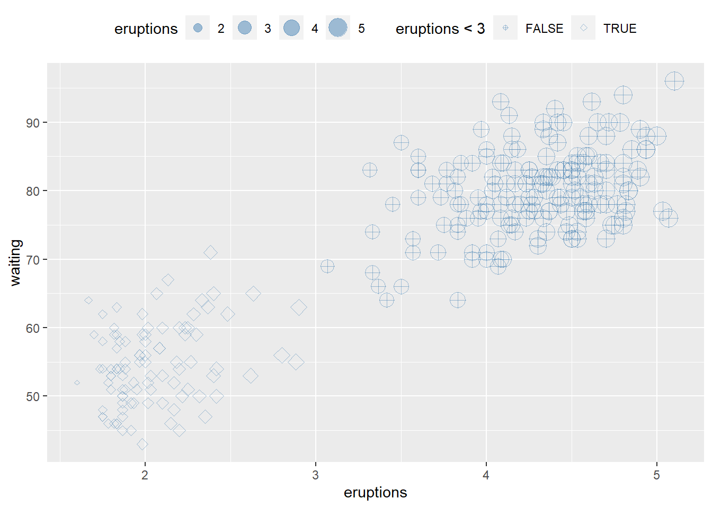
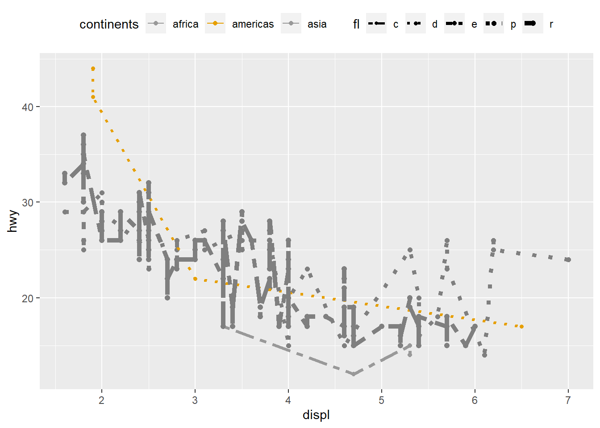
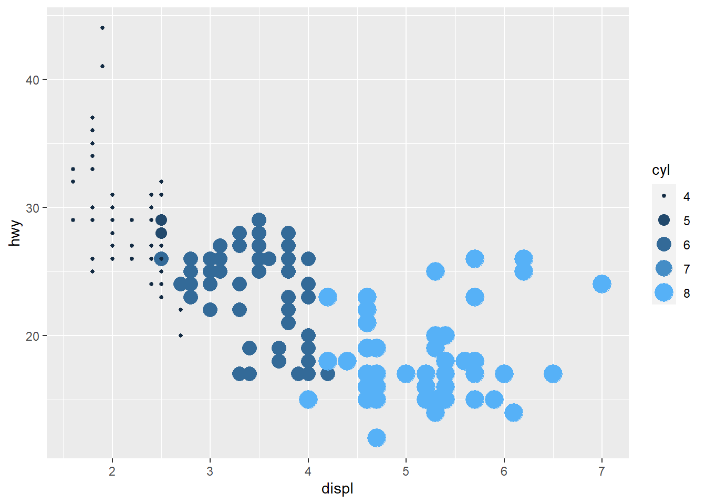
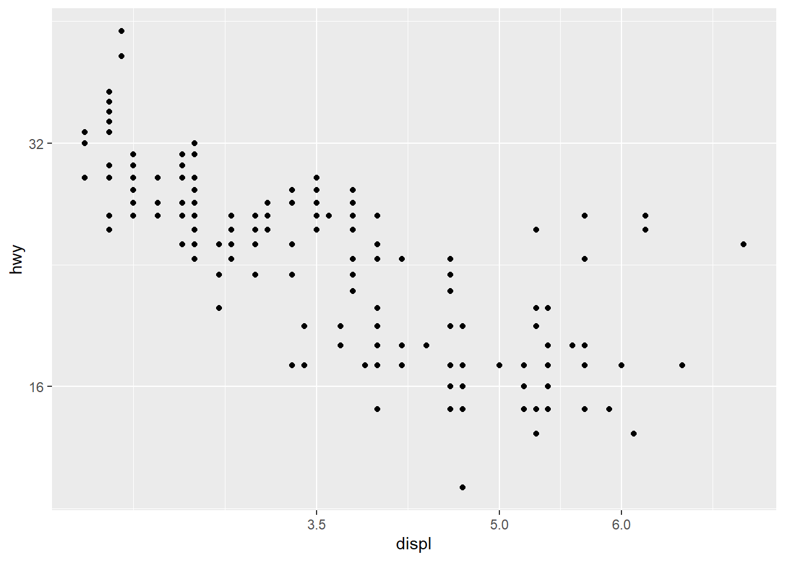
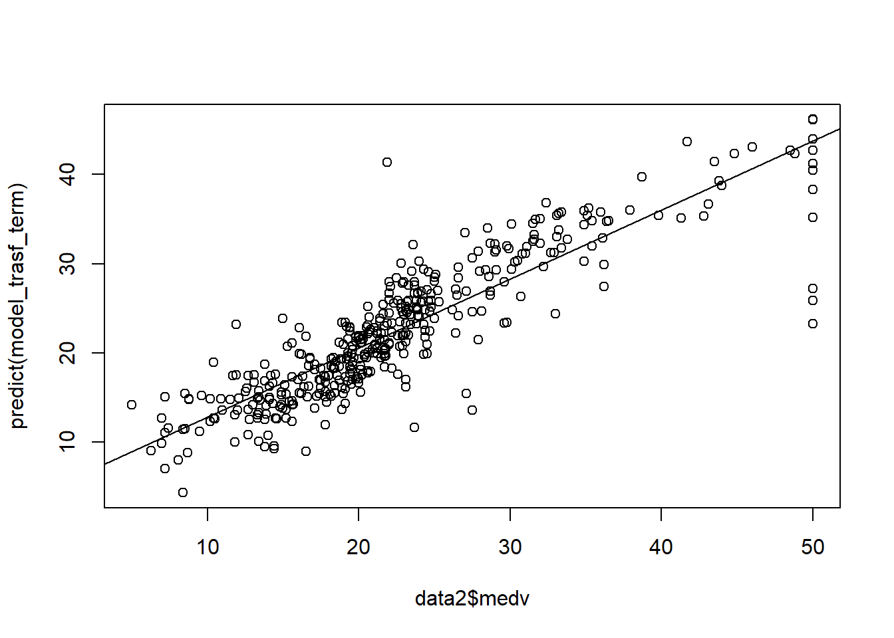

6 Statistical models
6.1 Simple linear regression
Simple linear regression is the most common “first model” in applied statistics. It answers a basic question:
How does the expected value of an outcome \(Y\) change as a function of a single predictor \(X\)?
Even if your final analysis uses more sophisticated methods (mixed models, GLMs, survival models), simple linear regression remains a key building block. It teaches you how estimation works, why assumptions matter, and how uncertainty is quantified through standard errors, confidence intervals, and hypothesis tests.
In practice, regression has two equally important goals:
1) Explanation (estimating association or effect size), and
2) Prediction (forecasting outcomes at new values of \(X\)).
6.1.1 Linear regeression assumptions
A regression model is only as reliable as its assumptions. In real-world analysis, the assumptions are rarely perfect, but they guide diagnostics and help you understand when inference may break down.
There are four principal assumptions:
Linearity of the relationship between dependent and independent variables.
This means the conditional mean \(E(Y|X)\) is well-approximated by a straight line. If the true relationship is curved, the linear model may still be useful as a local approximation, but interpretation can become misleading.Statistical independence of the errors with \(y\) variable.
Independence is often violated in longitudinal data, clustered data (e.g., patients within sites), or time series. When independence fails, standard errors are typically wrong—often too small, leading to overly optimistic p-values and confidence intervals that are too narrow.Homoscedasticity (constant variance) of the errors for all \(x\).
If variability increases with \(X\) (a “fanning out” pattern), the model may still estimate the mean trend reasonably, but standard errors and tests can be distorted unless you use robust methods or transform variables.Normality of the error distribution.
Normality matters mainly for small-sample inference. Large samples rely less on strict normality due to asymptotic approximations. Also note: normality is assumed for the errors, not necessarily for \(X\) or \(Y\) marginally.
if independent assumption violated, the estimated standard errors tend to underestimate the true standard error. P value associated thus is lower.
only the prediction errors need to be normally distributed. but with extremely asymmetric or long-tailed, it may be hard to fit them (x and y) into a linear model whose errors will be normally distributed.
6.1.2 Population regression function
The population regression function is the ideal target we would like to know: the true conditional mean of \(Y\) given \(X\). Regression is fundamentally about modeling and estimating this conditional expectation.
Regression is to estimate and/or predict the population mean (expectation) of dependent variable (yi) by a known or a set value of explanatory variables (xi). Population regression line (PRL) is the trajectory of the conditional expectation value given Xi.
\[ E(Y|X_i)=f(X_i)=\beta_1+\beta_2X_i \]
This is an unknown but fixed value (can be estimated).
A key interpretation: - \(\beta_1\) is the expected value of \(Y\) when \(X=0\) (sometimes meaningful, sometimes not). - \(\beta_2\) is the expected change in \(Y\) for a one-unit increase in \(X\).
6.1.3 Population regression model
In the population, actual observations deviate from the regression function due to randomness and unmeasured factors. We represent this deviation as an error term \(u_i\).
\[ Y_i=\beta_1+\beta_2X_i+u_i \]
the errors \(u_i=y_i-\hat{y}_i\) have equal variance
In applied interpretation, \(u_i\) captures everything not explained by \(X\): measurement noise, omitted variables, and inherent randomness.
6.1.4 Sample regression model
In practice we observe data and estimate coefficients. The sample regression model replaces unknown population parameters with estimates (hats), and uses residuals \(e_i\) as estimated errors.
(using hat to indicate sample)
\[ Y_i=\hat{\beta}_1+\hat{\beta}_2X_i+e_i \]
since
\[ u_i \sim N(0,\sigma^2) \] or \[ e_i \sim N(0,\hat{\sigma} ^2) \]
and
i.i.d., independent identically distribution, the probability distributions are all the same and variables are independent of each other.
\[ \begin{align} u_i \sim i.i.d \ N(0,\sigma^2) \end{align} \]
then
\[ \begin{align} Y_i- \beta_1+\beta_2X_i (\hat{Y_i}) &\sim i.i.d \ N(0,\sigma^2)\\ \end{align} \]
This i.i.d. assumption is what allows us to derive standard errors and perform t-tests and F-tests in the classical linear regression framework.
6.1.5 Least squares: minimize \(Q=\sum (Y_i-\hat{Y}_i)^2\)
The ordinary least squares (OLS) estimator chooses coefficients that minimize the total squared residual error. Squaring penalizes large deviations and gives a unique and mathematically convenient solution.
thence, to minimize Q \(\sum{(Y_i-\hat{Y}_i)^2}\) to solve b0 and b1.
\[ \begin{align} Min(Q) &=\sum{(Y_i-\hat{Y}_i)^2}\\ &=\sum{\left ( Y_i-(\hat{\beta}_1+\hat{\beta}_2X_i) \right )^2}\\ &=f(\hat{\beta}_1,\hat{\beta}_2) \end{align} \]
6.1.6 Solve \(\hat{\beta}_1,\hat{\beta}_2\) and variance
Once the least squares problem is solved, you get closed-form estimators for the slope and intercept. The sampling variability of these estimators depends on: - the error variance \(\sigma^2\), - the spread of \(X\) values (more spread → more information → smaller variance).
\[ \begin{align} \begin{split} \hat{\beta}_2 &=\frac{\sum{x_iy_i}}{\sum{x_i^2}}\\ \hat{\beta_1} &=\bar{Y}_i-\hat{\beta}_2\bar{X}_i \end{split} \\ var(\hat{\beta}_2) =\sigma_{\hat{\beta}_2}^2&=\frac{1}{\sum{x_i^2}}\cdot\sigma^2&&\text{} \\ var(\hat{\beta}_1) =\sigma_{\hat{\beta}_1}^2 &=\frac{\sum{X_i^2}}{n\sum{x_i^2}}\cdot\sigma^2 \end{align} \]
A practical takeaway: if your \(X\) values are tightly clustered, \(\sum x_i^2\) is small and the slope becomes hard to estimate precisely.
6.1.7 Calculate the variance \(\hat{\sigma}^2\) of error \(e_i\)
The residual variance is estimated from the residual sum of squares. Conceptually, it measures how much unexplained variability remains after fitting the regression line.
(for sample)
\[ \begin{align} \hat{Y}_i &=\hat{\beta}_1+\hat{\beta}_2X_i \\ e_i &=Y_i-\hat{Y}_i \\ \hat{\sigma}^2 &=\frac{\sum{e_i^2}}{n-1}=\frac{\sum{(Y_i-\hat{Y}_i)^2}}{n-1} \end{align} \]
(Practical note: in classical regression, the unbiased estimator typically uses \(n-2\) in the denominator for simple linear regression because two parameters were estimated. Your expression shows the core idea—estimating variance from squared residuals.)
6.1.8 Sum of squares decomposition
A central identity in regression is that total variability can be decomposed into explained and unexplained components. This is the basis of \(R^2\) and the ANOVA-style F test.
\[ \begin{align} (Y_i-\bar{Y_i}) &= (\hat{Y_i}-\bar{Y_i}) +(Y_i-\hat{Y_i}) \\ \sum{y_i^2} &= \sum{\hat{y_i}^2} +\sum{e_i^2} \\ TSS&=ESS+RSS \end{align} \]
Interpretation: - TSS: total sum of squares (overall variability around the mean) - ESS: explained sum of squares (variability explained by the regression) - RSS: residual sum of squares (unexplained variability)
6.1.9 Coefficient of determination \(R^2\) and goodness of fit
\(R^2\) is the proportion of variability explained by the model. It is descriptive: a higher \(R^2\) means the fitted line tracks the data more closely, but it does not guarantee causality or correctness of assumptions.
\[ \begin{align} r^2 &=\frac{ESS}{TSS}=\frac{\sum{(\hat{Y_i}-\bar{Y})^2}}{\sum{(Y_i-\bar{Y})^2}}\\ &=1-\frac{RSS}{TSS}=1-\frac{\sum{(Y_i-\hat{Y_i})^2}}{\sum{(Y_i-\bar{Y})^2}} \end{align} \]
In practice, always interpret \(R^2\) alongside residual diagnostics. A model can have a decent \(R^2\) but still violate key assumptions (e.g., heteroscedasticity).
6.1.10 Test of regression coefficients
Hypothesis testing in regression typically focuses on whether coefficients differ from zero (or another clinically meaningful value). Under classical assumptions, coefficients are normally distributed around their true values.
since
\[
\begin{align}
\hat{\beta_2} &\sim N(\beta_2,\sigma^2_{\hat{\beta_2}}) \\
\hat{\beta_1} &\sim N(\beta_1,\sigma^2_{\hat{\beta_1}})
\end{align}
\]
and \[ \begin{align} S_{\hat{\beta}_2} &=\sqrt{\frac{1}{\sum{x_i^2}}}\cdot\hat{\sigma} \\ S_{\hat{\beta}_1} &=\sqrt{\frac{\sum{X_i^2}}{n\sum{x_i^2}}}\cdot\hat{\sigma} \end{align} \]
therefore
\[
\begin{align}
t_{\hat{\beta_2}}^{\ast}&=\frac{\hat{\beta_2}-\beta_2}{S_{\hat{\beta_2}}}
=\frac{\hat{\beta_2}}{S_{\hat{\beta_2}}}
=\frac{\hat{\beta_2}}{\sqrt{\frac{1}{\sum{x_i^2}}}\cdot\hat{\sigma}}
\sim t(n-2)
\\
t_{\hat{\beta_1}}^{\ast}&=\frac{\hat{\beta_1}-\beta_1}{S_{\hat{\beta_1}}}
=\frac{\hat{\beta_1}}{S_{\hat{\beta_1}}}
=\frac{\hat{\beta_1}}{\sqrt{\frac{\sum{X_i^2}}{n\sum{x_i^2}}}\cdot\hat{\sigma}}
\sim t(n-2)
\end{align}
\]
In applied reporting, the slope test is often the primary focus, because it corresponds to whether \(X\) is associated with \(Y\) in a linear trend.
6.1.11 Statistical test of model
Beyond individual coefficients, we may want to test whether the model as a whole explains a statistically significant amount of variability compared with a null model.
since \[ \begin{align} Y_i&\sim i.i.d \ N(\beta_1+\beta_2X_i,\sigma^2)\\ \end{align} \]
and
\[
\begin{align}
ESS&=\sum{(\hat{Y_i}-\bar{Y})^2} \sim \chi^2(df_{ESS}) \\
RSS&=\sum{(Y_i-\hat{Y_i})^2} \sim \chi^2(df_{RSS})
\end{align}
\]
therefore \[ \begin{align} F^{\ast}&=\frac{ESS/df_{ESS}}{RSS/df_{RSS}}=\frac{MSS_{ESS}}{MSS_{RSS}}\\ &=\frac{\sum{(\hat{Y_i}-\bar{Y})^2}/df_{ESS}}{\sum{(Y_i-\hat{Y_i})^2}/df_{RSS}} \\ &=\frac{\hat{\beta_2}^2\sum{x_i^2}}{\sum{e_i^2}/{(n-2)}}\\ &=\frac{\hat{\beta_2}^2\sum{x_i^2}}{\hat{\sigma}^2} \end{align} \]
The F test evaluates whether the explained variation (ESS) is large relative to residual variation (RSS), after accounting for degrees of freedom.
6.1.12 Mean prediction
Prediction in regression has two common targets:
- Mean prediction: the expected outcome for individuals with a given \(X_0\).
- Individual prediction: the outcome for a new single individual with \(X_0\).
Mean prediction is more precise because it estimates an average, not a single future value.
since
\[ \begin{align} \mu_{\hat{Y}_0}&=E(\hat{Y}_0)\\ &=E(\hat{\beta}_1+\hat{\beta}_2X_0)\\ &=\beta_1+\beta_2X_0\\ &=E(Y|X_0) \end{align} \]
and \[ \begin{align} var(\hat{Y}_0)&=\sigma^2_{\hat{Y}_0}\\ &=E(\hat{\beta}_1+\hat{\beta}_2X_0)\\ &=\sigma^2 \left( \frac{1}{n}+ \frac{(X_0-\bar{X})^2}{\sum{x_i^2}} \right) \end{align} \]
therefore \[ \begin{align} \hat{Y}_0& \sim N(\mu_{\hat{Y}_0},\sigma^2_{\hat{Y}_0})\\ \hat{Y}_0& \sim N \left(E(Y|X_0), \sigma^2 \left( \frac{1}{n}+ \frac{(X_0-\bar{X})^2}{\sum{x_i^2}} \right) \right) \end{align} \]
then construct t statistic to estimate CI
\[
\begin{align}
t_{\hat{Y}_0}& =\frac{\hat{Y}_0-E(Y|X_0)}{S_{\hat{Y}_0}} \sim t(n-2)
\end{align}
\]
\[ \begin{align} \hat{Y}_0-t_{1-\alpha/2}(n-2) \cdot S_{\hat{Y}_0} \leq E(Y|X_0) \leq \hat{Y}_0+t_{1-\alpha/2}(n-2) \cdot S_{\hat{Y}_0} \end{align} \]
Interpretation: the CI here is for the mean response at \(X_0\). It is narrow when: - \(n\) is large, and - \(X_0\) is close to \(\bar{X}\) (more information near the center of the data).
6.1.13 Individual prediction
Individual prediction intervals are wider because they must account for: - uncertainty in estimating the mean trend, and - the irreducible random error for a new observation.
since
\[ \begin{align} (Y_0-\hat{Y}_0)& \sim N \left(\mu_{(Y_0-\hat{Y}_0)},\sigma^2_{(Y_0-\hat{Y}_0)} \right)\\ (Y_0-\hat{Y}_0)& \sim N \left(0, \sigma^2 \left(1+ \frac{1}{n}+ \frac{(X_0-\bar{X})^2}{\sum{x_i^2}} \right) \right) \end{align} \]
and Construct t statistic
\[
\begin{align}
t_{\hat{Y}_0}& =\frac{\hat{Y}_0-E(Y|X_0)}{S_{\hat{Y}_0}} \sim t(n-2)
\end{align}
\]
and \[ \begin{align} S_{\hat{Y}_0}& = \sqrt{\hat{\sigma}^2 \left( \frac{1}{n}+ \frac{(X_0-\bar{X})^2}{\sum{x_i^2}} \right)} \end{align} \]
therefore
\[ \begin{align} \hat{Y}_0-t_{1-\alpha/2}(n-2) \cdot S_{\hat{Y}_0} \leq E(Y|X_0) \leq \hat{Y}_0+t_{1-\alpha/2}(n-2) \cdot S_{\hat{Y}_0} \end{align} \]
it is harder to predict your weight based on your age than to predict the mean weight of people who are your age. so, the interval of individual prediction is wider than those of mean prediction.
A practical mental model: - Mean CI answers: “What is the expected mean outcome at \(X_0\)?” - Prediction interval answers: “Where might a new individual outcome fall at \(X_0\)?”
6.2 Multiple linear regression
Multiple linear regression generalizes the simple model by allowing multiple predictors. The key shift is that each coefficient is interpreted as an effect holding other variables constant.
6.2.1 Matrix format
\[ \begin{align} Y_i&=\beta_1+\beta_2X_{2i}+\beta_3X_{3i}+\cdots+\beta_kX_{ki}+u_i && \ \end{align} \]
\[ \begin{equation} \begin{bmatrix} Y_1 \\ Y_2 \\ \cdots \\ Y_n \\ \end{bmatrix} = \begin{bmatrix} 1 & X_{21} & X_{31} & \cdots & X_{k1} \\ 1 & X_{22} & X_{32} & \cdots & X_{k2} \\ \cdots & \cdots & \cdots & \cdots & \cdots \\ 1 & X_{2n} & X_{3n} & \cdots & X_{kn} \end{bmatrix} \begin{bmatrix} \beta_1 \\ \beta_2 \\ \vdots \\ \beta_k \\ \end{bmatrix}+ \begin{bmatrix} u_1 \\ u_2 \\ \vdots \\ u_n \\ \end{bmatrix} \end{equation} \]
\[ \begin{alignat}{4} \mathbf{y} &= &\mathbf{X}&\mathbf{\beta}&+&\mathbf{u} \\ (n \times 1) & &{(n \times k)} &{(k \times 1)}&+&{(n \times 1)} \end{alignat} \]
The matrix form is not just notation—it simplifies derivations and makes the estimator compact and general.
6.2.2 Variance covariance matrix of random errors
The classical assumption is that errors are independent, have equal variance, and have zero covariance. This leads to a diagonal variance-covariance structure proportional to the identity matrix.
because \[ \mathbf{u} \sim N(\mathbf{0},\sigma^2\mathbf{I})\text{ population}\\ \mathbf{e} \sim N(\mathbf{0},\sigma^2\mathbf{I})\text{ sample}\ \]
therefore \[ \begin{align} var-cov(\mathbf{u})&=E(\mathbf{uu'})\\ &= \begin{bmatrix} \sigma_1^2 & \sigma_{12}^2 &\cdots &\sigma_{1n}^2\\ \sigma_{21}^2 & \sigma_2^2 &\cdots &\sigma_{2n}^2\\ \vdots & \vdots &\vdots &\vdots \\ \sigma_{n1}^2 & \sigma_{n2}^2 &\cdots &\sigma_n^2\\ \end{bmatrix} && \leftarrow (E{(u_i)}=0)\\ &= \begin{bmatrix} \sigma^2 & \sigma_{12}^2 &\cdots &\sigma_{1n}^2\\ \sigma_{21}^2 & \sigma^2 &\cdots &\sigma_{2n}^2\\ \vdots & \vdots &\vdots &\vdots \\ \sigma_{n1}^2 & \sigma_{n2}^2 &\cdots &\sigma^2\\ \end{bmatrix} && \leftarrow (var{(u_i)}=\sigma^2)\\ &= \begin{bmatrix} \sigma^2 & 0 &\cdots &0\\ 0 & \sigma^2 &\cdots &0\\ \vdots & \vdots &\vdots &\vdots \\ 0 & 0 &\cdots &\sigma^2\\ \end{bmatrix} && \leftarrow (cov{(u_i,u_j)}=0,i \neq j)\\ &=\sigma^2 \begin{bmatrix} 1 & 0 &\cdots &0\\ 0 & 1 &\cdots &0\\ \vdots & \vdots &\vdots &\vdots \\ 0 & 0 &\cdots &1\\ \end{bmatrix}\\ &=\sigma^2\mathbf{I} \end{align} \]
In applied work, this assumption is often challenged by clustering and repeated measures. When violated, analysts may move to robust standard errors, GLS, or mixed effects models.
6.2.3 Minimize \(Q=\sum (y-\hat{y})^2\)
In matrix form, OLS still minimizes the squared residuals, but the algebra becomes compact and scalable.
\[ \begin{align} Q&=\sum{e_i^2}\\ &=\mathbf{e'e}\\ &=\mathbf{(y-X\hat{\beta})'(y-X\hat{\beta})}\\ &=\mathbf{y'y-2\hat{\beta}'X'y+\hat{\beta}'X'X\hat{\beta}} \end{align} \]
6.2.4 Solve \(\hat{\beta}\) by derivation
Setting the derivative with respect to \(\hat{\beta}\) equal to zero yields the normal equations. Solving them gives the closed-form OLS estimator.
(population=sample)
\[ \begin{align} \frac{\partial Q}{\partial \mathbf{\hat{\beta}}}&=0\\ \frac{\partial(\mathbf{y'y-2\hat{\beta}'X'y+\hat{\beta}'X'X\hat{\beta}})}{\partial \mathbf{\hat{\beta}}}&=0\\ -2\mathbf{X'y}+2\mathbf{X'X\hat{\beta}}&=0\\ -\mathbf{X'y}+\mathbf{X'X\hat{\beta}}&=0\\ \mathbf{X'X\hat{\beta}} &=\mathbf{X'y} \end{align} \]
\[ \begin{align} \mathbf{\hat{\beta}} &=\mathbf{(X'X)^{-1}X'y} \end{align} \]
Interpretation: \((X'X)^{-1}\) reflects the information in the design matrix. When predictors are highly correlated (multicollinearity), \(X'X\) becomes nearly singular and coefficient estimates become unstable.
6.2.5 Solve \(var\text{-}cov(\mathbf{\hat{\beta}})\)
The variance-covariance matrix of \(\hat{\beta}\) is the core object for inference in multiple regression. It contains: - variances of each coefficient (diagonal), - covariances between coefficients (off-diagonal).
\[ \begin{align} var-cov(\mathbf{\hat{\beta}}) &=\mathbf{E\left( \left(\hat{\beta}-E(\hat{\beta}) \right) \left( \hat{\beta}-E(\hat{\beta}) \right )' \right)}\\ &=\mathbf{E\left( \left(\hat{\beta}-{\beta} \right) \left( \hat{\beta}-\beta \right )' \right)} \\ &=\mathbf{E\left( \left((X'X)^{-1}X'u \right) \left( (X'X)^{-1}X'u \right )' \right)} \\ &=\mathbf{E\left( (X'X)^{-1}X'uu'X(X'X)^{-1} \right)} \\ &= \mathbf{(X'X)^{-1}X'E(uu')X(X'X)^{-1}} \\ &= \mathbf{(X'X)^{-1}X'}\sigma^2\mathbf{IX(X'X)^{-1}} \\ &= \sigma^2\mathbf{(X'X)^{-1}X'X(X'X)^{-1}} \\ &= \sigma^2\mathbf{(X'X)^{-1}} \\ \end{align} \]
6.2.6 Solve \(S^2(\mathbf{\hat{\beta}})\) (sample)
In practice, \(\sigma^2\) is unknown. We estimate it from residuals and then plug it into the variance-covariance formula.
where \[ \begin{align} \hat{\sigma}^2&=\frac{\sum{e_i^2}}{n-k}=\frac{\mathbf{e'e}}{n-k} \\ E(\hat{\sigma}^2)&=\sigma^2 \end{align} \]
therefore \[ \begin{align} S^2_{ij}(\mathbf{\hat{\beta}}) &= \hat{\sigma}^2\mathbf{(X'X)^{-1}} \\ &= \frac{\mathbf{e'e}}{n-k}\mathbf{(X'X)^{-1}} \\ \end{align} \]
which is variance-covariance of coefficients
6.2.7 Sum of squares decomposition (matrix format)
The same TSS/ESS/RSS decomposition generalizes to multiple regression, forming the basis of \(R^2\) and the overall F test.
\[ \begin{align} TSS&=\mathbf{y'y}-n\bar{Y}^2 \\ RSS&=\mathbf{ee'}=\mathbf{yy'-\hat{\beta}'X'y} \\ ESS&=\mathbf{\hat{\beta}'X'y}-n\bar{Y}^2 \end{align} \]
6.2.8 Determination coefficient \(R^2\) and goodness of fit
\[ \begin{align} R^2&=\frac{ESS}{TSS}\\ &=\frac{\mathbf{\hat{\beta}'X'y}-n\bar{Y}^2}{\mathbf{y'y}-n\bar{Y}^2} \end{align} \]
Interpretation remains the same: \(R^2\) is descriptive goodness-of-fit. In multiple regression it almost always increases as you add predictors, which is why adjusted \(R^2\) or out-of-sample validation is often preferred for model selection.
6.2.9 Test of regression coefficients
Multiple regression inference typically includes: - individual coefficient tests (is \(\beta_j=0\)?), - joint tests (are multiple coefficients simultaneously zero?).
because \[ \begin{align} \mathbf{u}&\sim N(\mathbf{0},\sigma^2\mathbf{I}) \\ \mathbf{\hat{\beta}} &\sim N\left(\mathbf{\beta},\sigma^2\mathbf{X'X}^{-1} \right) \\ \end{align} \]
therefore
(for all coefficients test, vector, see above \(S_{\hat{\beta}}^2\) )
\[
\begin{align}
\mathbf{t_{\hat{\beta}}}&=\mathbf{\frac{\hat{\beta}-\beta}{S_{\hat{\beta}}}}
\sim \mathbf{t(n-k)}
\end{align}
\]
(for individual coefficient test)
\[
\begin{align}
\mathbf{t_{\hat{\beta}}^{\ast}}&=\frac{\mathbf{\hat{\beta}}}{\mathbf{\sqrt{S^2_{ij}(\hat{\beta}_{kk})}}}
\end{align}
\]
where \[ S^2_{ij}(\hat{\beta}_{kk})=[s^2_{\hat{\beta}_1},s^2_{\hat{\beta}_2},\cdots,s^2_{\hat{\beta}_k}]' \]
they are on diagonal line of the matrix of \(S^2(\mathbf{\hat{\beta}})\)
6.2.10 Test of model
The overall model test compares: - an unrestricted model with predictors, versus - a restricted model (often intercept-only).
unrestricted model \[ \begin{align} u_i &\sim i.i.d \ N(0,\sigma^2)\\ Y_i&\sim i.i.d \ N(\beta_1+\beta_2X_i+\cdots+\beta_kX_i,\sigma^2)\\ RSS_U&=\sum{(Y_i-\hat{Y_i})^2} \sim \chi^2(n-k) \\ \end{align} \]
restricted model \[ \begin{align} u_i &\sim i.i.d \ N(0,\sigma^2)\\ Y_i&\sim i.i.d \ N(\beta_1,\sigma^2)\\ RSS_R&=\sum{(Y_i-\hat{Y_i})^2} \sim \chi^2(n-1) \\ \end{align} \]
F test \[ \begin{align} F^{\ast}&=\frac{(RSS_R-RSS_U)/(k-1)}{RSS_U/(n-k)} \\ &=\frac{ESS_U/df_{ESS_U}}{RSS_U/df_{RSS_U}} \\ &\sim F(df_{ESS_U},df_{RSS_U}) \end{align} \]
\[ \begin{align} F^{\ast}&=\frac{ESS_U/df_{ESS_U}}{RSS_U/df_{RSS_U}} =\frac{\left(\mathbf{\hat{\beta}'X'y}-n\bar{Y}^2 \right)/{(k-1)}}{\left(\mathbf{yy'-\hat{\beta}'X'y}\right)/{(n-k)}} \end{align} \]
6.2.11 Mean prediction (multiple regression)
The mean prediction generalizes naturally: you plug in a covariate vector \(X_0\). The uncertainty depends on the leverage of \(X_0\) through \(X_0(X'X)^{-1}X_0'\).
since \[ \begin{align} E(\hat{Y}_0)&=E\mathbf{(X_0\hat{\beta})}=\mathbf{X_0\beta}=E\mathbf{(Y_0)}\\ var(\hat{Y}_0)&=E\mathbf{(X_0\hat{\beta}-X_0\beta)}^2\\ &=E\mathbf{\left( X_0(\hat{\beta}-\beta)(\hat{\beta}-\beta)'X_0' \right)}\\ &=E\mathbf{X_0\left( (\hat{\beta}-\beta)(\hat{\beta}-\beta)' \right)X_0'}\\ &=\sigma^2\mathbf{X_0\left( X'X \right)^{-1}X_0'}\\ \end{align} \]
and \[ \begin{align} \hat{Y}_0& \sim N(\mu_{\hat{Y}_0},\sigma^2_{\hat{Y}_0})\\ \hat{Y}_0& \sim N\left(E(Y_0|X_0), \sigma^2\mathbf{X_0(X'X)^{-1}X_0'}\right) \end{align} \]
construct t statistic
\[
\begin{align}
t_{\hat{Y}_0}& =\frac{\hat{Y}_0-E(Y|X_0)}{S_{\hat{Y}_0}}
&\sim t(n-k)
\end{align}
\]
therefore \[ \begin{align} \hat{Y}_0-t_{1-\alpha/2}(n-2) \cdot S_{\hat{Y}_0} \leq E(Y|X_0) \leq \hat{Y}_0+t_{1-\alpha/2}(n-2) \cdot S_{\hat{Y}_0} \end{align} \]
where \[ \begin{align} \mathbf{S_{\hat{Y}_0}} &=\sqrt{\hat{\sigma}^2X_0(X'X)^{-1}X_0'} \\ \hat{\sigma}^2&=\frac{\mathbf{ee'}}{(n-k)} \end{align} \]
6.2.12 Individual prediction (multiple regression)
Individual prediction adds the irreducible error term for a new observation, making the interval wider than the mean-response interval.
since \[ \begin{align} e_0&=Y_0-\hat{Y}_0 \end{align} \]
and \[ \begin{align} E(e_0)&=E(Y_0-\hat{Y}_0)\\ &=E(\mathbf{X_0\beta}+u_0-\mathbf{X_0\hat{\beta}})\\ &=E\left(u_0-\mathbf{X_0 (\hat{\beta}- \beta)} \right)\\ &=E\left(u_0-\mathbf{X_0 (X'X)^{-1}X'u} \right)\\ &=0 \end{align} \]
\[ \begin{align} var(e_0)&=E(Y_0-\hat{Y}_0)^2\\ &=E(e_0^2)\\ &=E\left(u_0-\mathbf{X_0 (X'X)^{-1}X'u} \right)^2\\ &=\sigma^2\left( 1+ \mathbf{X_0(X'X)^{-1}X_0'}\right) \end{align} \]
and
\[
\begin{align}
e_0& \sim N(\mu_{e_0},\sigma^2_{e_0})\\
e_0& \sim N\left(0, \sigma^2\left(1+\mathbf{X_0(X'X)^{-1}X_0'}\right)\right)
\end{align}
\]
construct a t statistic
\[
\begin{align}
t_{e_0}& =\frac{\hat{Y}_0-Y_0}{S_{e_0}}
\sim t(n-k)
\end{align}
\]
therefore \[ \begin{align} \hat{Y}_0-t_{1-\alpha/2}(n-2) \cdot S_{Y_0-\hat{Y}_0} \leq (Y_0|X_0) \leq \hat{Y}_0+t_{1-\alpha/2}(n-2) \cdot S_{Y_0-\hat{Y}_0} \end{align} \]
where \[ \begin{align} S_{Y_0-\hat{Y}_0}=S_{e_0} &=\sqrt{\hat{\sigma}^2 \left( 1+X_0(X'X)^{-1}X_0' \right) } \\ \hat{\sigma}^2&=\frac{\mathbf{ee'}}{(n-k)} \end{align} \]
A final practical takeaway: - If your goal is decision-making about the average response at a covariate profile, use mean-response inference. - If your goal is forecasting an individual outcome, expect much wider uncertainty bands, even with a well-fitted model.
6.3 Multiple linear regression practice
This section is a hands-on workflow for multiple linear regression using the classic Boston housing dataset. The goal is not only to fit a model, but to practice the full sequence that a statistician typically follows in real projects:
- understand the dataset and variable types,
- check missingness and data quality,
- explore distributions and correlations,
- consider transformations for modeling stability,
- build training/test splits for honest evaluation,
- fit models (baseline, stepwise, polynomial, interaction, robust),
- check assumptions and diagnostics,
- compare models using information criteria and cross-validation,
- interpret coefficients and relative importance,
- perform prediction and validate performance.
Even though this example is not a clinical dataset, the workflow is transferable to many applied settings.
6.3.1 Load required packages
We start by loading packages that support regression modeling, data exploration, and diagnostics:
MASS: contains the Boston dataset and robust regression (rlm)psych: descriptive summaries and EDA panelscar: regression utilities like VIF
6.3.2 Loading and describing data
We load the dataset and create a working copy. In a real analysis, it is good practice to keep a pristine “original” object and perform transformations on copies.
describe() provides a compact summary: N, mean, SD, min/max, and distribution hints for each variable. This is often more informative than simply printing the first few rows.
## data_ori
##
## 14 Variables 506 Observations
## --------------------------------------------------------------------------------
## crim
## n missing distinct Info Mean Gmd .05 .10
## 506 0 504 1 3.614 5.794 0.02791 0.03819
## .25 .50 .75 .90 .95
## 0.08204 0.25651 3.67708 10.75300 15.78915
##
## lowest : 0.00632 0.00906 0.01096 0.01301 0.01311
## highest: 45.7461 51.1358 67.9208 73.5341 88.9762
## --------------------------------------------------------------------------------
## zn
## n missing distinct Info Mean Gmd .05 .10
## 506 0 26 0.603 11.36 18.77 0.0 0.0
## .25 .50 .75 .90 .95
## 0.0 0.0 12.5 42.5 80.0
##
## lowest : 0 12.5 17.5 18 20 , highest: 82.5 85 90 95 100
## --------------------------------------------------------------------------------
## indus
## n missing distinct Info Mean Gmd .05 .10
## 506 0 76 0.982 11.14 7.705 2.18 2.91
## .25 .50 .75 .90 .95
## 5.19 9.69 18.10 19.58 21.89
##
## lowest : 0.46 0.74 1.21 1.22 1.25 , highest: 18.1 19.58 21.89 25.65 27.74
## --------------------------------------------------------------------------------
## chas
## n missing distinct Info Sum Mean Gmd
## 506 0 2 0.193 35 0.06917 0.129
##
## --------------------------------------------------------------------------------
## nox
## n missing distinct Info Mean Gmd .05 .10
## 506 0 81 1 0.5547 0.1295 0.4092 0.4270
## .25 .50 .75 .90 .95
## 0.4490 0.5380 0.6240 0.7130 0.7400
##
## lowest : 0.385 0.389 0.392 0.394 0.398, highest: 0.713 0.718 0.74 0.77 0.871
## --------------------------------------------------------------------------------
## rm
## n missing distinct Info Mean Gmd .05 .10
## 506 0 446 1 6.285 0.7515 5.314 5.594
## .25 .50 .75 .90 .95
## 5.886 6.208 6.623 7.152 7.588
##
## lowest : 3.561 3.863 4.138 4.368 4.519, highest: 8.375 8.398 8.704 8.725 8.78
## --------------------------------------------------------------------------------
## age
## n missing distinct Info Mean Gmd .05 .10
## 506 0 356 0.999 68.57 31.52 17.72 26.95
## .25 .50 .75 .90 .95
## 45.02 77.50 94.07 98.80 100.00
##
## lowest : 2.9 6 6.2 6.5 6.6 , highest: 98.8 98.9 99.1 99.3 100
## --------------------------------------------------------------------------------
## dis
## n missing distinct Info Mean Gmd .05 .10
## 506 0 412 1 3.795 2.298 1.462 1.628
## .25 .50 .75 .90 .95
## 2.100 3.207 5.188 6.817 7.828
##
## lowest : 1.1296 1.137 1.1691 1.1742 1.1781
## highest: 9.2203 9.2229 10.5857 10.7103 12.1265
## --------------------------------------------------------------------------------
## rad
## n missing distinct Info Mean Gmd
## 506 0 9 0.959 9.549 8.518
##
## Value 1 2 3 4 5 6 7 8 24
## Frequency 20 24 38 110 115 26 17 24 132
## Proportion 0.040 0.047 0.075 0.217 0.227 0.051 0.034 0.047 0.261
##
## For the frequency table, variable is rounded to the nearest 0
## --------------------------------------------------------------------------------
## tax
## n missing distinct Info Mean Gmd .05 .10
## 506 0 66 0.981 408.2 181.7 222 233
## .25 .50 .75 .90 .95
## 279 330 666 666 666
##
## lowest : 187 188 193 198 216, highest: 432 437 469 666 711
## --------------------------------------------------------------------------------
## ptratio
## n missing distinct Info Mean Gmd .05 .10
## 506 0 46 0.978 18.46 2.383 14.70 14.75
## .25 .50 .75 .90 .95
## 17.40 19.05 20.20 20.90 21.00
##
## lowest : 12.6 13 13.6 14.4 14.7, highest: 20.9 21 21.1 21.2 22
## --------------------------------------------------------------------------------
## black
## n missing distinct Info Mean Gmd .05 .10
## 506 0 357 0.986 356.7 65.5 84.59 290.27
## .25 .50 .75 .90 .95
## 375.38 391.44 396.23 396.90 396.90
##
## lowest : 0.32 2.52 2.6 3.5 3.65 , highest: 396.28 396.3 396.33 396.42 396.9
## --------------------------------------------------------------------------------
## lstat
## n missing distinct Info Mean Gmd .05 .10
## 506 0 455 1 12.65 7.881 3.708 4.680
## .25 .50 .75 .90 .95
## 6.950 11.360 16.955 23.035 26.808
##
## lowest : 1.73 1.92 1.98 2.47 2.87 , highest: 34.37 34.41 34.77 36.98 37.97
## --------------------------------------------------------------------------------
## medv
## n missing distinct Info Mean Gmd .05 .10
## 506 0 229 1 22.53 9.778 10.20 12.75
## .25 .50 .75 .90 .95
## 17.02 21.20 25.00 34.80 43.40
##
## lowest : 5 5.6 6.3 7 7.2 , highest: 46.7 48.3 48.5 48.8 50
## --------------------------------------------------------------------------------summary() is a base R quick scan: it gives min/median/mean/max for numeric variables and counts for factors. This is a standard first step to detect strange ranges or unrealistic values.
| crim | zn | indus | chas | nox | rm | age | dis | rad | tax | ptratio | black | lstat | medv | |
|---|---|---|---|---|---|---|---|---|---|---|---|---|---|---|
| Min. : 0.00632 | Min. : 0.00 | Min. : 0.46 | Min. :0.00000 | Min. :0.3850 | Min. :3.561 | Min. : 2.90 | Min. : 1.130 | Min. : 1.000 | Min. :187.0 | Min. :12.60 | Min. : 0.32 | Min. : 1.73 | Min. : 5.00 | |
| 1st Qu.: 0.08205 | 1st Qu.: 0.00 | 1st Qu.: 5.19 | 1st Qu.:0.00000 | 1st Qu.:0.4490 | 1st Qu.:5.886 | 1st Qu.: 45.02 | 1st Qu.: 2.100 | 1st Qu.: 4.000 | 1st Qu.:279.0 | 1st Qu.:17.40 | 1st Qu.:375.38 | 1st Qu.: 6.95 | 1st Qu.:17.02 | |
| Median : 0.25651 | Median : 0.00 | Median : 9.69 | Median :0.00000 | Median :0.5380 | Median :6.208 | Median : 77.50 | Median : 3.207 | Median : 5.000 | Median :330.0 | Median :19.05 | Median :391.44 | Median :11.36 | Median :21.20 | |
| Mean : 3.61352 | Mean : 11.36 | Mean :11.14 | Mean :0.06917 | Mean :0.5547 | Mean :6.285 | Mean : 68.57 | Mean : 3.795 | Mean : 9.549 | Mean :408.2 | Mean :18.46 | Mean :356.67 | Mean :12.65 | Mean :22.53 | |
| 3rd Qu.: 3.67708 | 3rd Qu.: 12.50 | 3rd Qu.:18.10 | 3rd Qu.:0.00000 | 3rd Qu.:0.6240 | 3rd Qu.:6.623 | 3rd Qu.: 94.08 | 3rd Qu.: 5.188 | 3rd Qu.:24.000 | 3rd Qu.:666.0 | 3rd Qu.:20.20 | 3rd Qu.:396.23 | 3rd Qu.:16.95 | 3rd Qu.:25.00 | |
| Max. :88.97620 | Max. :100.00 | Max. :27.74 | Max. :1.00000 | Max. :0.8710 | Max. :8.780 | Max. :100.00 | Max. :12.127 | Max. :24.000 | Max. :711.0 | Max. :22.00 | Max. :396.90 | Max. :37.97 | Max. :50.00 |
6.3.3 Create table 1
A “Table 1” is a standard descriptive table for reporting baseline characteristics (clinical trials, observational studies, epidemiology, etc.). Here we create a Table 1 across all variables without grouping, mainly to practice the tool and check distributions.
## Warning: package 'table1' was built under R version 4.4.3| Overall (N=506) |
|
|---|---|
| crim | |
| Mean (SD) | 3.61 (8.60) |
| Median [Min, Max] | 0.257 [0.00632, 89.0] |
| zn | |
| Mean (SD) | 11.4 (23.3) |
| Median [Min, Max] | 0 [0, 100] |
| indus | |
| Mean (SD) | 11.1 (6.86) |
| Median [Min, Max] | 9.69 [0.460, 27.7] |
| chas | |
| Mean (SD) | 0.0692 (0.254) |
| Median [Min, Max] | 0 [0, 1.00] |
| nox | |
| Mean (SD) | 0.555 (0.116) |
| Median [Min, Max] | 0.538 [0.385, 0.871] |
| rm | |
| Mean (SD) | 6.28 (0.703) |
| Median [Min, Max] | 6.21 [3.56, 8.78] |
| age | |
| Mean (SD) | 68.6 (28.1) |
| Median [Min, Max] | 77.5 [2.90, 100] |
| dis | |
| Mean (SD) | 3.80 (2.11) |
| Median [Min, Max] | 3.21 [1.13, 12.1] |
| rad | |
| Mean (SD) | 9.55 (8.71) |
| Median [Min, Max] | 5.00 [1.00, 24.0] |
| tax | |
| Mean (SD) | 408 (169) |
| Median [Min, Max] | 330 [187, 711] |
| ptratio | |
| Mean (SD) | 18.5 (2.16) |
| Median [Min, Max] | 19.1 [12.6, 22.0] |
| black | |
| Mean (SD) | 357 (91.3) |
| Median [Min, Max] | 391 [0.320, 397] |
| lstat | |
| Mean (SD) | 12.7 (7.14) |
| Median [Min, Max] | 11.4 [1.73, 38.0] |
| medv | |
| Mean (SD) | 22.5 (9.20) |
| Median [Min, Max] | 21.2 [5.00, 50.0] |
Practical note: in real reporting, Table 1 is usually stratified by a group (e.g., treatment arm), but the unstratified version is still useful as a data audit.
6.3.4 Missingness checking
Before modeling, verify whether any variables have missing values and whether patterns exist. The Boston dataset is typically complete, but this step is included because real datasets almost never are.
md.pattern() (from mice) shows missingness patterns and counts by variable.
## Warning: package 'mice' was built under R version 4.4.3## /\ /\
## { `---' }
## { O O }
## ==> V <== No need for mice. This data set is completely observed.
## \ \|/ /
## `-----'
| crim | zn | indus | chas | nox | rm | age | dis | rad | tax | ptratio | black | lstat | medv | ||
|---|---|---|---|---|---|---|---|---|---|---|---|---|---|---|---|
| 506 | 1 | 1 | 1 | 1 | 1 | 1 | 1 | 1 | 1 | 1 | 1 | 1 | 1 | 1 | 0 |
| 0 | 0 | 0 | 0 | 0 | 0 | 0 | 0 | 0 | 0 | 0 | 0 | 0 | 0 | 0 |
If missingness exists, you should decide whether it is: - MCAR (completely at random), - MAR (at random conditional on observed data), - MNAR (not at random).
That decision influences the imputation strategy and the validity of downstream inference.
6.3.5 Exploratory data analysis
Exploratory data analysis (EDA) is where you learn the “shape” of the data: correlations, nonlinear relationships, skewness, and potential outliers.

6.3.6 Transformations
Many predictors in real-world socioeconomic and biomedical data are skewed. Transformations can: - improve linearity, - stabilize variance, - reduce influence of extreme values, - make residuals closer to normal.
Here you apply a set of transformations guided by a common heuristic:
- log transforms for strictly positive skewed variables,
- square root for moderately skewed,
- reflections when needed to “flip” direction (as shown with age and black).
The goal is not “making everything normal,” but making linear modeling assumptions more reasonable.
library(tidyverse)
data_trans = data_ori %>% mutate(age= sqrt(max(age)+1-age),
black= log10(max(black)+1-black),
crim= log10(crim),
dis= sqrt(dis) )
plot_histogram(data_trans)
! How to transform data for normality.
A practical note: transformations should be applied thoughtfully and documented clearly, especially if you need interpretability. For example, a log-transformed predictor means coefficients represent changes per multiplicative change in the original scale.
6.3.7 Check linearity between \(y\) and \(x\)
Before fitting a multivariable model, it helps to check whether key predictors have roughly linear relationships with the outcome. Scatterplots can immediately show: - curvature (suggesting polynomial terms), - clusters (suggesting interactions or stratification), - heteroscedasticity (spread changes with \(X\)).


In practice, the Boston housing dataset is known for strong relationships between medv and both lstat and rm, and these often show nonlinearity—motivating quadratic terms and interactions later.
6.3.8 Data imputation and normalization
This workflow demonstrates KNN imputation using caret::preProcess(method = "knnImpute"). Even if the dataset has no missing values, this section is included because missingness is common in applied work.
6.3.8.1 For original “data”
We store medv separately before preprocessing, then restore it afterward. This preserves the target variable while applying preprocessing to predictors.
library(caret)
# Create the knn imputation model on the training data
y=data_ori$medv
preProcess_missingdata_model <- preProcess(data_ori , method='knnImpute')
preProcess_missingdata_model## Created from 506 samples and 14 variables
##
## Pre-processing:
## - centered (14)
## - ignored (0)
## - 5 nearest neighbor imputation (14)
## - scaled (14)Then we apply the model and verify missingness is resolved. anyNA() is a quick binary check; in larger projects you may also compute missing rates by column.
# Use the imputation model to predict the values of missing data points
library(RANN) # required for knnInpute## Warning: package 'RANN' was built under R version 4.4.3## [1] FALSE6.3.8.2 For transformed “data2”
We repeat the same workflow for the transformed dataset. This creates a fair comparison between “original scale” and “transformed scale” modeling pipelines.
library(caret)
y2=data_trans$medv
# Create the knn imputation model on the training data
preProcess_missingdata_model2 <- preProcess(data_trans , method='knnImpute')
preProcess_missingdata_model2## Created from 506 samples and 14 variables
##
## Pre-processing:
## - centered (14)
## - ignored (0)
## - 5 nearest neighbor imputation (14)
## - scaled (14)# Use the imputation model to predict the values of missing data points
library(RANN) # required for knnInpute
data_trans <- predict(preProcess_missingdata_model2, newdata = data_trans )
anyNA(data_trans )## [1] FALSE6.3.9 Generate dummy variables
Categorical predictors must be encoded properly before modeling. In many workflows, converting variables to factor is enough because lm() automatically handles factors using dummy coding (with a reference level).
- also can do using
as.factorfunction for predictorsx
In real projects, pay attention to: - reference group selection, - whether categories are sparse, - and whether encoding must be consistent across train/test.
6.3.10 Splitting data into training and test data
A training/test split provides external-style evaluation: the model is fit on training data and assessed on held-out test data.
This helps detect overfitting, especially when you: - try many model variants, - add polynomial terms, - include interactions, - or apply variable selection procedures.
# Create the training and test datasets
set.seed(123)
# for original data
# Step 1: Get row numbers for the training data
trainRowNumbers <- createDataPartition(data_ori$medv, p=0.8, list=FALSE)
# Step 2: Create the training dataset
data <- data_ori[trainRowNumbers,]
# Step 3: Create the test dataset
testdata <- data_ori[-trainRowNumbers,]
# for transformed data
# Step 1: Get row numbers for the training data
trainRowNumbers2 <- createDataPartition(data_trans$medv, p=0.8, list=FALSE)
# Step 2: Create the training dataset
data2 <- data_trans[trainRowNumbers2,]
# Step 3: Create the test dataset
testdata2 <- data_trans[-trainRowNumbers2,]Practical note: createDataPartition() creates balanced partitions with respect to the outcome distribution, which can be helpful when the outcome is skewed.
6.3.11 Step regression
Stepwise regression is a common teaching tool and sometimes used in quick exploratory modeling. It iteratively adds/removes variables to optimize a criterion (typically AIC by default).
However, in serious applied work, stepwise selection can be unstable and can inflate type I error if you treat the final p-values as if selection never happened. Treat it as a screening tool, and validate with cross-validation.
## Start: AIC=1281.15
## medv ~ crim + zn + indus + chas + nox + rm + age + dis + rad +
## tax + ptratio + black + lstat
##
## Df Sum of Sq RSS AIC
## - black 1 0.17 8847.0 1279.2
## - age 1 7.07 8853.9 1279.5
## - crim 1 14.36 8861.2 1279.8
## - indus 1 24.08 8870.9 1280.3
## <none> 8846.8 1281.2
## - rad 1 103.22 8950.0 1283.9
## - tax 1 156.33 9003.1 1286.3
## - zn 1 198.34 9045.2 1288.2
## - chas 1 251.31 9098.1 1290.5
## - nox 1 692.00 9538.8 1309.8
## - ptratio 1 840.04 9686.9 1316.1
## - rm 1 965.90 9812.7 1321.3
## - dis 1 1349.41 10196.2 1336.9
## - lstat 1 2766.14 11613.0 1389.9
##
## Step: AIC=1279.16
## medv ~ crim + zn + indus + chas + nox + rm + age + dis + rad +
## tax + ptratio + lstat
##
## Df Sum of Sq RSS AIC
## - age 1 7.15 8854.1 1277.5
## - crim 1 14.32 8861.3 1277.8
## - indus 1 24.52 8871.5 1278.3
## <none> 8847.0 1279.2
## + black 1 0.17 8846.8 1281.2
## - rad 1 103.72 8950.7 1281.9
## - tax 1 157.40 9004.4 1284.3
## - zn 1 198.20 9045.2 1286.2
## - chas 1 251.25 9098.2 1288.6
## - nox 1 695.37 9542.4 1308.0
## - ptratio 1 850.76 9697.7 1314.5
## - rm 1 966.99 9814.0 1319.4
## - dis 1 1375.04 10222.0 1336.0
## - lstat 1 2770.28 11617.3 1388.0
##
## Step: AIC=1277.49
## medv ~ crim + zn + indus + chas + nox + rm + dis + rad + tax +
## ptratio + lstat
##
## Df Sum of Sq RSS AIC
## - crim 1 18.36 8872.5 1276.3
## - indus 1 25.56 8879.7 1276.7
## <none> 8854.1 1277.5
## + age 1 7.15 8847.0 1279.2
## + black 1 0.26 8853.9 1279.5
## - rad 1 97.20 8951.3 1279.9
## - tax 1 152.93 9007.1 1282.5
## - zn 1 196.76 9050.9 1284.4
## - chas 1 255.17 9109.3 1287.0
## - nox 1 694.68 9548.8 1306.2
## - ptratio 1 843.66 9697.8 1312.5
## - rm 1 1023.40 9877.5 1320.0
## - dis 1 1633.60 10487.7 1344.4
## - lstat 1 2978.57 11832.7 1393.5
##
## Step: AIC=1276.33
## medv ~ zn + indus + chas + nox + rm + dis + rad + tax + ptratio +
## lstat
##
## Df Sum of Sq RSS AIC
## - indus 1 21.92 8894.4 1275.3
## <none> 8872.5 1276.3
## + crim 1 18.36 8854.1 1277.5
## + age 1 11.19 8861.3 1277.8
## + black 1 0.13 8872.4 1278.3
## - tax 1 158.39 9030.9 1281.5
## - zn 1 180.19 9052.7 1282.5
## - rad 1 212.19 9084.7 1284.0
## - chas 1 249.50 9122.0 1285.6
## - nox 1 689.33 9561.8 1304.8
## - ptratio 1 873.78 9746.3 1312.6
## - rm 1 1025.43 9897.9 1318.8
## - dis 1 1701.37 10573.9 1345.7
## - lstat 1 2996.77 11869.3 1392.8
##
## Step: AIC=1275.34
## medv ~ zn + chas + nox + rm + dis + rad + tax + ptratio + lstat
##
## Df Sum of Sq RSS AIC
## <none> 8894.4 1275.3
## + indus 1 21.92 8872.5 1276.3
## + crim 1 14.72 8879.7 1276.7
## + age 1 11.89 8882.5 1276.8
## + black 1 0.00 8894.4 1277.3
## - zn 1 206.52 9100.9 1282.7
## - chas 1 237.50 9131.9 1284.1
## - tax 1 281.42 9175.8 1286.0
## - rad 1 293.27 9187.7 1286.5
## - nox 1 800.54 9695.0 1308.4
## - ptratio 1 929.05 9823.5 1313.8
## - rm 1 1083.34 9977.8 1320.1
## - dis 1 1706.94 10601.4 1344.8
## - lstat 1 3024.07 11918.5 1392.5##
## Call:
## lm(formula = medv ~ zn + chas + nox + rm + dis + rad + tax +
## ptratio + lstat, data = data2)
##
## Coefficients:
## (Intercept) zn chas nox rm dis
## 22.509 1.016 0.759 -2.764 2.176 -3.970
## rad tax ptratio lstat
## 2.119 -2.317 -1.991 -4.2246.3.12 Create a model after selecting variables
After variable selection (or based on domain knowledge), we fit a parsimonious model and inspect its statistical summary.
The summary() output gives:
- coefficient estimates,
- standard errors and t-tests,
- residual standard error,
- \(R^2\) and adjusted \(R^2\),
- overall F-statistic.
model_trasf <- lm(formula = medv ~ zn + chas + nox + rm + dis + rad + tax +
ptratio + lstat, data = data2)
summary(model_trasf)##
## Call:
## lm(formula = medv ~ zn + chas + nox + rm + dis + rad + tax +
## ptratio + lstat, data = data2)
##
## Residuals:
## Min 1Q Median 3Q Max
## -13.2923 -2.4690 -0.5086 1.6269 24.5813
##
## Coefficients:
## Estimate Std. Error t value Pr(>|t|)
## (Intercept) 22.5090 0.2352 95.718 < 2e-16 ***
## zn 1.0161 0.3347 3.036 0.002554 **
## chas 0.7590 0.2331 3.256 0.001227 **
## nox -2.7640 0.4624 -5.978 5.05e-09 ***
## rm 2.1760 0.3129 6.954 1.47e-11 ***
## dis -3.9697 0.4548 -8.729 < 2e-16 ***
## rad 2.1194 0.5858 3.618 0.000335 ***
## tax -2.3171 0.6538 -3.544 0.000441 ***
## ptratio -1.9909 0.3092 -6.440 3.47e-10 ***
## lstat -4.2244 0.3636 -11.618 < 2e-16 ***
## ---
## Signif. codes: 0 '***' 0.001 '**' 0.01 '*' 0.05 '.' 0.1 ' ' 1
##
## Residual standard error: 4.733 on 397 degrees of freedom
## Multiple R-squared: 0.7187, Adjusted R-squared: 0.7123
## F-statistic: 112.7 on 9 and 397 DF, p-value: < 2.2e-16At this stage, interpretability matters: each coefficient reflects the effect of that predictor holding others constant, assuming linearity and correct specification.
6.3.13 Multicollinearity checking
Multicollinearity inflates standard errors and makes coefficient estimates unstable. Variance inflation factor (VIF) is a standard diagnostic: - VIF ≈ 1: no collinearity - VIF moderately large: correlation among predictors - Very large VIF: serious instability
## zn chas nox rm dis rad tax ptratio
## 2.024269 1.044796 4.074241 1.721080 3.759267 6.008751 7.469414 1.743359
## lstat
## 2.372125In practice, multicollinearity is common in socioeconomic variables and in biomedical lab panels. If VIF is high, consider: - removing redundant variables, - combining variables (indexes), - penalized regression methods (ridge/lasso).
6.3.14 Plot model to check assumptions
The default plot(lm_object) produces key diagnostic plots:
- residuals vs fitted (linearity, heteroscedasticity),
- normal Q-Q (normality of residuals),
- scale-location (variance stability),
- residuals vs leverage (influential points).



6.3.14.2 F test of model
ANOVA for the fitted model provides model-level significance and decomposition of sums of squares.
| Df | Sum Sq | Mean Sq | F value | Pr(>F) | |
|---|---|---|---|---|---|
| zn | 1 | 4019.0308 | 4019.03076 | 179.38831 | 0e+00 |
| chas | 1 | 1011.5766 | 1011.57663 | 45.15144 | 0e+00 |
| nox | 1 | 2785.8086 | 2785.80857 | 124.34378 | 0e+00 |
| rm | 1 | 8487.0727 | 8487.07268 | 378.81810 | 0e+00 |
| dis | 1 | 951.7774 | 951.77743 | 42.48232 | 0e+00 |
| rad | 1 | 558.8550 | 558.85503 | 24.94434 | 9e-07 |
| tax | 1 | 767.8718 | 767.87176 | 34.27374 | 0e+00 |
| ptratio | 1 | 1119.3945 | 1119.39453 | 49.96386 | 0e+00 |
| lstat | 1 | 3024.0665 | 3024.06652 | 134.97836 | 0e+00 |
| Residuals | 397 | 8894.4215 | 22.40408 | NA | NA |
6.3.14.3 Coefficients table
This is the standard regression table with estimates, SEs, t-statistics, and p-values.
| Estimate | Std. Error | t value | Pr(>|t|) | |
|---|---|---|---|---|
| (Intercept) | 22.5089571 | 0.2351584 | 95.718273 | 0.0000000 |
| zn | 1.0160975 | 0.3346703 | 3.036115 | 0.0025545 |
| chas | 0.7589909 | 0.2331142 | 3.255876 | 0.0012275 |
| nox | -2.7639762 | 0.4623875 | -5.977619 | 0.0000000 |
| rm | 2.1760130 | 0.3129267 | 6.953747 | 0.0000000 |
| dis | -3.9697228 | 0.4547944 | -8.728609 | 0.0000000 |
| rad | 2.1193795 | 0.5857829 | 3.618029 | 0.0003352 |
| tax | -2.3171470 | 0.6537962 | -3.544143 | 0.0004408 |
| ptratio | -1.9908948 | 0.3091666 | -6.439552 | 0.0000000 |
| lstat | -4.2244121 | 0.3636086 | -11.618019 | 0.0000000 |
6.3.14.4 Confidence intervals
Confidence intervals help quantify uncertainty around effect sizes and are generally more informative than p-values alone.
| 2.5 % | 97.5 % | |
|---|---|---|
| (Intercept) | 22.0466457 | 22.971269 |
| zn | 0.3581500 | 1.674045 |
| chas | 0.3006983 | 1.217283 |
| nox | -3.6730103 | -1.854942 |
| rm | 1.5608125 | 2.791214 |
| dis | -4.8638292 | -3.075616 |
| rad | 0.9677553 | 3.271004 |
| tax | -3.6024824 | -1.031812 |
| ptratio | -2.5987032 | -1.383086 |
| lstat | -4.9392512 | -3.509573 |
6.3.15 Add polynomial (quadratic) terms
When scatterplots suggest curvature, a quadratic term can capture nonlinearity without fully abandoning linear regression.
Here we add \(rm^2\) and \(lstat^2\). This often improves fit when relationships are curved.
model_trasf_poly <- lm(formula = medv ~ zn + chas + nox + I(rm^2) + dis + rad + tax +
ptratio + I(lstat^2), data = data2)
summary(model_trasf_poly)##
## Call:
## lm(formula = medv ~ zn + chas + nox + I(rm^2) + dis + rad + tax +
## ptratio + I(lstat^2), data = data2)
##
## Residuals:
## Min 1Q Median 3Q Max
## -19.0736 -3.4029 -0.6212 2.8340 29.4942
##
## Coefficients:
## Estimate Std. Error t value Pr(>|t|)
## (Intercept) 22.2859 0.3526 63.212 < 2e-16 ***
## zn 1.5524 0.4096 3.790 0.000174 ***
## chas 0.9570 0.2834 3.377 0.000805 ***
## nox -4.4962 0.5455 -8.242 2.50e-15 ***
## I(rm^2) 1.5313 0.1589 9.637 < 2e-16 ***
## dis -3.3186 0.5644 -5.880 8.69e-09 ***
## rad 3.0529 0.7024 4.346 1.76e-05 ***
## tax -3.6647 0.7861 -4.662 4.28e-06 ***
## ptratio -2.6800 0.3706 -7.232 2.47e-12 ***
## I(lstat^2) -1.3170 0.1918 -6.865 2.56e-11 ***
## ---
## Signif. codes: 0 '***' 0.001 '**' 0.01 '*' 0.05 '.' 0.1 ' ' 1
##
## Residual standard error: 5.763 on 397 degrees of freedom
## Multiple R-squared: 0.583, Adjusted R-squared: 0.5735
## F-statistic: 61.67 on 9 and 397 DF, p-value: < 2.2e-16Practical note: polynomial terms can improve fit but may complicate interpretation. Always validate that the improvement generalizes (e.g., CV).
6.3.16 Add interaction terms
Interactions allow the effect of one predictor to depend on another. Conceptually, they represent effect modification.
Here we model the interaction \(rm \times lstat\). This is a meaningful interaction in Boston housing: the benefit of more rooms may differ across neighborhood socioeconomic status proxies.
rm and lstat
- R2 >0.7 indicates a good fit of the model
model_trasf_term <- lm(formula = medv ~ zn + chas + nox + (rm* lstat) + dis + rad + tax +
ptratio , data = data2)
summary(model_trasf_term)##
## Call:
## lm(formula = medv ~ zn + chas + nox + (rm * lstat) + dis + rad +
## tax + ptratio, data = data2)
##
## Residuals:
## Min 1Q Median 3Q Max
## -19.4595 -2.3458 -0.2389 1.7950 26.6992
##
## Coefficients:
## Estimate Std. Error t value Pr(>|t|)
## (Intercept) 21.4297 0.2379 90.060 < 2e-16 ***
## zn 0.5221 0.3046 1.714 0.087296 .
## chas 0.6538 0.2095 3.120 0.001941 **
## nox -2.0295 0.4218 -4.812 2.13e-06 ***
## rm 1.6459 0.2860 5.754 1.75e-08 ***
## lstat -5.8715 0.3669 -16.002 < 2e-16 ***
## dis -3.1810 0.4161 -7.645 1.60e-13 ***
## rad 1.9251 0.5262 3.658 0.000288 ***
## tax -1.9187 0.5883 -3.261 0.001205 **
## ptratio -1.5554 0.2811 -5.534 5.70e-08 ***
## rm:lstat -1.8202 0.1852 -9.830 < 2e-16 ***
## ---
## Signif. codes: 0 '***' 0.001 '**' 0.01 '*' 0.05 '.' 0.1 ' ' 1
##
## Residual standard error: 4.249 on 396 degrees of freedom
## Multiple R-squared: 0.7739, Adjusted R-squared: 0.7682
## F-statistic: 135.5 on 10 and 396 DF, p-value: < 2.2e-16Diagnostic plots remain essential because adding interactions can create leverage points and change residual structure.



6.3.17 Robust regression
Outliers and influential points can dominate OLS. Robust regression (rlm) downweights extreme residuals and can produce more stable estimates.
This is especially relevant when: - the dataset contains measurement errors, - there are heavy tails, - influential observations distort inference.
robust_model_term <- rlm(medv ~ zn + chas + nox + (rm* lstat) + dis + rad + tax +
ptratio , data = data2)
summary(robust_model_term)##
## Call: rlm(formula = medv ~ zn + chas + nox + (rm * lstat) + dis + rad +
## tax + ptratio, data = data2)
## Residuals:
## Min 1Q Median 3Q Max
## -20.90999 -1.74873 -0.09845 1.92931 33.87244
##
## Coefficients:
## Value Std. Error t value
## (Intercept) 20.9624 0.1656 126.5763
## zn 0.1998 0.2120 0.9424
## chas 0.5198 0.1458 3.5643
## nox -1.3458 0.2935 -4.5846
## rm 2.8773 0.1991 14.4524
## lstat -4.5706 0.2554 -17.8979
## dis -1.9208 0.2896 -6.6326
## rad 0.9005 0.3663 2.4586
## tax -1.7199 0.4095 -4.2004
## ptratio -1.2451 0.1956 -6.3652
## rm:lstat -1.9899 0.1289 -15.4398
##
## Residual standard error: 2.698 on 396 degrees of freedomPractical note: robust regression changes the objective function and standard inference is different. It’s often used for sensitivity analysis rather than as the sole primary model.
6.3.18 Create a model before transforming data
To understand the impact of transformation, we fit the analogous model on the original (non-transformed) training dataset. This helps assess whether transformation improves: - fit, - residual behavior, - predictive performance.
model_trasf_orig <- lm(formula = medv ~ zn + chas + nox + rm + dis + rad + tax +
ptratio + lstat, data = data)
summary(model_trasf_orig)##
## Call:
## lm(formula = medv ~ zn + chas + nox + rm + dis + rad + tax +
## ptratio + lstat, data = data)
##
## Residuals:
## Min 1Q Median 3Q Max
## -14.219 -2.729 -0.463 1.920 25.992
##
## Coefficients:
## Estimate Std. Error t value Pr(>|t|)
## (Intercept) 22.5094 0.2430 92.619 < 2e-16 ***
## zn 0.8232 0.3754 2.193 0.028904 *
## chas 0.6582 0.2412 2.728 0.006652 **
## nox -1.9351 0.4727 -4.093 5.15e-05 ***
## rm 2.3985 0.3128 7.668 1.36e-13 ***
## dis -2.9289 0.4565 -6.416 3.99e-10 ***
## rad 2.2109 0.6348 3.483 0.000551 ***
## tax -2.1880 0.6896 -3.173 0.001627 **
## ptratio -2.0274 0.3254 -6.230 1.19e-09 ***
## lstat -4.3534 0.3844 -11.325 < 2e-16 ***
## ---
## Signif. codes: 0 '***' 0.001 '**' 0.01 '*' 0.05 '.' 0.1 ' ' 1
##
## Residual standard error: 4.895 on 397 degrees of freedom
## Multiple R-squared: 0.7212, Adjusted R-squared: 0.7149
## F-statistic: 114.1 on 9 and 397 DF, p-value: < 2.2e-166.3.19 K-fold cross validation
Cross-validation provides a more direct estimate of predictive performance. It is especially important after model selection or when comparing multiple model families.
Here we use 10-fold CV via DAAG::cv.glm().
## Warning: package 'DAAG' was built under R version 4.4.3set.seed(123)
model_trasf_term_cv <- glm( medv ~ zn + chas + nox + (rm* lstat) + dis + rad + tax +
ptratio , data = data2)
cv.err <- cv.glm(data2, model_trasf_term_cv, K = 10)$delta
cv.err ## [1] 19.24588 19.15400Interpretation:
- The delta output typically includes raw and adjusted CV error estimates.
- Compare CV errors across competing models; smaller values indicate better predictive performance.
6.3.20 Nonnest models comparisons
Once you have multiple candidate models (original scale, transformed, polynomial, interaction), compare them side-by-side.
AIC is one way; CV error is another. In applied practice, you often consider both: - AIC for model parsimony, - CV for predictive robustness.
| df | AIC | |
|---|---|---|
| model_trasf_term | 12 | 2345.492 |
| model_trasf | 11 | 2432.353 |
| model_trasf_orig | 11 | 2459.780 |
| model_trasf_poly | 11 | 2592.584 |
# interaction, transformation, original, polynomial by order (`data` has been normalized but not `data2`)6.3.21 Posterior predictive / diagnostic checks
Even after selecting a “best” model, the most important step is to verify assumptions and identify influential observations.
performance::check_model() provides a comprehensive set of diagnostics in one call:
- linearity,
- homoscedasticity,
- influential points,
- collinearity,
- normality of residuals.
## Warning: package 'performance' was built under R version 4.4.3
In practice, if diagnostics are poor, consider: - transformations, - adding nonlinear terms, - robust SEs, - or moving to a more appropriate model class.
6.3.22 Forest plot for coefficients
Coefficient plots help communicate results clearly. They emphasize effect size and uncertainty, not only p-values.
6.3.23 Relative Importance
When predictors are correlated, raw coefficients are not always a good measure of “importance.” Relative importance methods attempt to quantify each predictor’s contribution to explained variance.
Here, relaimpo is used with bootstrap resampling to assess stability.
## Warning: package 'relaimpo' was built under R version 4.4.3## Warning: package 'survey' was built under R version 4.4.3## Warning: package 'mitools' was built under R version 4.4.3# calc.relimp(fit,type=c("lmg","last","first","pratt"),
# rela=TRUE)
# Bootstrap Measures of Relative Importance (1000 samples)
boot <- boot.relimp(model_trasf_term, b = 10, type =c("lmg" ), rank = TRUE,
# type =c("lmg","last","first","pratt")
diff = TRUE, rela = TRUE)
booteval.relimp(boot) # print result## Warning in norm.inter(t, alpha): extreme order statistics used as endpoints## Warning in norm.inter(t, alpha): extreme order statistics used as endpoints
## Warning in norm.inter(t, alpha): extreme order statistics used as endpoints
## Warning in norm.inter(t, alpha): extreme order statistics used as endpoints
## Warning in norm.inter(t, alpha): extreme order statistics used as endpoints
## Warning in norm.inter(t, alpha): extreme order statistics used as endpoints
## Warning in norm.inter(t, alpha): extreme order statistics used as endpoints
## Warning in norm.inter(t, alpha): extreme order statistics used as endpoints
## Warning in norm.inter(t, alpha): extreme order statistics used as endpoints
## Warning in norm.inter(t, alpha): extreme order statistics used as endpoints
## Warning in norm.inter(t, alpha): extreme order statistics used as endpoints
## Warning in norm.inter(t, alpha): extreme order statistics used as endpoints
## Warning in norm.inter(t, alpha): extreme order statistics used as endpoints
## Warning in norm.inter(t, alpha): extreme order statistics used as endpoints
## Warning in norm.inter(t, alpha): extreme order statistics used as endpoints
## Warning in norm.inter(t, alpha): extreme order statistics used as endpoints
## Warning in norm.inter(t, alpha): extreme order statistics used as endpoints
## Warning in norm.inter(t, alpha): extreme order statistics used as endpoints
## Warning in norm.inter(t, alpha): extreme order statistics used as endpoints
## Warning in norm.inter(t, alpha): extreme order statistics used as endpoints
## Warning in norm.inter(t, alpha): extreme order statistics used as endpoints
## Warning in norm.inter(t, alpha): extreme order statistics used as endpoints
## Warning in norm.inter(t, alpha): extreme order statistics used as endpoints
## Warning in norm.inter(t, alpha): extreme order statistics used as endpoints
## Warning in norm.inter(t, alpha): extreme order statistics used as endpoints
## Warning in norm.inter(t, alpha): extreme order statistics used as endpoints
## Warning in norm.inter(t, alpha): extreme order statistics used as endpoints
## Warning in norm.inter(t, alpha): extreme order statistics used as endpoints
## Warning in norm.inter(t, alpha): extreme order statistics used as endpoints
## Warning in norm.inter(t, alpha): extreme order statistics used as endpoints
## Warning in norm.inter(t, alpha): extreme order statistics used as endpoints
## Warning in norm.inter(t, alpha): extreme order statistics used as endpoints
## Warning in norm.inter(t, alpha): extreme order statistics used as endpoints
## Warning in norm.inter(t, alpha): extreme order statistics used as endpoints
## Warning in norm.inter(t, alpha): extreme order statistics used as endpoints
## Warning in norm.inter(t, alpha): extreme order statistics used as endpoints
## Warning in norm.inter(t, alpha): extreme order statistics used as endpoints
## Warning in norm.inter(t, alpha): extreme order statistics used as endpoints
## Warning in norm.inter(t, alpha): extreme order statistics used as endpoints
## Warning in norm.inter(t, alpha): extreme order statistics used as endpoints
## Warning in norm.inter(t, alpha): extreme order statistics used as endpoints
## Warning in norm.inter(t, alpha): extreme order statistics used as endpoints
## Warning in norm.inter(t, alpha): extreme order statistics used as endpoints
## Warning in norm.inter(t, alpha): extreme order statistics used as endpoints
## Warning in norm.inter(t, alpha): extreme order statistics used as endpoints
## Warning in norm.inter(t, alpha): extreme order statistics used as endpoints
## Warning in norm.inter(t, alpha): extreme order statistics used as endpoints
## Warning in norm.inter(t, alpha): extreme order statistics used as endpoints
## Warning in norm.inter(t, alpha): extreme order statistics used as endpoints
## Warning in norm.inter(t, alpha): extreme order statistics used as endpoints
## Warning in norm.inter(t, alpha): extreme order statistics used as endpoints
## Warning in norm.inter(t, alpha): extreme order statistics used as endpoints
## Warning in norm.inter(t, alpha): extreme order statistics used as endpoints
## Warning in norm.inter(t, alpha): extreme order statistics used as endpoints
## Warning in norm.inter(t, alpha): extreme order statistics used as endpoints
## Warning in norm.inter(t, alpha): extreme order statistics used as endpoints
## Warning in norm.inter(t, alpha): extreme order statistics used as endpoints
## Warning in norm.inter(t, alpha): extreme order statistics used as endpoints
## Warning in norm.inter(t, alpha): extreme order statistics used as endpoints
## Warning in norm.inter(t, alpha): extreme order statistics used as endpoints
## Warning in norm.inter(t, alpha): extreme order statistics used as endpoints
## Warning in norm.inter(t, alpha): extreme order statistics used as endpoints
## Warning in norm.inter(t, alpha): extreme order statistics used as endpoints
## Warning in norm.inter(t, alpha): extreme order statistics used as endpoints
## Warning in norm.inter(t, alpha): extreme order statistics used as endpoints## Response variable: medv
## Total response variance: 77.88147
## Analysis based on 407 observations
##
## 10 Regressors:
## zn chas nox rm lstat dis rad tax ptratio rm:lstat
## Proportion of variance explained by model: 77.39%
## Metrics are normalized to sum to 100% (rela=TRUE).
##
## Relative importance metrics:
##
## lmg
## zn 0.03220843
## chas 0.01925573
## nox 0.05753222
## rm 0.24841214
## lstat 0.32582422
## dis 0.04647715
## rad 0.03216196
## tax 0.05940953
## ptratio 0.09003437
## rm:lstat 0.08868423
##
## Average coefficients for different model sizes:
##
## 1X 2Xs 3Xs 4Xs 5Xs 6Xs
## zn 3.1505046 2.1309586 1.5419108 1.1885764 0.9622432 0.8066737
## chas 1.4317561 1.3828980 1.2922217 1.1827563 1.0710746 0.9666952
## nox -3.6683140 -2.8590532 -2.3987148 -2.1635246 -2.0628637 -2.0336275
## rm 5.8715576 5.1812470 4.6686609 4.2214027 3.7902531 3.3584729
## lstat -6.3961998 -6.2413211 -6.1543204 -6.0962610 -6.0505503 -6.0111059
## dis 2.3495853 0.6106749 -0.5986185 -1.4554886 -2.0655023 -2.4944977
## rad -3.2090101 -1.5469225 -0.4505596 0.2850626 0.7884232 1.1408255
## tax -4.1727995 -3.6061521 -3.1776467 -2.8413999 -2.5683300 -2.3434564
## ptratio -4.2048171 -3.4233285 -2.9476391 -2.6199136 -2.3633992 -2.1469790
## rm:lstat -0.7386853 -1.0072327 -1.1975350 -1.3430505 -1.4610987 -1.5602846
## 7Xs 8Xs 9Xs 10Xs
## zn 0.6942682 0.6122971 0.5558327 0.5221292
## chas 0.8734919 0.7916003 0.7191770 0.6537613
## nox -2.0351844 -2.0434312 -2.0444974 -2.0294702
## rm 2.9235837 2.4886854 2.0599352 1.6458985
## lstat -5.9756419 -5.9424093 -5.9088868 -5.8714971
## dis -2.7882468 -2.9825750 -3.1064663 -3.1809633
## rad 1.3969994 1.5963587 1.7666711 1.9250667
## tax -2.1625306 -2.0281734 -1.9455332 -1.9186629
## ptratio -1.9610124 -1.8027959 -1.6694147 -1.5553973
## rm:lstat -1.6447082 -1.7160362 -1.7745576 -1.8202278
##
##
## Confidence interval information ( 10 bootstrap replicates, bty= perc ):
## Relative Contributions with confidence intervals:
##
## Lower Upper
## percentage 0.95 0.95 0.95
## zn.lmg 0.0322 _______HIJ 0.0204 0.0357
## chas.lmg 0.0193 ______GHIJ 0.0016 0.0501
## nox.lmg 0.0575 ____EFG___ 0.0430 0.0708
## rm.lmg 0.2484 AB________ 0.1916 0.3284
## lstat.lmg 0.3258 AB________ 0.2617 0.3836
## dis.lmg 0.0465 _____FGHIJ 0.0286 0.0548
## rad.lmg 0.0322 ______GHIJ 0.0215 0.0465
## tax.lmg 0.0594 ___DEF____ 0.0479 0.0796
## ptratio.lmg 0.0900 __CD______ 0.0711 0.1202
## rm:lstat.lmg 0.0887 __CDE_____ 0.0606 0.1037
##
## Letters indicate the ranks covered by bootstrap CIs.
## (Rank bootstrap confidence intervals always obtained by percentile method)
## CAUTION: Bootstrap confidence intervals can be somewhat liberal.
##
##
## Differences between Relative Contributions:
##
## Lower Upper
## difference 0.95 0.95 0.95
## zn-chas.lmg 0.0130 -0.0192 0.0276
## zn-nox.lmg -0.0253 * -0.0504 -0.0137
## zn-rm.lmg -0.2162 * -0.3028 -0.1559
## zn-lstat.lmg -0.2936 * -0.3478 -0.2274
## zn-dis.lmg -0.0143 -0.0235 0.0019
## zn-rad.lmg 0.0000 -0.0221 0.0084
## zn-tax.lmg -0.0272 * -0.0532 -0.0166
## zn-ptratio.lmg -0.0578 * -0.0911 -0.0377
## zn-rm:lstat.lmg -0.0565 * -0.0746 -0.0305
## chas-nox.lmg -0.0383 * -0.0584 -0.0033
## chas-rm.lmg -0.2292 * -0.3144 -0.1753
## chas-lstat.lmg -0.3066 * -0.3672 -0.2117
## chas-dis.lmg -0.0272 -0.0385 0.0137
## chas-rad.lmg -0.0129 -0.0449 0.0201
## chas-tax.lmg -0.0402 * -0.0781 -0.0008
## chas-ptratio.lmg -0.0708 * -0.1187 -0.0260
## chas-rm:lstat.lmg -0.0694 * -0.1021 -0.0338
## nox-rm.lmg -0.1909 * -0.2781 -0.1378
## nox-lstat.lmg -0.2683 * -0.3298 -0.2047
## nox-dis.lmg 0.0111 -0.0010 0.0275
## nox-rad.lmg 0.0254 * 0.0048 0.0288
## nox-tax.lmg -0.0019 -0.0283 0.0061
## nox-ptratio.lmg -0.0325 * -0.0689 -0.0130
## nox-rm:lstat.lmg -0.0312 * -0.0525 -0.0008
## rm-lstat.lmg -0.0774 -0.1920 0.0488
## rm-dis.lmg 0.2019 * 0.1368 0.2922
## rm-rad.lmg 0.2163 * 0.1599 0.3069
## rm-tax.lmg 0.1890 * 0.1310 0.2806
## rm-ptratio.lmg 0.1584 * 0.1065 0.2525
## rm-rm:lstat.lmg 0.1597 * 0.1047 0.2605
## lstat-dis.lmg 0.2793 * 0.2253 0.3288
## lstat-rad.lmg 0.2937 * 0.2231 0.3519
## lstat-tax.lmg 0.2664 * 0.1899 0.3229
## lstat-ptratio.lmg 0.2358 * 0.1493 0.2985
## lstat-rm:lstat.lmg 0.2371 * 0.1658 0.3018
## dis-rad.lmg 0.0143 -0.0088 0.0231
## dis-tax.lmg -0.0129 * -0.0419 -0.0043
## dis-ptratio.lmg -0.0436 * -0.0825 -0.0303
## dis-rm:lstat.lmg -0.0422 * -0.0660 -0.0071
## rad-tax.lmg -0.0272 * -0.0331 -0.0205
## rad-ptratio.lmg -0.0579 * -0.0737 -0.0367
## rad-rm:lstat.lmg -0.0565 * -0.0714 -0.0240
## tax-ptratio.lmg -0.0306 * -0.0462 -0.0123
## tax-rm:lstat.lmg -0.0293 -0.0453 0.0050
## ptratio-rm:lstat.lmg 0.0014 -0.0253 0.0346
##
## * indicates that CI for difference does not include 0.
## CAUTION: Bootstrap confidence intervals can be somewhat liberal.## Warning in norm.inter(t, alpha): extreme order statistics used as endpoints
## Warning in norm.inter(t, alpha): extreme order statistics used as endpoints
## Warning in norm.inter(t, alpha): extreme order statistics used as endpoints
## Warning in norm.inter(t, alpha): extreme order statistics used as endpoints
## Warning in norm.inter(t, alpha): extreme order statistics used as endpoints
## Warning in norm.inter(t, alpha): extreme order statistics used as endpoints
## Warning in norm.inter(t, alpha): extreme order statistics used as endpoints
## Warning in norm.inter(t, alpha): extreme order statistics used as endpoints
## Warning in norm.inter(t, alpha): extreme order statistics used as endpoints
## Warning in norm.inter(t, alpha): extreme order statistics used as endpoints
## Warning in norm.inter(t, alpha): extreme order statistics used as endpoints
## Warning in norm.inter(t, alpha): extreme order statistics used as endpoints
## Warning in norm.inter(t, alpha): extreme order statistics used as endpoints
## Warning in norm.inter(t, alpha): extreme order statistics used as endpoints
## Warning in norm.inter(t, alpha): extreme order statistics used as endpoints
## Warning in norm.inter(t, alpha): extreme order statistics used as endpoints
## Warning in norm.inter(t, alpha): extreme order statistics used as endpoints
## Warning in norm.inter(t, alpha): extreme order statistics used as endpoints
## Warning in norm.inter(t, alpha): extreme order statistics used as endpoints
## Warning in norm.inter(t, alpha): extreme order statistics used as endpoints
## Warning in norm.inter(t, alpha): extreme order statistics used as endpoints
## Warning in norm.inter(t, alpha): extreme order statistics used as endpoints
## Warning in norm.inter(t, alpha): extreme order statistics used as endpoints
## Warning in norm.inter(t, alpha): extreme order statistics used as endpoints
## Warning in norm.inter(t, alpha): extreme order statistics used as endpoints
## Warning in norm.inter(t, alpha): extreme order statistics used as endpoints
## Warning in norm.inter(t, alpha): extreme order statistics used as endpoints
## Warning in norm.inter(t, alpha): extreme order statistics used as endpoints
## Warning in norm.inter(t, alpha): extreme order statistics used as endpoints
## Warning in norm.inter(t, alpha): extreme order statistics used as endpoints
## Warning in norm.inter(t, alpha): extreme order statistics used as endpoints
## Warning in norm.inter(t, alpha): extreme order statistics used as endpoints
## Warning in norm.inter(t, alpha): extreme order statistics used as endpoints
## Warning in norm.inter(t, alpha): extreme order statistics used as endpoints
## Warning in norm.inter(t, alpha): extreme order statistics used as endpoints
## Warning in norm.inter(t, alpha): extreme order statistics used as endpoints
## Warning in norm.inter(t, alpha): extreme order statistics used as endpoints
## Warning in norm.inter(t, alpha): extreme order statistics used as endpoints
## Warning in norm.inter(t, alpha): extreme order statistics used as endpoints
## Warning in norm.inter(t, alpha): extreme order statistics used as endpoints
## Warning in norm.inter(t, alpha): extreme order statistics used as endpoints
## Warning in norm.inter(t, alpha): extreme order statistics used as endpoints
## Warning in norm.inter(t, alpha): extreme order statistics used as endpoints
## Warning in norm.inter(t, alpha): extreme order statistics used as endpoints
## Warning in norm.inter(t, alpha): extreme order statistics used as endpoints
## Warning in norm.inter(t, alpha): extreme order statistics used as endpoints
## Warning in norm.inter(t, alpha): extreme order statistics used as endpoints
## Warning in norm.inter(t, alpha): extreme order statistics used as endpoints
## Warning in norm.inter(t, alpha): extreme order statistics used as endpoints
## Warning in norm.inter(t, alpha): extreme order statistics used as endpoints
## Warning in norm.inter(t, alpha): extreme order statistics used as endpoints
## Warning in norm.inter(t, alpha): extreme order statistics used as endpoints
## Warning in norm.inter(t, alpha): extreme order statistics used as endpoints
## Warning in norm.inter(t, alpha): extreme order statistics used as endpoints
## Warning in norm.inter(t, alpha): extreme order statistics used as endpoints
## Warning in norm.inter(t, alpha): extreme order statistics used as endpoints
## Warning in norm.inter(t, alpha): extreme order statistics used as endpoints
## Warning in norm.inter(t, alpha): extreme order statistics used as endpoints
## Warning in norm.inter(t, alpha): extreme order statistics used as endpoints
## Warning in norm.inter(t, alpha): extreme order statistics used as endpoints
## Warning in norm.inter(t, alpha): extreme order statistics used as endpoints
## Warning in norm.inter(t, alpha): extreme order statistics used as endpoints
## Warning in norm.inter(t, alpha): extreme order statistics used as endpoints
## Warning in norm.inter(t, alpha): extreme order statistics used as endpoints
## Warning in norm.inter(t, alpha): extreme order statistics used as endpoints
Practical note: bootstrap sample size b should be much larger (e.g., 500–2000) for stable inference; here it is small for demonstration.
6.3.24 Model prediction
Prediction is where the model becomes operational. We generate:
- prediction intervals (interval="predict") for individual outcomes,
- confidence intervals (interval="confidence") for mean responses.
First, create a predictor dataset.
library(dplyr)
data_pred <- dplyr::select(data2 , zn , chas , nox , rm , dis , rad , tax ,
ptratio , lstat)
data_pred[1:10,]| zn | chas | nox | rm | dis | rad | tax | ptratio | lstat | |
|---|---|---|---|---|---|---|---|---|---|
| 1 | 0.2845483 | -0.2723291 | -0.1440749 | 0.4132629 | 0.2785465 | -0.9818712 | -0.6659492 | -1.4575580 | -1.0744990 |
| 2 | -0.4872402 | -0.2723291 | -0.7395304 | 0.1940824 | 0.6786919 | -0.8670245 | -0.9863534 | -0.3027945 | -0.4919525 |
| 4 | -0.4872402 | -0.2723291 | -0.8344581 | 1.0152978 | 1.1314532 | -0.7521778 | -1.1050216 | 0.1129203 | -1.3601708 |
| 5 | -0.4872402 | -0.2723291 | -0.8344581 | 1.2273620 | 1.1314532 | -0.7521778 | -1.1050216 | 0.1129203 | -1.0254866 |
| 6 | -0.4872402 | -0.2723291 | -0.8344581 | 0.2068916 | 1.1314532 | -0.7521778 | -1.1050216 | 0.1129203 | -1.0422909 |
| 7 | 0.0487240 | -0.2723291 | -0.2648919 | -0.3880270 | 0.9295961 | -0.5224844 | -0.5769480 | -1.5037485 | -0.0312367 |
| 8 | 0.0487240 | -0.2723291 | -0.2648919 | -0.1603069 | 1.0872565 | -0.5224844 | -0.5769480 | -1.5037485 | 0.9097999 |
| 9 | 0.0487240 | -0.2723291 | -0.2648919 | -0.9302853 | 1.1392843 | -0.5224844 | -0.5769480 | -1.5037485 | 2.4193794 |
| 10 | 0.0487240 | -0.2723291 | -0.2648919 | -0.3994130 | 1.3357787 | -0.5224844 | -0.5769480 | -1.5037485 | 0.6227277 |
| 11 | 0.0487240 | -0.2723291 | -0.2648919 | 0.1314594 | 1.2422167 | -0.5224844 | -0.5769480 | -1.5037485 | 1.0918456 |
6.3.24.1 Prediction interval (individual prediction)
Prediction intervals are wider because they include residual variability.
| fit | lwr | upr | |
|---|---|---|---|
| 1 | 30.258620 | 21.8534712 | 38.66377 |
| 2 | 24.415330 | 16.0263022 | 32.80436 |
| 4 | 31.759215 | 23.3073401 | 40.21109 |
| 5 | 29.920476 | 21.4789966 | 38.36196 |
| 6 | 26.441050 | 18.0254500 | 34.85665 |
| 7 | 20.820462 | 12.3963513 | 29.24457 |
| 8 | 15.455998 | 6.9807773 | 23.93122 |
| 9 | 8.991037 | 0.4048231 | 17.57725 |
| 10 | 16.144719 | 7.6745761 | 24.61486 |
| 11 | 13.847673 | 5.3305253 | 22.36482 |
6.3.24.2 Confidence interval (mean prediction)
Confidence intervals for the mean response are narrower than prediction intervals.
| fit | lwr | upr | |
|---|---|---|---|
| 1 | 30.258620 | 29.329961 | 31.18728 |
| 2 | 24.415330 | 23.646134 | 25.18452 |
| 4 | 31.759215 | 30.474666 | 33.04376 |
| 5 | 29.920476 | 28.706202 | 31.13475 |
| 6 | 26.441050 | 25.422125 | 27.45998 |
| 7 | 20.820462 | 19.733484 | 21.90744 |
| 8 | 15.455998 | 14.025877 | 16.88612 |
| 9 | 8.991037 | 7.006358 | 10.97572 |
| 10 | 16.144719 | 14.745003 | 17.54443 |
| 11 | 13.847673 | 12.187044 | 15.50830 |
6.3.24.3 CI width
A quick way to compute interval width is upper minus lower bound.
| 1 | 1.857318 |
| 2 | 1.538391 |
| 4 | 2.569097 |
| 5 | 2.428550 |
| 6 | 2.037850 |
| 7 | 2.173956 |
| 8 | 2.860241 |
| 9 | 3.969358 |
| 10 | 2.799431 |
| 11 | 3.321259 |
| 1 | 16.81030 |
| 2 | 16.77805 |
| 4 | 16.90375 |
| 5 | 16.88296 |
| 6 | 16.83120 |
| 7 | 16.84822 |
| 8 | 16.95044 |
| 9 | 17.17243 |
| 10 | 16.94029 |
| 11 | 17.03430 |
6.3.25 Compare predictions vs actual values
A scatterplot of observed vs predicted values provides a quick sense of calibration. If the model is well-calibrated, points tend to align along the diagonal; the fitted line provides a rough check.
plot(data2$medv,predict(model_trasf_term) )
fit <- lm(predict(model_trasf_term)~data2$medv)
abline(fit)
6.3.26 Manual computation: \(\hat{y}\) and confidence interval
This section demonstrates how the regression prediction and CI formulas relate to matrix algebra. It is useful for understanding what predict() does internally.
We fit a smaller model and compute \(\hat{y}\) using \(X\hat{\beta}\).
data_ci <- dplyr::select(data2, zn ,chas ,tax , medv)
model_ci <- lm(formula = medv ~ zn + chas +tax , data = data_ci)
summary(model_ci)##
## Call:
## lm(formula = medv ~ zn + chas + tax, data = data_ci)
##
## Residuals:
## Min 1Q Median 3Q Max
## -13.182 -4.715 -1.305 2.345 34.377
##
## Coefficients:
## Estimate Std. Error t value Pr(>|t|)
## (Intercept) 22.3073 0.3699 60.307 < 2e-16 ***
## zn 2.1080 0.3919 5.379 1.27e-07 ***
## chas 1.4174 0.3599 3.939 9.66e-05 ***
## tax -3.4463 0.3985 -8.649 < 2e-16 ***
## ---
## Signif. codes: 0 '***' 0.001 '**' 0.01 '*' 0.05 '.' 0.1 ' ' 1
##
## Residual standard error: 7.46 on 403 degrees of freedom
## Multiple R-squared: 0.2907, Adjusted R-squared: 0.2855
## F-statistic: 55.07 on 3 and 403 DF, p-value: < 2.2e-16compute y hat and compare with y predict and actual y
XCI <- data.frame(intercept=1, data_ci[,1:3])
comp_y <- as.matrix(XCI)%*%as.numeric(model_ci$coefficients)
head(cbind(comp_y,predict(model_ci, XCI), data_ci[,4]))| 1 | 24.81617 | 24.81617 | 24.0 |
| 2 | 24.29345 | 24.29345 | 21.6 |
| 4 | 24.70242 | 24.70242 | 33.4 |
| 5 | 24.70242 | 24.70242 | 36.2 |
| 6 | 24.70242 | 24.70242 | 28.7 |
| 7 | 24.01233 | 24.01233 | 22.9 |
compute ci
## Warning: package 'matlib' was built under R version 4.4.3##
## Attaching package: 'matlib'## The following object is masked from 'package:psych':
##
## trvar.yhat <- sigma(model_ci)**2* as.matrix(XCI[1 ,]) %*% inv(t(as.matrix(XCI)) %*% as.matrix (XCI))%*%t(as.matrix(XCI[1 ,]))
# var.yhat
cbind(
(predict(model_ci, XCI[1 ,])-1.96 * sqrt(var.yhat)),
(predict(model_ci, XCI[1 ,]) ),
(predict(model_ci, XCI[1 ,])+1.96 * sqrt(var.yhat))
)| 1 | 1 | |
|---|---|---|
| 23.91998 | 24.81617 | 25.71237 |
| fit | lwr | upr |
|---|---|---|
| 24.81617 | 23.9173 | 25.71505 |
\[ E(\hat{Y}_0)=\sigma^2\mathbf{X_0\left( X'X\right)^{-1}X_0'} \]
This matrix form highlights the concept of leverage: when \(X_0\) is far from the center of the predictor space, uncertainty increases.
6.3.27 External data validation
This is a simple demonstration of external-style validation: evaluate performance on the held-out test set created earlier.
We compute common predictive metrics: - \(R^2\) (proportion of variance explained), - RMSE (penalizes larger errors), - MAE (more robust to outliers).
library(caret)
testdata2_pred <- dplyr::select(testdata2, zn , chas , nox , rm , dis , rad , tax ,
ptratio , lstat)
R_sq <- R2(testdata2$medv,predict(model_trasf_term,testdata2_pred))
RMSE <- RMSE(testdata2$medv,predict(model_trasf_term,testdata2_pred))
MAE <- MAE(testdata2$medv,predict(model_trasf_term,testdata2_pred))
print(c(R_sq, RMSE, MAE))## [1] 0.8465718 4.1960036 3.4352611In applied practice, the held-out evaluation is often the most trusted summary of model usefulness, especially when many model variants were tried.
6.4 Variable selection
Variable selection is a large topic. In practice, you should align the selection method with your goal: - inference (interpretability, prespecified covariates, stability), - prediction (regularization, cross-validation, performance focus).
6.4.1 Chapter takeaways
This multiple regression practice section demonstrates a complete applied modeling workflow: - data understanding (describe/summary/Table 1), - quality checks (missingness), - EDA (histograms, correlations, scatterplots), - transformations (stabilize modeling assumptions), - model building (baseline, stepwise, polynomial, interaction, robust), - diagnostics (assumption checks), - comparison (AIC, CV), - interpretation (coefficients, CI, relative importance), - prediction and validation (intervals, test-set metrics).
The same structure generalizes naturally to clinical and biomedical regression problems—only the outcome type and modeling family may change.
6.5 Linear mixed model theory
Linear mixed models (LMMs) extend ordinary linear regression to handle correlated data. In practice, correlation arises when observations are clustered or repeated, for example:
- patients nested within hospitals,
- students nested within schools,
- repeated lab measurements within a subject,
- longitudinal follow-up over time.
If we ignore this correlation and use ordinary regression, standard errors are often too small, confidence intervals become too narrow, and p-values may look more “significant” than they should. LMMs address this by modeling two sources of variation:
- fixed effects: population-average effects you want to estimate (e.g., treatment, age, sex)
- random effects: cluster- or subject-specific deviations that induce correlation (e.g., hospital-specific baseline stress)
6.5.1 Matrix format
The mixed model is commonly written as:
\[ \mathbf{y} = \boldsymbol{X\beta} + \boldsymbol{Zu} + \boldsymbol{\varepsilon} \]
Interpretation of each component:
- \(\mathbf{y}\): \(N \times 1\) outcome vector
- \(\mathbf{X}\): \(N \times r\) design matrix for fixed effects
- \(\boldsymbol{\beta}\): \(r \times 1\) coefficient vector for fixed effects
- \(\mathbf{Z}\): \(N \times m\) design matrix for random effects
- \(\boldsymbol{u}\): \(m \times 1\) random effect vector
- \(\boldsymbol{\varepsilon}\): \(N \times 1\) residual vector
So, \(\mathbf{X\beta}\) describes the systematic (population-average) part of the mean, while \(\mathbf{Zu}\) describes cluster-specific departures from that mean.
The dimension bookkeeping is worth emphasizing because it prevents many implementation errors:
\[ \overbrace{\mathbf{y}}^{N \times 1}= \overbrace{\underbrace{\mathbf{X}}_{N \times r}\underbrace{\boldsymbol{\beta}}_{r \times 1}}^{N \times 1} + \overbrace{\underbrace{\mathbf{Z}}_{N \times m}\underbrace{\boldsymbol{u}}_{m \times 1}}^{N \times 1} + \overbrace{\boldsymbol{\varepsilon}}^{N \times 1}. \]
6.5.2 Why random effects create correlation
A key conceptual point: observations within the same cluster share the same random effect(s).
That shared term makes them correlated.
For example, with a random intercept by hospital, \[ Y_{ij} = \beta_0 + u_{0j} + \beta_1 X_{ij} + \varepsilon_{ij}, \] two nurses \(i\) and \(i'\) in the same hospital \(j\) both include \(u_{0j}\), so they are correlated even if their residual errors \(\varepsilon\) are independent.
6.5.3 Example: reducing the work stress of nurses
Suppose you measure work stress from \(N=1000\) nurses across 25 hospitals. Let:
- outcome \(y\): stress score
- fixed effects \(X\): age, gender, experience, ward type, intervention
- random effect: hospital-level random intercept only
The model is: \[ \mathbf{y} = \mathbf{X}\boldsymbol{\beta} + \mathbf{Z}\boldsymbol{u} + \boldsymbol{\varepsilon}, \] with dimensions: \[ \overbrace{\mathbf{y}}^{1000 \times 1} = \overbrace{\underbrace{\mathbf{X}}_{1000 \times r}\underbrace{\boldsymbol{\beta}}_{r \times 1}}^{1000 \times 1} + \overbrace{\underbrace{\mathbf{Z}}_{1000 \times 25}\underbrace{\boldsymbol{u}}_{25 \times 1}}^{1000 \times 1} + \overbrace{\boldsymbol{\varepsilon}}^{1000 \times 1}. \]
A practical interpretation of the random intercept: - each hospital has its own baseline stress level, - fixed effects estimate population-average effects after accounting for hospital differences.
6.5.4 The dependent variable \(\mathbf{y}\)
Your vector representation emphasizes that outcomes are stacked:
\[ \mathbf{y} = \left[ \begin{array}{c} y_1\\ y_2\\ \vdots\\ y_{1000} \end{array} \right]. \]
In practice, the ordering can be any consistent ordering (by hospital then nurse, or by nurse id then time), as long as \(\mathbf{X}\) and \(\mathbf{Z}\) align row-by-row.
6.5.5 Fixed effects design matrix \(\mathbf{X}\)
\(\mathbf{X}\) contains covariates used to estimate the population-average mean function.
An intercept column is usually included.
Your example matrix is exactly what \(\mathbf{X}\) is meant to represent: a structured layout of predictors aligned with each observation.
Two practical reminders:
- Categorical variables (gender, ward type, intervention) are represented through indicator columns (dummy coding) once you fit the model in software.
- Centering/scaling continuous variables (age, experience) is often helpful, especially when random slopes or interactions are present.
6.5.6 Fixed effect coefficients \(\boldsymbol{\hat{\beta}}\)
\(\boldsymbol{\beta}\) answers questions like:
- “What is the average difference in stress between intervention and control, after adjusting for covariates and hospital clustering?”
- “How does stress change with age, on average, after controlling for hospital differences?”
In LMMs, fixed effect interpretation is typically conditional on the random effects structure being correct, but the coefficients represent population-average contrasts in the linear predictor.
6.5.6.1 How \(\hat{\beta}\) is estimated (ML and REML)
A clean way to explain estimation is to separate:
- the mean model: \(\mathbf{X}\beta\)
- the covariance model: \(\mathbf{V} = \mathbf{ZGZ'} + \mathbf{R}\)
Once \(\mathbf{V}\) is known, the generalized least squares estimator for \(\beta\) is:
\[ \hat{\beta}(\gamma)=\left(\mathbf{X}'\mathbf{V}(\gamma)^{-1}\mathbf{X}\right)^{-1}\mathbf{X}'\mathbf{V}(\gamma)^{-1}\mathbf{y}, \] where \(\gamma\) represents covariance parameters (e.g., \(\sigma^2\), \(\sigma_u^2\), correlations).
This highlights the logic: - ordinary least squares weights by \((X'X)^{-1}\), - mixed models weight by \((X'V^{-1}X)^{-1}\) because observations are correlated.
ML vs REML (intuition): - ML estimates \(\beta\) and variance parameters together by maximizing the likelihood of \(\mathbf{y}\). - REML maximizes a likelihood of linear combinations of \(\mathbf{y}\) that remove fixed effects, helping reduce small-sample bias in variance components.
Your “three-step” profile approach is the standard computational idea:
1) write \(\hat{\beta}\) as a function of variance parameters,
2) optimize the likelihood over variance parameters,
3) plug back to obtain \(\hat{\beta}\).
6.5.7 Variance–covariance matrix of \(\hat{\beta}\)
Once variance parameters are estimated, the approximate sampling distribution is:
\[ \hat{\beta} \sim \mathcal{N}\left(\beta,\; \mathrm{Var}(\hat{\beta})\right), \quad \mathrm{Var}(\hat{\beta})=\left(\mathbf{X}'\mathbf{V}^{-1}\mathbf{X}\right)^{-1}. \]
This matrix is the engine behind: - standard errors, - Wald tests, - confidence intervals for fixed effects.
A practical note: in many software outputs, the reported degrees of freedom for fixed effects tests are not simply \(N-r\), because correlation and random effects reduce effective information. Approximations like Satterthwaite/Kenward–Roger are widely used.
6.5.8 Random effects design matrix \(\mathbf{Z}\)
Your \(\mathbf{Z}\) matrix is a clean illustration of a random intercept by hospital:
- each row has a “1” in the column corresponding to that nurse’s hospital,
- zeros elsewhere.
This structure ensures every observation in hospital \(j\) shares the same \(u_j\).
If you add random slopes (say, random slope of time within hospital), \(\mathbf{Z}\) gets additional columns corresponding to those slope terms, and \(\mathbf{G}\) becomes a block structure rather than purely diagonal.
6.5.9 Random effects \(\boldsymbol{u}\) and BLUP intuition
We usually assume: \[ \boldsymbol{u}\sim \mathcal{N}(\mathbf{0},\mathbf{G}),\qquad \boldsymbol{\varepsilon}\sim \mathcal{N}(\mathbf{0},\mathbf{R}), \] and independence between \(\boldsymbol{u}\) and \(\boldsymbol{\varepsilon}\).
The conditional mean of \(u\) given the data leads to the familiar “BLUP” form:
\[ \hat{\mathbf{u}}=\mathbf{G}\mathbf{Z}'\mathbf{V}^{-1}(\mathbf{y}-\mathbf{X}\hat{\beta}). \]
Interpretation: - if a hospital’s observed mean stress is above the overall mean, \(\hat{u}_j\) tends to be positive, - the estimate is shrunk toward zero depending on \(\sigma^2\) and \(\sigma_u^2\), - shrinkage is stronger when within-hospital noise is large or hospital sample size is small.
This “partial pooling” is a major advantage of mixed models.
6.5.10 Covariance structures: \(\mathbf{G}\), \(\mathbf{R}\), and \(\mathbf{V}\)
The total covariance of \(\mathbf{y}\) is:
\[ \mathbf{V}=\mathrm{Var}(\mathbf{y})=\mathbf{Z}\mathbf{G}\mathbf{Z}'+\mathbf{R}. \]
Random intercept only: - \(\mathbf{G}\) is often \(\sigma_u^2\mathbf{I}\) (simple diagonal). - \(\mathbf{R}\) is often \(\sigma^2\mathbf{I}\) (i.i.d. residuals).
But LMMs become most powerful when you allow more realistic \(\mathbf{R}\) structures for repeated measures:
- compound symmetry (equal correlations),
- AR(1) (correlation decays with lag),
- unstructured (max flexibility, parameter-heavy),
- spatial correlation (depends on distance/time).
A useful applied rule is: start simple, then add complexity only when diagnostics or design justify it.
6.5.11 Estimating variance parameters
In practice, \(\sigma^2\) and variance components like \(\sigma_u^2\) are estimated by optimizing ML or REML criteria. Your derivation illustrates the idea that in special balanced cases, closed-form relationships connect variance parameters to mean squares; generally software uses numerical optimization.
A simple intuition: - \(\sigma_u^2\) measures between-cluster variability, - \(\sigma^2\) measures within-cluster variability.
Their ratio is tightly related to the intraclass correlation (ICC) in random-intercept models: \[ \mathrm{ICC}=\frac{\sigma_u^2}{\sigma_u^2+\sigma^2}. \] (Useful for interpreting how strongly clustered the data are.)
6.5.12 Model statement and interpretation
Your final distribution statement is an important “model contract”:
\[ (\mathbf{y}\mid \beta,\; \boldsymbol{u}=u)\sim \mathcal{N}(\mathbf{X}\beta+\mathbf{Z}u,\mathbf{R}). \]
Meaning: - conditional on random effects, observations follow a linear model with residual covariance \(\mathbf{R}\); - marginally (integrating out \(u\)), \(\mathbf{y}\sim \mathcal{N}(\mathbf{X}\beta,\mathbf{V})\).
This distinction matters because: - fixed effects often describe marginal mean trends, - random effects describe cluster-specific deviations and induce correlation.
6.5.13 Testing and model comparison
There are two common testing layers:
Fixed effects tests: test linear hypotheses \(L'\beta=c\).
Wald-type tests are common, but degrees-of-freedom approximations (Satterthwaite/KR) often improve accuracy in finite samples.Random effects / variance components tests: compare nested models via likelihood ratio tests.
Boundary issues (variance ≥ 0) lead to mixture \(\chi^2\) null distributions in simple cases, which is why “half p-values” sometimes appear in random-effect tests.
For non-nested models, AIC/BIC provide pragmatic selection criteria: \[ \mathrm{AIC}=-2\log L+2p,\qquad \mathrm{BIC}=-2\log L+p\log(n). \]
Applied note: - AIC tends to favor predictive performance (less penalty), - BIC tends to favor simpler models (more penalty as \(n\) grows).
6.5.14 Diagnostics (what to actually check)
Diagnostics in mixed models should be done with the data structure in mind:
- Residual vs fitted: check nonlinearity and heteroscedasticity
- Normal Q-Q: for residuals and sometimes for random effects
- Influence: clusters can be influential (a single hospital)
- Random effects: do they look approximately normal and centered?
- Correlation structure: does the chosen \(\mathbf{R}\) fit the repeated-measures pattern?
Standardized or studentized residual ideas carry over, but “leverage” and “influence” are more complex because of correlation and random effects.
6.5.15 Practical takeaway for readers
If you remember only one framework, remember this:
- Choose a mean model: \(\mathbf{X}\beta\) (what predictors affect the outcome?)
- Choose a correlation model: \(\mathbf{V}=\mathbf{ZGZ'}+\mathbf{R}\) (why are observations correlated?)
- Fit with ML/REML, then evaluate:
- fixed effect interpretability,
- variance components (how much clustering/repeated correlation exists),
- diagnostics,
- and model comparison (AIC/BIC/LRT/CV).
That workflow is what makes LMMs a practical tool for longitudinal and multilevel data.
6.6 Linear mixed model practice
This section walks through a practical progression from ordinary regression to mixed-effects modeling, using two datasets:
lmm.data: a continuous outcome example (extro) with predictors (open,agree,social) and grouping variables (school,class).
nurse: a multilevel stress dataset with hospital/ward clustering.
The overall learning objectives are:
- Understand why we move from OLS/GLM to LMM (correlated observations within clusters).
- Learn the difference between treating a grouping variable as a fixed effect vs a random effect.
- Practice specifying nested random effects, random slopes, and comparing models.
- Extract model components (fixed effects, random effects, fitted values, residuals).
- Apply common mixed-model diagnostics and post-hoc summaries.
- Use ICC to quantify clustering strength.
Throughout, we keep the R code intact and focus on interpretation, reasoning, and “what to look for”.
6.6.1 Loading data and library
We begin with lme4 for fitting mixed models using lmer(), and arm for convenient display output. The dataset is read from a URL and inspected.
Conceptually, when you see school and class in the same dataset, you should immediately ask:
- Are observations within the same school/class likely correlated?
- Is
classnested withinschool, or can the same class label appear in multiple schools?
Those questions guide whether you use (1|school), (1|class), or nested terms like (1|school/class).
# --- Linear Mixed Model (LMM) Data Simulation ---
set.seed(42)
# 1. Define Data Structure
n_schools <- 6
n_classes_per_school <- 4
n_students_per_class <- 50
total_n <- n_schools * n_classes_per_school * n_students_per_class # Total: 1200 observations
# 2. Generate Hierarchical IDs
# School level (Level 3)
school_ids <- rep(paste0("School_", 1:n_schools),
each = n_classes_per_school * n_students_per_class)
# Class level (Level 2) - Nested within schools
class_ids <- rep(rep(letters[1:n_classes_per_school],
each = n_students_per_class), times = n_schools)
# Individual student level (Level 1)
student_ids <- 1:total_n
# 3. Generate Predictors (Fixed Effects)
# Simulating psychological assessment scores using Normal Distribution
open <- rnorm(total_n, mean = 50, sd = 10) # Openness
agree <- rnorm(total_n, mean = 50, sd = 10) # Agreeableness
social <- rnorm(total_n, mean = 50, sd = 10) # Social Engagement
# 4. Generate Random Effects
# Intercept deviations for schools and classes (Random Intercepts)
school_effects <- rep(rnorm(n_schools, mean = 0, sd = 5),
each = n_classes_per_school * n_students_per_class)
class_effects <- rep(rnorm(n_schools * n_classes_per_school, mean = 0, sd = 3),
each = n_students_per_class)
# 5. Generate Dependent Variable (Outcome: Extroversion)
# Equation: extro = intercept + coefficients * predictors + random_effects + error
error <- rnorm(total_n, mean = 0, sd = 2) # Residual error
extro <- 30 + (0.5 * open) + (0.3 * agree) + (0.2 * social) +
school_effects + class_effects + error
# 6. Combine into Data Frame
lmm_data_sim <- data.frame(
id = student_ids,
extro = extro,
open = open,
agree = agree,
social = social,
class = class_ids,
school = school_ids
)
# Preview the first few rows
head(lmm_data_sim)| id | extro | open | agree | social | class | school |
|---|---|---|---|---|---|---|
| 1 | 92.96908 | 63.70958 | 42.53484 | 63.27505 | a | School_1 |
| 2 | 81.63828 | 44.35302 | 50.36606 | 43.99164 | a | School_1 |
| 3 | 87.33240 | 53.63128 | 53.23310 | 50.56507 | a | School_1 |
| 4 | 84.91356 | 56.32863 | 53.79676 | 44.68924 | a | School_1 |
| 5 | 89.25167 | 54.04268 | 58.76557 | 49.19101 | a | School_1 |
| 6 | 90.21962 | 48.93875 | 59.33388 | 51.60756 | a | School_1 |
## Warning: package 'arm' was built under R version 4.4.3##
## arm (Version 1.14-4, built: 2024-4-1)## Working directory is C:/Users/hed2/Downloads/others/mybook2/mybook2##
## Attaching package: 'arm'## The following object is masked from 'package:performance':
##
## display## The following object is masked from 'package:boot':
##
## logit## The following object is masked from 'package:car':
##
## logit## The following object is masked from 'package:scales':
##
## rescale## The following objects are masked from 'package:psych':
##
## logit, rescale, simlmm.data <- lmm_data_sim
# read.table("http://jaredknowles.com/s/lmm.data.txt",
# header=TRUE, sep=",", na.strings="NA", dec=".", strip.white=TRUE)
#summary(lmm.data)
head(lmm.data)| id | extro | open | agree | social | class | school |
|---|---|---|---|---|---|---|
| 1 | 92.96908 | 63.70958 | 42.53484 | 63.27505 | a | School_1 |
| 2 | 81.63828 | 44.35302 | 50.36606 | 43.99164 | a | School_1 |
| 3 | 87.33240 | 53.63128 | 53.23310 | 50.56507 | a | School_1 |
| 4 | 84.91356 | 56.32863 | 53.79676 | 44.68924 | a | School_1 |
| 5 | 89.25167 | 54.04268 | 58.76557 | 49.19101 | a | School_1 |
| 6 | 90.21962 | 48.93875 | 59.33388 | 51.60756 | a | School_1 |
6.6.2 General linear regression (OLS)
This is the baseline model that assumes:
- all observations are independent,
- a single residual variance applies to all observations,
- no clustering correlation exists.
Even if this model fits numerically, it can give misleading standard errors when data are clustered.
## lm(formula = extro ~ open + agree + social, data = lmm.data)
## coef.est coef.se
## (Intercept) 30.80 1.07
## open 0.51 0.01
## agree 0.30 0.01
## social 0.19 0.01
## ---
## n = 1200, k = 4
## residual sd = 4.29, R-Squared = 0.68What to look at here
- Which predictors appear associated with extro?
- Do the effect sizes seem plausible?
- This model provides a baseline for later comparison.
6.6.3 Generalized linear regression (GLM)
Here you fit glm() with the same formula. Since no family= argument is specified, it defaults to Gaussian, meaning it is essentially equivalent to lm() for continuous outcomes (up to minor implementation differences).
This step is mainly a bridge to show “we can also use the GLM framework,” but the independence assumption is still the same.
## glm(formula = extro ~ open + agree + social, data = lmm.data)
## coef.est coef.se
## (Intercept) 30.80 1.07
## open 0.51 0.01
## agree 0.30 0.01
## social 0.19 0.01
## ---
## n = 1200, k = 4
## residual deviance = 22048.4, null deviance = 67937.3 (difference = 45888.9)
## overdispersion parameter = 18.4
## residual sd is sqrt(overdispersion) = 4.296.6.4 Varying intercept by adding a stratum variable as fixed effect (GLM)
Now we include class as a fixed effect. This means:
- each class gets its own intercept shift,
- we estimate a separate parameter for each class (minus a reference level).
This approach can work well when the number of classes is small and you only care about those specific classes.
But when there are many classes, fixed effects can become parameter-heavy and reduce generalizability.
## glm(formula = extro ~ open + agree + social + class, data = lmm.data)
## coef.est coef.se
## (Intercept) 31.03 1.06
## open 0.51 0.01
## agree 0.29 0.01
## social 0.19 0.01
## classb 0.51 0.34
## classc 0.38 0.34
## classd -2.13 0.34
## ---
## n = 1200, k = 7
## residual deviance = 20687.5, null deviance = 67937.3 (difference = 47249.8)
## overdispersion parameter = 17.3
## residual sd is sqrt(overdispersion) = 4.166.6.5 Comparisons of models (fixed effect approach)
Comparing AIC between the model without and with class fixed effects gives a first signal: does adding class improve fit enough to justify the extra parameters?
The anova(..., test="F") here compares nested Gaussian models.
## [1] 6908.556## [1] 6838.103| Resid. Df | Resid. Dev | Df | Deviance | F | Pr(>F) |
|---|---|---|---|---|---|
| 1196 | 22048.42 | NA | NA | NA | NA |
| 1193 | 20687.51 | 3 | 1360.911 | 26.16018 | 0 |
Interpretation guide
- If adding class meaningfully improves fit, it suggests there is between-class variability (i.e., intercepts differ by class).
- But fixed effects do not explicitly model correlation; they just soak up mean differences.
6.6.6 Adding class and school as fixed effects (GLM)
This expands the fixed-effect stratification by adding the interaction school:class, which is effectively a separate intercept for each school-by-class combination.
This can become even more parameter-heavy, but it mimics what a nested random intercept structure is trying to capture—except without shrinkage and without a variance-component interpretation.
## glm(formula = extro ~ open + agree + social + school:class, data = lmm.data)
## coef.est coef.se
## (Intercept) 34.93 0.58
## open 0.50 0.01
## agree 0.29 0.01
## social 0.20 0.01
## schoolSchool_1:classa 0.40 0.40
## schoolSchool_2:classa -3.03 0.40
## schoolSchool_3:classa -3.59 0.40
## schoolSchool_4:classa -12.58 0.40
## schoolSchool_5:classa -7.94 0.40
## schoolSchool_6:classa 5.06 0.40
## schoolSchool_1:classb -1.89 0.40
## schoolSchool_2:classb -1.05 0.40
## schoolSchool_3:classb -6.62 0.40
## schoolSchool_4:classb -4.28 0.40
## schoolSchool_5:classb -2.07 0.40
## schoolSchool_6:classb -2.63 0.40
## schoolSchool_1:classc -4.95 0.40
## schoolSchool_2:classc -6.09 0.40
## schoolSchool_3:classc -0.06 0.40
## schoolSchool_4:classc -6.35 0.40
## schoolSchool_5:classc -3.27 0.40
## schoolSchool_6:classc 1.40 0.40
## schoolSchool_1:classd -8.65 0.40
## schoolSchool_2:classd -6.48 0.40
## schoolSchool_3:classd -7.07 0.40
## schoolSchool_4:classd -8.39 0.40
## schoolSchool_5:classd -3.75 0.40
## ---
## n = 1200, k = 27
## residual deviance = 4777.8, null deviance = 67937.3 (difference = 63159.6)
## overdispersion parameter = 4.1
## residual sd is sqrt(overdispersion) = 2.02## [1] 6908.556## [1] 5119.435| Resid. Df | Resid. Dev | Df | Deviance | F | Pr(>F) |
|---|---|---|---|---|---|
| 1196 | 22048.422 | NA | NA | NA | NA |
| 1173 | 4777.768 | 23 | 17270.65 | 184.3546 | 0 |
Practical warning - Fixed-effect stratification can overfit when many groups exist, especially with small group sizes. - Mixed models typically handle this more gracefully via partial pooling.
6.6.7 Considering different slopes by stratum (GLM)
Here you fit separate regression models within each (school, class) stratum. This is a “fully stratified” approach:
- each group gets its own intercept and its own slopes for
open,agree,social.
This is useful for exploration: it shows whether slopes vary meaningfully across groups.
But it creates many separate models and makes it hard to summarize results.
require(plyr)
modellist <- dlply(lmm.data, .(school, class), function(x)
glm(extro~ open + agree + social, data=x))
strat1 <- display(modellist[[1]])## glm(formula = extro ~ open + agree + social, data = x)
## coef.est coef.se
## (Intercept) 35.42 2.73
## open 0.48 0.02
## agree 0.29 0.03
## social 0.21 0.04
## ---
## n = 50, k = 4
## residual deviance = 174.7, null deviance = 2113.8 (difference = 1939.2)
## overdispersion parameter = 3.8
## residual sd is sqrt(overdispersion) = 1.95## glm(formula = extro ~ open + agree + social, data = x)
## coef.est coef.se
## (Intercept) 33.40 2.32
## open 0.46 0.03
## agree 0.32 0.03
## social 0.20 0.03
## ---
## n = 50, k = 4
## residual deviance = 198.8, null deviance = 2211.3 (difference = 2012.6)
## overdispersion parameter = 4.3
## residual sd is sqrt(overdispersion) = 2.08## glm(formula = extro ~ open + agree + social, data = x)
## coef.est coef.se
## (Intercept) 34.32 3.17
## open 0.54 0.03
## agree 0.30 0.04
## social 0.15 0.03
## ---
## n = 50, k = 4
## residual deviance = 220.2, null deviance = 1843.6 (difference = 1623.5)
## overdispersion parameter = 4.8
## residual sd is sqrt(overdispersion) = 2.19## [1] 6908.556how to combine these models?
From a modeling standpoint, this question motivates mixed models:
- If intercepts vary across groups → random intercept.
- If slopes vary across groups → random slope(s).
- Mixed models combine evidence across groups through shrinkage, instead of fitting each group completely separately.
So “combining these models” typically means moving to a hierarchical model where group-to-group differences are random effects rather than separate fixed models.
6.6.8 Varying intercept with LMM
Now we switch to a true mixed-effects model.
Adding (1|class) says: “each class has its own intercept deviation.”
This is a direct way to model within-class correlation: - observations within the same class share the same random intercept.
## lmer(formula = extro ~ open + agree + social + (1 | class), data = lmm.data)
## coef.est coef.se
## (Intercept) 30.72 1.20
## open 0.51 0.01
## agree 0.29 0.01
## social 0.19 0.01
##
## Error terms:
## Groups Name Std.Dev.
## class (Intercept) 1.21
## Residual 4.16
## ---
## number of obs: 1200, groups: class, 4
## AIC = 6870.4, DIC = 6817.7
## deviance = 6838.0How to interpret
- Fixed effects (open, agree, social) are population-average.
- The random intercept variance tells you how much extroversion differs across classes after adjusting for covariates.
6.6.9 Add class and school as random effects
This specifies two crossed random intercepts:
(1|school)allows schools to differ in baselineextro(1|class)allows classes to differ as well
This is appropriate if class is not strictly nested in school in coding, or if there are shared class labels across schools.
MLexamp.7 <- lmer(extro ~ open + agree + social + (1|school) + (1|class), data=lmm.data)
display(MLexamp.7)## lmer(formula = extro ~ open + agree + social + (1 | school) +
## (1 | class), data = lmm.data)
## coef.est coef.se
## (Intercept) 31.24 1.54
## open 0.50 0.01
## agree 0.29 0.01
## social 0.19 0.01
##
## Error terms:
## Groups Name Std.Dev.
## school (Intercept) 2.82
## class (Intercept) 1.21
## Residual 3.27
## ---
## number of obs: 1200, groups: school, 6; class, 4
## AIC = 6320.3, DIC = 6266
## deviance = 6286.26.6.10 Nested terms: school/class
This explicitly encodes nesting:
(1|school/class)expands to(1|school) + (1|school:class)
Meaning: - school random intercept, plus - class-within-school random intercept.
This is usually the right structure when each class belongs to only one school.
MLexamp.8 <- lmer(extro ~ open + agree + social + (1|school/class), data=lmm.data)
display(MLexamp.8)## lmer(formula = extro ~ open + agree + social + (1 | school/class),
## data = lmm.data)
## coef.est coef.se
## (Intercept) 31.02 1.26
## open 0.50 0.01
## agree 0.29 0.01
## social 0.20 0.01
##
## Error terms:
## Groups Name Std.Dev.
## class:school (Intercept) 3.20
## school (Intercept) 2.33
## Residual 2.02
## ---
## number of obs: 1200, groups: class:school, 24; school, 6
## AIC = 5247, DIC = 5186.3
## deviance = 5209.66.6.11 Varying slope with LMM
Random slopes allow the effect of a predictor (here open) to vary across clusters.
(1+open|school/class) means:
- random intercept and random slope of open at the school:class level,
- plus the corresponding variance and covariance between intercept and slope.
This answers a deeper scientific question: - does “openness” relate to extroversion differently across different classes/schools?
## boundary (singular) fit: see help('isSingular')## lmer(formula = extro ~ open + agree + social + (1 + open | school/class),
## data = lmm.data)
## coef.est coef.se
## (Intercept) 30.96 1.02
## open 0.50 0.01
## agree 0.29 0.01
## social 0.20 0.01
##
## Error terms:
## Groups Name Std.Dev. Corr
## class:school (Intercept) 3.31
## open 0.01 -1.00
## school (Intercept) 1.42
## open 0.02 1.00
## Residual 2.01
## ---
## number of obs: 1200, groups: class:school, 24; school, 6
## AIC = 5246, DIC = 5178.7
## deviance = 5201.36.6.11.1 Compare AIC across candidate structures
This is a practical model selection exercise:
MLexamp.4uses fixed school:class interceptsMLexamp.7uses random school and class intercepts (separate)MLexamp.8uses nested random interceptsMLexamp.9adds random slope ofopen
## [1] 5119.435## [1] 6320.338## [1] 5246.96## [1] 5245.997Interpretation guide - If random effects variances are near zero and AIC does not improve, random effects may not be needed. - If AIC improves substantially when adding nesting or random slopes, clustering and/or slope heterogeneity is likely important.
6.6.12 Summarize model 8
summary() provides:
- fixed effects estimates and standard errors,
- random effects variance components (school and class-within-school),
- residual variance,
- fit criteria.
## Linear mixed model fit by REML ['lmerMod']
## Formula: extro ~ open + agree + social + (1 | school/class)
## Data: lmm.data
##
## REML criterion at convergence: 5233
##
## Scaled residuals:
## Min 1Q Median 3Q Max
## -3.12970 -0.68636 -0.00039 0.67466 2.95243
##
## Random effects:
## Groups Name Variance Std.Dev.
## class:school (Intercept) 10.247 3.201
## school (Intercept) 5.413 2.327
## Residual 4.073 2.018
## Number of obs: 1200, groups: class:school, 24; school, 6
##
## Fixed effects:
## Estimate Std. Error t value
## (Intercept) 31.016666 1.259145 24.63
## open 0.495711 0.005878 84.33
## agree 0.293323 0.005936 49.41
## social 0.195343 0.005725 34.12
##
## Correlation of Fixed Effects:
## (Intr) open agree
## open -0.233
## agree -0.228 -0.022
## social -0.229 0.026 -0.015Your note is exactly the applied takeaway:
If the variance components for random effects are extremely small relative to the total variance, then there is little clustering signal; LMM may not be necessary.
But be careful: “small” depends on outcome scale and study design—often it is better to quantify via ICC (later section).
6.6.13 Testing random effects (LRT logic)
Testing random effects is subtle because variance parameters lie on the boundary (they cannot be negative). This breaks standard chi-square asymptotics.
Your code demonstrates a conservative mixture-chi-square approach by hand.
# W2 will have to build the test statistic by hand because we cannot rely on asymptotics
L_Model= logLik(MLexamp.8)[1]
L_Model1=logLik(MLexamp.9)[1]
LRT_statistic=-2*(L_Model1-L_Model)
# Model has 3 parameters associated with the Random Effects
# Model1 has 1 parameter associated with the Random Effects
# DF=2
# We will look at a mixture of chi-squared distributions with 1 and 2 degrees of freedom
0.5*pchisq(LRT_statistic,df=2,lower.tail = F)+0.5*pchisq(LRT_statistic,df=1,lower.tail = F)## [1] 1Practical guidance: - Use LRT for nested random effects cautiously. - In real applied work, AIC/BIC + stability + diagnostics are often used together rather than relying only on a p-value.
6.6.14 Visualizing grouping structure
A grouped line plot helps you “see” whether the relationship between open and extro differs by school:
- parallel-ish lines suggest varying intercepts,
- different slopes suggest random slopes may be needed.

6.6.15 Residual checks by grouping variables
These plots help detect whether certain schools or classes have systematically different residual behavior (e.g., variance differences, outliers, patterning).
6.6.16 Residuals vs explanatory variables
A common check for: - nonlinearity, - heteroscedasticity (variance changes with predictor level), - outliers.
6.6.17 Normality checks


{kind=link}
6.6.18 Extracting elements (parameters)
These are the standard extraction tools:
fixef(): fixed effects \(\hat{\beta}\)ranef(): random effects \(\hat{u}\)coef(): conditional coefficients (fixed + random), i.e., group-specific coefficients
## (Intercept) open agree social
## 31.0166664 0.4957109 0.2933230 0.1953426## $`class:school`
## (Intercept)
## a:School_1 4.1886142
## a:School_2 1.0466568
## a:School_3 0.6059617
## a:School_4 -5.9229747
## a:School_5 -3.7634378
## a:School_6 5.6331936
## b:School_1 1.9100724
## b:School_2 3.0071916
## b:School_3 -2.4043278
## b:School_4 2.3149458
## b:School_5 2.0630662
## b:School_6 -2.0026469
## c:School_1 -1.1286244
## c:School_2 -1.9962792
## c:School_3 4.1081884
## c:School_4 0.2610122
## c:School_5 0.8674500
## c:School_6 1.9964598
## d:School_1 -4.7916596
## d:School_2 -2.3777254
## d:School_3 -2.8508902
## d:School_4 -1.7647766
## d:School_5 0.3896333
## d:School_6 0.6108966
##
## $school
## (Intercept)
## School_1 0.09424432
## School_2 -0.16912820
## School_3 -0.28582870
## School_4 -2.70039511
## School_5 -0.23417485
## School_6 3.29528254
##
## with conditional variances for "class:school" "school"## $`class:school`
## (Intercept) open agree social
## a:School_1 35.20528 0.4957109 0.293323 0.1953426
## a:School_2 32.06332 0.4957109 0.293323 0.1953426
## a:School_3 31.62263 0.4957109 0.293323 0.1953426
## a:School_4 25.09369 0.4957109 0.293323 0.1953426
## a:School_5 27.25323 0.4957109 0.293323 0.1953426
## a:School_6 36.64986 0.4957109 0.293323 0.1953426
## b:School_1 32.92674 0.4957109 0.293323 0.1953426
## b:School_2 34.02386 0.4957109 0.293323 0.1953426
## b:School_3 28.61234 0.4957109 0.293323 0.1953426
## b:School_4 33.33161 0.4957109 0.293323 0.1953426
## b:School_5 33.07973 0.4957109 0.293323 0.1953426
## b:School_6 29.01402 0.4957109 0.293323 0.1953426
## c:School_1 29.88804 0.4957109 0.293323 0.1953426
## c:School_2 29.02039 0.4957109 0.293323 0.1953426
## c:School_3 35.12485 0.4957109 0.293323 0.1953426
## c:School_4 31.27768 0.4957109 0.293323 0.1953426
## c:School_5 31.88412 0.4957109 0.293323 0.1953426
## c:School_6 33.01313 0.4957109 0.293323 0.1953426
## d:School_1 26.22501 0.4957109 0.293323 0.1953426
## d:School_2 28.63894 0.4957109 0.293323 0.1953426
## d:School_3 28.16578 0.4957109 0.293323 0.1953426
## d:School_4 29.25189 0.4957109 0.293323 0.1953426
## d:School_5 31.40630 0.4957109 0.293323 0.1953426
## d:School_6 31.62756 0.4957109 0.293323 0.1953426
##
## $school
## (Intercept) open agree social
## School_1 31.11091 0.4957109 0.293323 0.1953426
## School_2 30.84754 0.4957109 0.293323 0.1953426
## School_3 30.73084 0.4957109 0.293323 0.1953426
## School_4 28.31627 0.4957109 0.293323 0.1953426
## School_5 30.78249 0.4957109 0.293323 0.1953426
## School_6 34.31195 0.4957109 0.293323 0.1953426
##
## attr(,"class")
## [1] "coef.mer"6.6.19 Fitted values and residuals
Fitted values (fitted) represent the model’s conditional mean, which includes group-level random effects.
Residuals represent the within-group deviations not explained by the model.
## 1 2 3 4 5 6
## 91.71782 80.65276 87.37714 87.73178 88.93546 87.04414| Min. | 1st Qu. | Median | Mean | 3rd Qu. | Max. |
|---|---|---|---|---|---|
| 59.11443 | 75.30169 | 80.02914 | 80.06942 | 84.89566 | 102.5105 |
## 1 2 3 4 5 6
## 1.25126333 0.98551428 -0.04473698 -2.81822020 0.31620284 3.17547575| Min. | 1st Qu. | Median | Mean | 3rd Qu. | Max. |
|---|---|---|---|---|---|
| -6.316344 | -1.385218 | -0.0007856 | 0 | 1.3616 | 5.958581 |
6.6.20 Fitted lines by group
This plot visualizes model-implied trajectories by school.
Because fitted values in a random-intercept model contain partial pooling, you often see less variation than raw group means—this is expected and is one of the main benefits of mixed models.
lmm.data$Fitted=predict(MLexamp.8)
# subjects=unique(lmm.data$school) #Taking the identifiers and saving it
# sam="V" # Taking a random sample of 10 Subjects
ggplot(lmm.data ,aes(x=open ,y=Fitted,group=school,color=school ) )+geom_line(se=F)## Warning in geom_line(se = F): Ignoring unknown parameters: `se`
6.6.21 Model diagnostics (second dataset: Nurses)
This section shows how the same mixed model ideas apply in a more realistic hierarchical structure: hospital/ward.
6.6.21.1 Loading nurse data
You read an SPSS dataset from GitHub and fit a nested random intercept model.
Important conceptual point: if the outcome is truly ordinal, a Gaussian LMM is an approximation.
For ordinal outcomes, you would typically consider an ordinal mixed model (e.g., cumulative logit mixed model).
But as you note, this is for demonstration of diagnostics.
# --- Data Simulation ---
library(dplyr)
set.seed(2026)
# --- 1. Define Hierarchical Structure ---
n_hospitals <- 5 # Number of hospitals (Level 3)
n_wards_per_hosp <- 10 # Wards per hospital (Total 50 wards)
n_nurses_per_ward <- 15 # Nurses per ward (Total 750 nurses)
total_n <- n_hospitals * n_wards_per_hosp * n_nurses_per_ward
# --- 2. Generate Hierarchical IDs ---
hospital <- rep(1:n_hospitals, each = n_wards_per_hosp * n_nurses_per_ward)
ward <- rep(1:(n_hospitals * n_wards_per_hosp), each = n_nurses_per_ward)
nurse_id <- 1:total_n
# --- 3. Generate Predictors (Fixed Effects) ---
# experien: Nurse work experience in years (ranging 1-25)
experien <- runif(total_n, 1, 25)
# wardtype: Type of ward (0 = General, 1 = Special/ICU) - Level 2 variable
# First generate types for each ward, then broadcast to individual nurses
unique_ward_types <- rbinom(n_hospitals * n_wards_per_hosp, 1, 0.4)
wardtype <- rep(unique_ward_types, each = n_nurses_per_ward)
# expcon: Experience control/interaction term (binary experimental condition)
expcon <- rbinom(total_n, 1, 0.5)
# --- 4. Define Random Effects (Intercept Deviations) ---
# Hospital-level random intercepts (u_h) - Variance at Level 3
u_h <- rep(rnorm(n_hospitals, 0, 0.8), each = n_wards_per_hosp * n_nurses_per_ward)
# Ward-level random intercepts (u_w) - Variance at Level 2
u_w <- rep(rnorm(n_hospitals * n_wards_per_hosp, 0, 1.2), each = n_nurses_per_ward)
# --- 5. Generate Dependent Variable: stress ---
# Model Equation:
# stress = intercept + 0.5*wardtype - 0.1*experien + 0.3*expcon + Random Effects + Residual Error
intercept <- 5.0
beta_wardtype <- 0.5
beta_experien <- -0.1
beta_expcon <- 0.3
error <- rnorm(total_n, 0, 1.0) # Residual error (Level 1 variance)
stress <- intercept + (beta_wardtype * wardtype) + (beta_experien * experien) +
(beta_expcon * expcon) + u_h + u_w + error
# --- 6. Assemble into Data Frame ---
nurses_sim_data <- data.frame(
nurse_id = nurse_id,
hospital = as.factor(hospital),
ward = as.factor(ward),
wardtype = as.factor(wardtype),
experien = experien,
expcon = expcon,
stress = stress
)
# Display the first few rows of the simulated dataset
head(nurses_sim_data)| nurse_id | hospital | ward | wardtype | experien | expcon | stress |
|---|---|---|---|---|---|---|
| 1 | 1 | 1 | 0 | 17.768163 | 1 | 5.001246 |
| 2 | 1 | 1 | 0 | 14.356732 | 0 | 7.377821 |
| 3 | 1 | 1 | 0 | 4.363359 | 1 | 6.298894 |
| 4 | 1 | 1 | 0 | 7.857359 | 1 | 5.904764 |
| 5 | 1 | 1 | 0 | 14.328856 | 0 | 4.593614 |
| 6 | 1 | 1 | 0 | 1.603148 | 1 | 3.892058 |
library(haven)
nurse <- nurses_sim_data
# read_sav(file="https://github.com/MultiLevelAnalysis/Datasets-third-edition-Multilevel-book/blob/master/chapter%202/Nurses/SPSS/Nurses.sav?raw=true")MLexamp.18 <- lmer(stress ~ experien+ wardtype+ expcon + (1|hospital/ward), data=nurse)
summary(MLexamp.18)## Linear mixed model fit by REML ['lmerMod']
## Formula: stress ~ experien + wardtype + expcon + (1 | hospital/ward)
## Data: nurse
##
## REML criterion at convergence: 2293.4
##
## Scaled residuals:
## Min 1Q Median 3Q Max
## -3.08705 -0.64245 0.01861 0.61302 2.58650
##
## Random effects:
## Groups Name Variance Std.Dev.
## ward:hospital (Intercept) 2.1225 1.4569
## hospital (Intercept) 0.4072 0.6382
## Residual 0.9680 0.9839
## Number of obs: 750, groups: ward:hospital, 50; hospital, 5
##
## Fixed effects:
## Estimate Std. Error t value
## (Intercept) 5.035277 0.396294 12.706
## experien -0.111048 0.005457 -20.350
## wardtype1 0.426834 0.442263 0.965
## expcon 0.481870 0.074216 6.493
##
## Correlation of Fixed Effects:
## (Intr) expern wrdty1
## experien -0.179
## wardtype1 -0.402 0.000
## expcon -0.101 0.016 0.004outcome is ordinal variable
6.6.21.2 Residual normality: residual vs fitted, QQ plot
You compute residuals and inspect: - scale-location style behavior via \(\sqrt{|residual|}\) vs fitted, - normality via QQ plot.
lmerresid <- resid(MLexamp.18)
par(mfrow = c(1,2))
plot(sqrt(abs(lmerresid)) ~ predict(MLexamp.18))
qqnorm(lmerresid)
qqline(lmerresid)
Interpretation guide: - A strong trend in residual spread vs fitted suggests heteroscedasticity. - Strong deviation from the QQ line suggests heavy tails or skewness.
6.6.21.3 Checking variance homogeneity
Residuals plotted against predictors can reveal:
- differing variance across categories (wardtype, expcon),
- nonlinear patterns (experien).
Your plotting uses color palettes for readability.
par(mfrow = c(2,2))
plot(lmerresid ~ fitted(MLexamp.18))
with(nurse, plot(lmerresid ~ experien , col = heat.colors(20)))
with(nurse, plot(lmerresid ~ wardtype , col = rainbow(3)))
with(nurse, plot(lmerresid ~ expcon , col = rainbow(5)))
6.6.21.4 Influence points (Cook’s distance)
Influence in mixed models can be assessed using tools like influence.ME.
Cook’s distance highlights observations that disproportionately change fixed effects.
In clustered data, influential points can be: - a single extreme observation, - or an entire cluster with unusual behavior.
##
## Attaching package: 'influence.ME'## The following object is masked from 'package:arm':
##
## se.fixef## The following object is masked from 'package:stats':
##
## influencelmer3.infl <- influence(MLexamp.18, obs = TRUE)
par(mfrow = c(1,1))
plot(cooks.distance(lmer3.infl), type = "p", pch = 20)
6.6.21.5 Random effect normality
A QQ plot of the estimated random intercepts checks whether the random effects distribution is approximately normal.

(If the QQ plot shows strong asymmetry or heavy tails, consider whether the random effects distribution assumption is reasonable, or whether model specification is missing covariates.)
6.6.21.6 Post hoc analysis
confint() can provide confidence intervals for variance parameters (and fixed effects depending on settings).
You request parameters 1:4, which typically corresponds to variance components and fixed effects depending on the model and method.
## Computing profile confidence intervals ...| 2.5 % | 97.5 % | |
|---|---|---|
| sd_(Intercept)|ward:hospital | 1.1784347 | 1.808224 |
| sd_(Intercept)|hospital | 0.0000000 | 1.467998 |
| sigma | 0.9331689 | 1.036270 |
| (Intercept) | 4.2180132 | 5.848215 |
6.6.21.6.1 Estimated marginal means (lsmeans / emmeans)
emmeans produces adjusted means (marginal means) for categorical predictors, averaged over other covariates.
The interaction plot helps interpret whether the effect of expcon differs by wardtype (effect modification).
mylsmeans <- emmeans::emmeans(MLexamp.18, c("wardtype", "expcon" ))
sum_mylsmeans <- summary(mylsmeans)
with(sum_mylsmeans, interaction.plot(wardtype , expcon ,emmean, col = 2:4))
6.6.21.6.2 Pairwise comparisons
Pairwise differences provide estimated contrasts; plotting SE and estimates is a quick way to see magnitude and uncertainty.
| contrast | estimate | SE | df | t.ratio | p.value |
|---|---|---|---|---|---|
| wardtype0 expcon0 - wardtype1 expcon0 | -0.4268335 | 0.4461313 | 45.32772 | -0.9567443 | 0.7743988 |
| wardtype0 expcon0 - wardtype0 expcon1 | -0.4818697 | 0.0742242 | 700.55632 | -6.4920809 | 0.0000000 |
| wardtype0 expcon0 - wardtype1 expcon1 | -0.9087032 | 0.4525239 | 48.02449 | -2.0080779 | 0.1993094 |
| wardtype1 expcon0 - wardtype0 expcon1 | -0.0550361 | 0.4520031 | 47.79373 | -0.1217605 | 0.9993454 |
| wardtype1 expcon0 - wardtype1 expcon1 | -0.4818697 | 0.0742242 | 700.55632 | -6.4920809 | 0.0000000 |
| wardtype0 expcon1 - wardtype1 expcon1 | -0.4268335 | 0.4461313 | 45.32772 | -0.9567443 | 0.7743988 |


6.6.22 Intra class correlation (ICC)
ICC quantifies the proportion of outcome variance attributable to clustering.
It is often the fastest way to decide whether mixed modeling is warranted.
Your code fits the null model and prints the summary, from which you can compute ICC.
## Linear mixed model fit by REML ['lmerMod']
## Formula: extro ~ 1 + (1 | school)
## Data: lmm.data
##
## REML criterion at convergence: 8100.8
##
## Scaled residuals:
## Min 1Q Median 3Q Max
## -2.75973 -0.65491 -0.00704 0.64908 2.99247
##
## Random effects:
## Groups Name Variance Std.Dev.
## school (Intercept) 8.855 2.976
## Residual 49.276 7.020
## Number of obs: 1200, groups: school, 6
##
## Fixed effects:
## Estimate Std. Error t value
## (Intercept) 80.069 1.232 65.01Your interpretation statement is exactly the right reading:
a large ICC means that group membership (school) accounts for a large portion of variance in extro, strongly supporting the need for random effects.
6.6.22.1 Notice / practical reminders
- Back-transforming expected values: if you transform the outcome, marginal means should be interpreted on the transformed scale unless explicitly back-transformed.
- Box–Cox transformations can help stabilize variance and improve normality when residual diagnostics show strong deviations.
- Mixed model choice should balance:
- scientific interpretability,
- diagnostics,
- parsimony (AIC/BIC),
- and validation where possible.
This section now gives a complete “from OLS to LMM” practical pipeline: build, compare, diagnose, interpret, and quantify clustering (ICC).
6.7 Linear mixed model covariance decomposition with random intercept — lme4
This section walks through the same workflow you used above, but with a stronger emphasis on (1) what each matrix represents, (2) where the covariance decomposition shows up, and (3) how the “manual” computations match lme4.
We focus on the random-intercept LMM:
\[ \mathbf{y} = \mathbf{X}\beta + \mathbf{Z}u + \varepsilon, \qquad u \sim N(0,\mathbf{G}), \qquad \varepsilon \sim N(0,\mathbf{R}) \]
with the implied marginal model
\[ \mathbf{y} \sim N(\mathbf{X}\beta,\ \mathbf{V}), \qquad \mathbf{V}=\mathbf{Z}\mathbf{G}\mathbf{Z}'+\mathbf{R}. \]
In lme4 (without nlme residual correlation structures), residuals are independent:
\[ \mathbf{R}=\sigma^2\mathbf{I}. \]
For a random intercept only model with grouping variable Subject, the random-effect covariance is
\[ \mathbf{G}=\sigma_u^2\mathbf{I}. \]
This is the classic compound symmetry pattern: within a subject, all repeated observations share covariance \(\sigma_u^2\), and the diagonal includes \(\sigma_u^2+\sigma^2\).
6.7.2 Plot means and variances by higher level variable (grouping)
Before fitting models, we quickly examine whether subjects differ in their outcome level and variability.
- If subject means vary a lot, random intercepts are plausible.
- If within-subject variances vary wildly, a more complex residual structure might be needed (though
lme4cannot directly specify correlated residuals).


6.7.3 Using glm-style fixed effects (baseline reference)
6.7.3.1 Using glm (subject as fixed effect)
This model allows a separate intercept for each subject as a fixed parameter:
\[ \text{distance}_{ij}=\beta_0+\beta_1\text{age}_{ij}+\beta_2\text{Sex}_{ij}+\alpha_j+\varepsilon_{ij}. \]
It often fits well, but it treats subject effects as fixed and does not provide a variance component interpretation \(\sigma_u^2\).
| Df | Sum Sq | Mean Sq | F value | Pr(>F) | |
|---|---|---|---|---|---|
| age | 1 | 235.3560 | 235.356019 | 114.838287 | 0 |
| Sex | 1 | 140.4649 | 140.464857 | 68.537629 | 0 |
| Subject | 25 | 377.9148 | 15.116591 | 7.375904 | 0 |
| Residuals | 80 | 163.9565 | 2.049456 | NA | NA |
6.7.3.2 Using glm with random slopes (aov Error term)
This approach is the classical ANOVA / variance-component view. For balanced repeated measures, it connects to mean squares.
##
## Error: Subject
## Df Sum Sq Mean Sq F value Pr(>F)
## Sex 1 140.5 140.46 9.292 0.00538 **
## Residuals 25 377.9 15.12
## ---
## Signif. codes: 0 '***' 0.001 '**' 0.01 '*' 0.05 '.' 0.1 ' ' 1
##
## Error: Within
## Df Sum Sq Mean Sq F value Pr(>F)
## age 1 235.4 235.36 114.8 <2e-16 ***
## Residuals 80 164.0 2.05
## ---
## Signif. codes: 0 '***' 0.001 '**' 0.01 '*' 0.05 '.' 0.1 ' ' 16.7.3.2.1 How can we compute \(\sigma_a^2\) from this output?
Your note is the key identity:
- \(\sigma^2 = \mathrm{MSE}\)
- \(E(\mathrm{MSA}) = \sigma_a^2 + n\sigma^2\)
so
\[ \sigma_a^2=\frac{\mathrm{MSA}-\mathrm{MSE}}{n}. \]
Practical caution: Orthodont is not perfectly balanced in the same way as textbook ANOVA examples, so this computation is best viewed as an approximation. Likelihood-based LMM estimation (REML/ML) is typically preferred for unbalanced data.
6.7.4 Using LMM (random intercept) in lme4
6.7.4.1 Fit the random intercept model
We fit
\[ \text{distance}_{ij}=\beta_0+\beta_1\text{age}_{ij}+\beta_2\text{Sex}_{ij}+u_{0j}+\varepsilon_{ij}, \]
with \(u_{0j}\sim N(0,\sigma_u^2)\), \(\varepsilon_{ij}\sim N(0,\sigma^2)\).
## Linear mixed model fit by REML ['lmerMod']
## Formula: distance ~ age + Sex + (1 | Subject)
## Data: Data
##
## REML criterion at convergence: 437.5
##
## Scaled residuals:
## Min 1Q Median 3Q Max
## -3.7489 -0.5503 -0.0252 0.4534 3.6575
##
## Random effects:
## Groups Name Variance Std.Dev.
## Subject (Intercept) 3.267 1.807
## Residual 2.049 1.432
## Number of obs: 108, groups: Subject, 27
##
## Fixed effects:
## Estimate Std. Error t value
## (Intercept) 17.70671 0.83392 21.233
## age 0.66019 0.06161 10.716
## SexFemale -2.32102 0.76142 -3.048
##
## Correlation of Fixed Effects:
## (Intr) age
## age -0.813
## SexFemale -0.372 0.000default is compound symmetry (induced by the random intercept).
More precisely:
- the random intercept implies constant covariance \(\sigma_u^2\) for any two observations from the same subject,
- residual errors are independent (identity \(\mathbf{R}=\sigma^2\mathbf{I}\)).
6.7.5 Get \(\mathbf{X}\), \(\mathbf{y}\), \(\mathbf{Z}\)
These are the core objects behind the matrix formulas.
- \(\mathbf{X}\): fixed-effects design matrix (Intercept, age, Sex…)
- \(\mathbf{y}\): response vector
- \(\mathbf{Z}\): random-effects design matrix (subject membership for random intercept)
| (Intercept) | age | SexFemale |
|---|---|---|
| 1 | 8 | 0 |
| 1 | 10 | 0 |
| 1 | 12 | 0 |
| 1 | 14 | 0 |
| 1 | 8 | 0 |
| 1 | 10 | 0 |
## [1] 26.0 25.0 29.0 31.0 21.5 22.5## 6 x 27 sparse Matrix of class "dgCMatrix"## [[ suppressing 27 column names 'M16', 'M05', 'M02' ... ]]##
## 1 . . . . . . . . . . . . . . 1 . . . . . . . . . . . .
## 2 . . . . . . . . . . . . . . 1 . . . . . . . . . . . .
## 3 . . . . . . . . . . . . . . 1 . . . . . . . . . . . .
## 4 . . . . . . . . . . . . . . 1 . . . . . . . . . . . .
## 5 . . 1 . . . . . . . . . . . . . . . . . . . . . . . .
## 6 . . 1 . . . . . . . . . . . . . . . . . . . . . . . .6.7.6 Get fixed and random effect coefficients
- \(\hat{\beta}\) are population-average (fixed) coefficients.
- \(\hat{u}\) are BLUPs (random intercepts per subject).
coef()combines them into subject-specific coefficients.
## (Intercept) age SexFemale
## 17.7067130 0.6601852 -2.3210227## $Subject
## (Intercept)
## M16 -1.70183357
## M05 -1.70183357
## M02 -1.37767479
## M11 -1.16156894
## M07 -1.05351602
## M08 -0.94546309
## M03 -0.62130432
## M12 -0.62130432
## M13 -0.62130432
## M14 -0.08103969
## M09 0.13506616
## M15 0.78338371
## M06 1.21559540
## M04 1.43170125
## M01 2.40417758
## M10 3.91691853
## F10 -3.58539251
## F09 -1.31628108
## F06 -1.31628108
## F01 -1.10017524
## F05 -0.01964599
## F07 0.30451279
## F02 0.30451279
## F08 0.62867156
## F03 0.95283034
## F04 1.92530666
## F11 3.22194176
##
## with conditional variances for "Subject"## $Subject
## (Intercept) age SexFemale
## M16 16.00488 0.6601852 -2.321023
## M05 16.00488 0.6601852 -2.321023
## M02 16.32904 0.6601852 -2.321023
## M11 16.54514 0.6601852 -2.321023
## M07 16.65320 0.6601852 -2.321023
## M08 16.76125 0.6601852 -2.321023
## M03 17.08541 0.6601852 -2.321023
## M12 17.08541 0.6601852 -2.321023
## M13 17.08541 0.6601852 -2.321023
## M14 17.62567 0.6601852 -2.321023
## M09 17.84178 0.6601852 -2.321023
## M15 18.49010 0.6601852 -2.321023
## M06 18.92231 0.6601852 -2.321023
## M04 19.13841 0.6601852 -2.321023
## M01 20.11089 0.6601852 -2.321023
## M10 21.62363 0.6601852 -2.321023
## F10 14.12132 0.6601852 -2.321023
## F09 16.39043 0.6601852 -2.321023
## F06 16.39043 0.6601852 -2.321023
## F01 16.60654 0.6601852 -2.321023
## F05 17.68707 0.6601852 -2.321023
## F07 18.01123 0.6601852 -2.321023
## F02 18.01123 0.6601852 -2.321023
## F08 18.33538 0.6601852 -2.321023
## F03 18.65954 0.6601852 -2.321023
## F04 19.63202 0.6601852 -2.321023
## F11 20.92865 0.6601852 -2.321023
##
## attr(,"class")
## [1] "coef.mer"Interpretation:
- \(\hat{\beta}_0\) is the overall intercept.
- \(\hat{u}_j\) is subject \(j\)’s deviation from the overall intercept.
- Subject \(j\)’s conditional intercept is \(\hat{\beta}_0+\hat{u}_j\).
6.7.7 Random effect covariance structure and the role of \(\theta\)
In lme4, random-effects parameters are represented via a Cholesky-factor parameterization. Conceptually:
- \(\theta\) parameterizes the relative Cholesky factors,
- from \(\theta\) we can reconstruct the random-effect covariance \(\Sigma\) (often denoted \(\mathbf{G}\) for a random-effect term).
Your 2×2 example (intercept + slope) illustrates:
\[ \Sigma = \left( \begin{array}{cc} \theta_1 & 0 \\ \theta_2 & \theta_3 \end{array} \right) \left( \begin{array}{cc} \theta_1 & \theta_2 \\ 0 & \theta_3 \end{array} \right) = \left( \begin{array}{cc} \theta_1^2 & \theta_1 \theta_2 \\ \theta_1 \theta_2 & \theta_2^2 + \theta_3^2 \end{array} \right) = \left( \begin{array}{cc} \sigma_1^2 & \sigma_{12} \\ \sigma_{12} & \sigma_2^2 \end{array} \right). \]
For a random intercept only model, there is only one standard deviation parameter, so \(\theta\) reduces to \(\sigma_u\) (up to the scaling conventions used internally).
6.7.7.1 Build a “random intercept covariance object” for Subject
VarCorr(fit.lmer) reports the random intercept SD for Subject.
You build a diagonal matrix of that SD across subjects:
vc <- VarCorr(fit.lmer)
Lambda_new <-vc[["Subject"]][1]*diag(length(levels(Data$Subject)))
head(Lambda_new)| 3.266784 | 0.000000 | 0.000000 | 0.000000 | 0.000000 | 0.000000 | 0 | 0 | 0 | 0 | 0 | 0 | 0 | 0 | 0 | 0 | 0 | 0 | 0 | 0 | 0 | 0 | 0 | 0 | 0 | 0 | 0 |
| 0.000000 | 3.266784 | 0.000000 | 0.000000 | 0.000000 | 0.000000 | 0 | 0 | 0 | 0 | 0 | 0 | 0 | 0 | 0 | 0 | 0 | 0 | 0 | 0 | 0 | 0 | 0 | 0 | 0 | 0 | 0 |
| 0.000000 | 0.000000 | 3.266784 | 0.000000 | 0.000000 | 0.000000 | 0 | 0 | 0 | 0 | 0 | 0 | 0 | 0 | 0 | 0 | 0 | 0 | 0 | 0 | 0 | 0 | 0 | 0 | 0 | 0 | 0 |
| 0.000000 | 0.000000 | 0.000000 | 3.266784 | 0.000000 | 0.000000 | 0 | 0 | 0 | 0 | 0 | 0 | 0 | 0 | 0 | 0 | 0 | 0 | 0 | 0 | 0 | 0 | 0 | 0 | 0 | 0 | 0 |
| 0.000000 | 0.000000 | 0.000000 | 0.000000 | 3.266784 | 0.000000 | 0 | 0 | 0 | 0 | 0 | 0 | 0 | 0 | 0 | 0 | 0 | 0 | 0 | 0 | 0 | 0 | 0 | 0 | 0 | 0 | 0 |
| 0.000000 | 0.000000 | 0.000000 | 0.000000 | 0.000000 | 3.266784 | 0 | 0 | 0 | 0 | 0 | 0 | 0 | 0 | 0 | 0 | 0 | 0 | 0 | 0 | 0 | 0 | 0 | 0 | 0 | 0 | 0 |
## [1] 27 27Notes for interpretation:
- If you want \(\mathbf{G}\) on the variance scale, it is \(\sigma_u^2\mathbf{I}\).
- Many internal pieces in
lme4are stored in factorized form; the important point is that the random intercept induces a block-constant covariance when mapped through \(\mathbf{Z}\).
6.7.8 Residual variance and \(\mathbf{R}=\sigma^2\mathbf{I}\)
Extract residual SD from the fitted model and square it:
\[ \mathbf{R}=\sigma^2\mathbf{I}_N. \]
## [1] 2.049456| 2.049456 | 0.000000 | 0.000000 | 0.000000 | 0.000000 | 0.000000 | 0 | 0 | 0 | 0 | 0 | 0 | 0 | 0 | 0 | 0 | 0 | 0 | 0 | 0 | 0 | 0 | 0 | 0 | 0 | 0 | 0 | 0 | 0 | 0 | 0 | 0 | 0 | 0 | 0 | 0 | 0 | 0 | 0 | 0 | 0 | 0 | 0 | 0 | 0 | 0 | 0 | 0 | 0 | 0 | 0 | 0 | 0 | 0 | 0 | 0 | 0 | 0 | 0 | 0 | 0 | 0 | 0 | 0 | 0 | 0 | 0 | 0 | 0 | 0 | 0 | 0 | 0 | 0 | 0 | 0 | 0 | 0 | 0 | 0 | 0 | 0 | 0 | 0 | 0 | 0 | 0 | 0 | 0 | 0 | 0 | 0 | 0 | 0 | 0 | 0 | 0 | 0 | 0 | 0 | 0 | 0 | 0 | 0 | 0 | 0 | 0 | 0 |
| 0.000000 | 2.049456 | 0.000000 | 0.000000 | 0.000000 | 0.000000 | 0 | 0 | 0 | 0 | 0 | 0 | 0 | 0 | 0 | 0 | 0 | 0 | 0 | 0 | 0 | 0 | 0 | 0 | 0 | 0 | 0 | 0 | 0 | 0 | 0 | 0 | 0 | 0 | 0 | 0 | 0 | 0 | 0 | 0 | 0 | 0 | 0 | 0 | 0 | 0 | 0 | 0 | 0 | 0 | 0 | 0 | 0 | 0 | 0 | 0 | 0 | 0 | 0 | 0 | 0 | 0 | 0 | 0 | 0 | 0 | 0 | 0 | 0 | 0 | 0 | 0 | 0 | 0 | 0 | 0 | 0 | 0 | 0 | 0 | 0 | 0 | 0 | 0 | 0 | 0 | 0 | 0 | 0 | 0 | 0 | 0 | 0 | 0 | 0 | 0 | 0 | 0 | 0 | 0 | 0 | 0 | 0 | 0 | 0 | 0 | 0 | 0 |
| 0.000000 | 0.000000 | 2.049456 | 0.000000 | 0.000000 | 0.000000 | 0 | 0 | 0 | 0 | 0 | 0 | 0 | 0 | 0 | 0 | 0 | 0 | 0 | 0 | 0 | 0 | 0 | 0 | 0 | 0 | 0 | 0 | 0 | 0 | 0 | 0 | 0 | 0 | 0 | 0 | 0 | 0 | 0 | 0 | 0 | 0 | 0 | 0 | 0 | 0 | 0 | 0 | 0 | 0 | 0 | 0 | 0 | 0 | 0 | 0 | 0 | 0 | 0 | 0 | 0 | 0 | 0 | 0 | 0 | 0 | 0 | 0 | 0 | 0 | 0 | 0 | 0 | 0 | 0 | 0 | 0 | 0 | 0 | 0 | 0 | 0 | 0 | 0 | 0 | 0 | 0 | 0 | 0 | 0 | 0 | 0 | 0 | 0 | 0 | 0 | 0 | 0 | 0 | 0 | 0 | 0 | 0 | 0 | 0 | 0 | 0 | 0 |
| 0.000000 | 0.000000 | 0.000000 | 2.049456 | 0.000000 | 0.000000 | 0 | 0 | 0 | 0 | 0 | 0 | 0 | 0 | 0 | 0 | 0 | 0 | 0 | 0 | 0 | 0 | 0 | 0 | 0 | 0 | 0 | 0 | 0 | 0 | 0 | 0 | 0 | 0 | 0 | 0 | 0 | 0 | 0 | 0 | 0 | 0 | 0 | 0 | 0 | 0 | 0 | 0 | 0 | 0 | 0 | 0 | 0 | 0 | 0 | 0 | 0 | 0 | 0 | 0 | 0 | 0 | 0 | 0 | 0 | 0 | 0 | 0 | 0 | 0 | 0 | 0 | 0 | 0 | 0 | 0 | 0 | 0 | 0 | 0 | 0 | 0 | 0 | 0 | 0 | 0 | 0 | 0 | 0 | 0 | 0 | 0 | 0 | 0 | 0 | 0 | 0 | 0 | 0 | 0 | 0 | 0 | 0 | 0 | 0 | 0 | 0 | 0 |
| 0.000000 | 0.000000 | 0.000000 | 0.000000 | 2.049456 | 0.000000 | 0 | 0 | 0 | 0 | 0 | 0 | 0 | 0 | 0 | 0 | 0 | 0 | 0 | 0 | 0 | 0 | 0 | 0 | 0 | 0 | 0 | 0 | 0 | 0 | 0 | 0 | 0 | 0 | 0 | 0 | 0 | 0 | 0 | 0 | 0 | 0 | 0 | 0 | 0 | 0 | 0 | 0 | 0 | 0 | 0 | 0 | 0 | 0 | 0 | 0 | 0 | 0 | 0 | 0 | 0 | 0 | 0 | 0 | 0 | 0 | 0 | 0 | 0 | 0 | 0 | 0 | 0 | 0 | 0 | 0 | 0 | 0 | 0 | 0 | 0 | 0 | 0 | 0 | 0 | 0 | 0 | 0 | 0 | 0 | 0 | 0 | 0 | 0 | 0 | 0 | 0 | 0 | 0 | 0 | 0 | 0 | 0 | 0 | 0 | 0 | 0 | 0 |
| 0.000000 | 0.000000 | 0.000000 | 0.000000 | 0.000000 | 2.049456 | 0 | 0 | 0 | 0 | 0 | 0 | 0 | 0 | 0 | 0 | 0 | 0 | 0 | 0 | 0 | 0 | 0 | 0 | 0 | 0 | 0 | 0 | 0 | 0 | 0 | 0 | 0 | 0 | 0 | 0 | 0 | 0 | 0 | 0 | 0 | 0 | 0 | 0 | 0 | 0 | 0 | 0 | 0 | 0 | 0 | 0 | 0 | 0 | 0 | 0 | 0 | 0 | 0 | 0 | 0 | 0 | 0 | 0 | 0 | 0 | 0 | 0 | 0 | 0 | 0 | 0 | 0 | 0 | 0 | 0 | 0 | 0 | 0 | 0 | 0 | 0 | 0 | 0 | 0 | 0 | 0 | 0 | 0 | 0 | 0 | 0 | 0 | 0 | 0 | 0 | 0 | 0 | 0 | 0 | 0 | 0 | 0 | 0 | 0 | 0 | 0 | 0 |
6.7.9 Marginal covariance matrix \(\mathbf{V}\) of \(\mathbf{y}\)
The key decomposition is:
\[ \mathbf{V}=\mathbf{Z}\mathbf{G}\mathbf{Z}'+\sigma^2\mathbf{I}. \]
In your implementation:
- \(\mathbf{Z}\Lambda_{\text{new}}\mathbf{Z}'\) creates within-subject covariance,
- \(\sigma^2\mathbf{I}\) adds residual variance.
## 6 x 108 sparse Matrix of class "dgCMatrix"## [[ suppressing 108 column names '1', '2', '3' ... ]]##
## 1 5.316240 3.266784 3.266784 3.266784 . . . . . . .
## 2 3.266784 5.316240 3.266784 3.266784 . . . . . . .
## 3 3.266784 3.266784 5.316240 3.266784 . . . . . . .
## 4 3.266784 3.266784 3.266784 5.316240 . . . . . . .
## 5 . . . . 5.316240 3.266784 3.266784 3.266784 . . .
## 6 . . . . 3.266784 5.316240 3.266784 3.266784 . . .
##
## 1 . . . . . . . . . . . . . . . . . . . . . . . . . . . . . . . . . . . . . . .
## 2 . . . . . . . . . . . . . . . . . . . . . . . . . . . . . . . . . . . . . . .
## 3 . . . . . . . . . . . . . . . . . . . . . . . . . . . . . . . . . . . . . . .
## 4 . . . . . . . . . . . . . . . . . . . . . . . . . . . . . . . . . . . . . . .
## 5 . . . . . . . . . . . . . . . . . . . . . . . . . . . . . . . . . . . . . . .
## 6 . . . . . . . . . . . . . . . . . . . . . . . . . . . . . . . . . . . . . . .
##
## 1 . . . . . . . . . . . . . . . . . . . . . . . . . . . . . . . . . . . . . . .
## 2 . . . . . . . . . . . . . . . . . . . . . . . . . . . . . . . . . . . . . . .
## 3 . . . . . . . . . . . . . . . . . . . . . . . . . . . . . . . . . . . . . . .
## 4 . . . . . . . . . . . . . . . . . . . . . . . . . . . . . . . . . . . . . . .
## 5 . . . . . . . . . . . . . . . . . . . . . . . . . . . . . . . . . . . . . . .
## 6 . . . . . . . . . . . . . . . . . . . . . . . . . . . . . . . . . . . . . . .
##
## 1 . . . . . . . . . . . . . . . . . . .
## 2 . . . . . . . . . . . . . . . . . . .
## 3 . . . . . . . . . . . . . . . . . . .
## 4 . . . . . . . . . . . . . . . . . . .
## 5 . . . . . . . . . . . . . . . . . . .
## 6 . . . . . . . . . . . . . . . . . . .## [1] 108 108This \(\mathbf{V}\) is the object that controls:
- GLS estimation of \(\beta\),
- shrinkage and BLUP estimation of \(u\),
- standard errors of \(\hat{\beta}\).
6.7.10 Fixed effect coefficient covariance matrix
From theory:
\[ \mathrm{Var}(\hat{\beta})= (\mathbf{X}'\mathbf{V}^{-1}\mathbf{X})^{-1}. \]
vcov(fit.lmer) returns the estimated \(\mathrm{Var}(\hat{\beta})\).
## 3 x 3 Matrix of class "dpoMatrix"
## (Intercept) age SexFemale
## (Intercept) 0.69542669 -4.174818e-02 -2.361967e-01
## age -0.04174818 3.795289e-03 -3.051416e-17
## SexFemale -0.23619673 -3.051416e-17 5.797556e-01## [1] -0.8126236Interpretation: - diagonal elements are variances of coefficients, - square roots are standard errors, - off-diagonal elements encode correlation among coefficient estimates.
6.7.11 Random effect covariance matrix (standard deviation scale)
VarCorr() prints SDs (and correlations if applicable).
Matrix::bdiag(vc) produces a block-diagonal covariance structure across random-effect terms.
## Groups Name Std.Dev.
## Subject (Intercept) 1.8074
## Residual 1.4316| (Intercept) | |
|---|---|
| (Intercept) | 3.266784 |
# https://stackoverflow.com/questions/47307340/extracting-the-i-estimated-variance-covariance-matrix-of-random-effects-and-or
# https://support.sas.com/documentation/cdl/en/statug/63033/HTML/default/viewer.htm#statug_mixed_sect022.htmAnd your empirical SD check based on BLUPs:
## [1] 1.647809Important: the SD of the BLUPs is typically smaller than \(\hat{\sigma}_u\) due to shrinkage.
6.7.12 Compute fixed effect coefficients manually (GLS)
Given \(\mathbf{V}\), the GLS estimator is:
\[ \hat{\beta}= (\mathbf{X}'\mathbf{V}^{-1}\mathbf{X})^{-1}\mathbf{X}'\mathbf{V}^{-1}\mathbf{y}. \]
You compute it directly and compare with bhat.
library(matlib)
inv(t(as.matrix(X))%*%inv(as.matrix(VM))%*%as.matrix(X))%*%t(as.matrix(X))%*%inv(as.matrix(VM))%*%y| 17.7067076 |
| 0.6601871 |
| -2.3210230 |
## (Intercept) age SexFemale
## 17.7067130 0.6601852 -2.32102276.7.13 Compute covariance of fixed effect coefficients manually
Theory:
\[ \mathrm{Var}(\hat{\beta})=(\mathbf{X}'\mathbf{V}^{-1}\mathbf{X})^{-1}. \]
Then standard errors are the square roots of the diagonal.
| 0.6954267 | -0.0417482 | -0.2361967 |
| -0.0417482 | 0.0037953 | 0.0000000 |
| -0.2361967 | 0.0000000 | 0.5797556 |
## Warning in sqrt(inv(t(as.matrix(X)) %*% inv(as.matrix(VM)) %*% as.matrix(X))):
## NaNs produced| 0.8339225 | NaN | NaN |
| NaN | 0.0616059 | 0.0000000 |
| NaN | 0.0000000 | 0.7614169 |
## 3 x 3 Matrix of class "dpoMatrix"
## (Intercept) age SexFemale
## (Intercept) 0.69542669 -4.174818e-02 -2.361967e-01
## age -0.04174818 3.795289e-03 -3.051416e-17
## SexFemale -0.23619673 -3.051416e-17 5.797556e-01## Warning in g({: NaNs produced## 3 x 3 Matrix of class "dsyMatrix"
## (Intercept) age SexFemale
## (Intercept) 0.8339225 NaN NaN
## age NaN 0.06160592 NaN
## SexFemale NaN NaN 0.76141686.7.14 Compute random effect coefficients manually (BLUPs)
The BLUP formula is:
\[ \hat{u}=\mathbf{G}\mathbf{Z}'\mathbf{V}^{-1}(\mathbf{y}-\mathbf{X}\hat{\beta}). \]
Your code implements the same structure and compares to ranef().
comput_uhat <- (as.matrix(Lambda_new))%*%t(Z)%*%inv(as.matrix(VM))%*%(y-as.matrix(X)%*%(bhat))
cbind((comput_uhat@x),(uhat[["Subject"]]))| (comput_uhat@x) | (Intercept) | |
|---|---|---|
| M16 | -1.7018335 | -1.7018336 |
| M05 | -1.7018335 | -1.7018336 |
| M02 | -1.3776748 | -1.3776748 |
| M11 | -1.1615689 | -1.1615689 |
| M07 | -1.0535160 | -1.0535160 |
| M08 | -0.9454631 | -0.9454631 |
| M03 | -0.6213043 | -0.6213043 |
| M12 | -0.6213043 | -0.6213043 |
| M13 | -0.6213043 | -0.6213043 |
| M14 | -0.0810397 | -0.0810397 |
| M09 | 0.1350662 | 0.1350662 |
| M15 | 0.7833837 | 0.7833837 |
| M06 | 1.2155954 | 1.2155954 |
| M04 | 1.4317012 | 1.4317013 |
| M01 | 2.4041775 | 2.4041776 |
| M10 | 3.9169184 | 3.9169185 |
| F10 | -3.5853924 | -3.5853925 |
| F09 | -1.3162811 | -1.3162811 |
| F06 | -1.3162811 | -1.3162811 |
| F01 | -1.1001752 | -1.1001752 |
| F05 | -0.0196460 | -0.0196460 |
| F07 | 0.3045128 | 0.3045128 |
| F02 | 0.3045128 | 0.3045128 |
| F08 | 0.6286716 | 0.6286716 |
| F03 | 0.9528303 | 0.9528303 |
| F04 | 1.9253066 | 1.9253067 |
| F11 | 3.2219417 | 3.2219418 |
6.7.14.1 Covariance object used for random effects
You print the diagonal matrix you constructed:
| 3.266784 | 0.000000 | 0.000000 | 0.000000 | 0.000000 | 0.000000 | 0 | 0 | 0 | 0 | 0 | 0 | 0 | 0 | 0 | 0 | 0 | 0 | 0 | 0 | 0 | 0 | 0 | 0 | 0 | 0 | 0 |
| 0.000000 | 3.266784 | 0.000000 | 0.000000 | 0.000000 | 0.000000 | 0 | 0 | 0 | 0 | 0 | 0 | 0 | 0 | 0 | 0 | 0 | 0 | 0 | 0 | 0 | 0 | 0 | 0 | 0 | 0 | 0 |
| 0.000000 | 0.000000 | 3.266784 | 0.000000 | 0.000000 | 0.000000 | 0 | 0 | 0 | 0 | 0 | 0 | 0 | 0 | 0 | 0 | 0 | 0 | 0 | 0 | 0 | 0 | 0 | 0 | 0 | 0 | 0 |
| 0.000000 | 0.000000 | 0.000000 | 3.266784 | 0.000000 | 0.000000 | 0 | 0 | 0 | 0 | 0 | 0 | 0 | 0 | 0 | 0 | 0 | 0 | 0 | 0 | 0 | 0 | 0 | 0 | 0 | 0 | 0 |
| 0.000000 | 0.000000 | 0.000000 | 0.000000 | 3.266784 | 0.000000 | 0 | 0 | 0 | 0 | 0 | 0 | 0 | 0 | 0 | 0 | 0 | 0 | 0 | 0 | 0 | 0 | 0 | 0 | 0 | 0 | 0 |
| 0.000000 | 0.000000 | 0.000000 | 0.000000 | 0.000000 | 3.266784 | 0 | 0 | 0 | 0 | 0 | 0 | 0 | 0 | 0 | 0 | 0 | 0 | 0 | 0 | 0 | 0 | 0 | 0 | 0 | 0 | 0 |
In a teaching narrative, this is where you can emphasize:
- in random intercept models, \(\mathbf{G}\) is extremely simple,
- all complexity in \(\mathbf{V}\) comes from how \(\mathbf{Z}\) maps subject membership into the observation-level covariance.
6.7.15 Compute predicted values
Conditional fitted values are:
\[ \hat{y}=\mathbf{X}\hat{\beta}+\mathbf{Z}\hat{u}. \]
You compute and compare with fitted().
## 6 x 1 Matrix of class "dgeMatrix"
## [,1]
## 1 25.39237
## 2 26.71274
## 3 28.03311
## 4 29.35348
## 5 21.61052
## 6 22.93089## 1 2 3 4 5 6
## 25.39237 26.71274 28.03311 29.35348 21.61052 22.93089Interpretation:
- \(\mathbf{X}\hat{\beta}\) is the population-average prediction,
- \(\mathbf{Z}\hat{u}\) adds subject-specific intercept shifts,
fitted(fit.lmer)corresponds to the conditional fitted values under the LMM.
6.7.15.1 Key takeaway
This random-intercept example is the cleanest case where the entire mixed model machinery reduces to:
- specify \(\mathbf{V}=\mathbf{Z}\mathbf{G}\mathbf{Z}'+\sigma^2\mathbf{I}\),
- compute GLS \(\hat{\beta}\),
- compute BLUP \(\hat{u}\),
- obtain fitted values \(\hat{y}=\mathbf{X}\hat{\beta}+\mathbf{Z}\hat{u}\).
6.8 Linear Mixed Model Covariance Decomposition with Random Slopes (lme4)
In this section, we extend the covariance decomposition of linear mixed models (LMMs) from random intercept models to random slope models. Allowing random slopes means that, in addition to subject-specific baselines (intercepts), the effect of a covariate (here, age) is also allowed to vary across subjects. This is particularly important in longitudinal and growth-curve settings, where individuals may follow systematically different trajectories over time.
We continue to use the Orthodont dataset, a classic longitudinal dataset that records the distance of orthodontic measurements over age, stratified by subject and sex.
6.8.1 Load data
We begin by loading the Orthodont dataset from the nlme package. Each subject has repeated measurements over age, making this dataset well suited for mixed-effects modeling.
6.8.2 Using a linear mixed model with random slopes
We now fit a linear mixed model with: - fixed effects for age and Sex, - a random intercept for each Subject, - and a random slope for age within each Subject.
Mathematically, this model can be written as
\[ y_{ij} = (\beta_0 + u_{0j}) + (\beta_1 + u_{1j}) \, \text{age}_{ij} + \beta_2 \, \text{Sex}_{ij} + \varepsilon_{ij}, \]
where: - \((u_{0j}, u_{1j})\) are subject-specific random effects, - \(\varepsilon_{ij} \sim N(0, \sigma^2)\) are residual errors.
library(lme4)
fit.lmer.slope <- lmer(distance ~ age + Sex +(1+ age | Subject), data = Data)
summary(fit.lmer.slope)## Linear mixed model fit by REML ['lmerMod']
## Formula: distance ~ age + Sex + (1 + age | Subject)
## Data: Data
##
## REML criterion at convergence: 435.2
##
## Scaled residuals:
## Min 1Q Median 3Q Max
## -3.0815 -0.4568 0.0155 0.4471 3.8944
##
## Random effects:
## Groups Name Variance Std.Dev. Corr
## Subject (Intercept) 7.82249 2.7969
## age 0.05126 0.2264 -0.77
## Residual 1.71621 1.3100
## Number of obs: 108, groups: Subject, 27
##
## Fixed effects:
## Estimate Std. Error t value
## (Intercept) 17.63518 0.88623 19.899
## age 0.66019 0.07125 9.265
## SexFemale -2.14544 0.75746 -2.832
##
## Correlation of Fixed Effects:
## (Intr) age
## age -0.838
## SexFemale -0.348 0.000Although the residual covariance is independent (diagonal), the random-effects covariance structure is no longer scalar. Instead, each subject has a 2×2 covariance matrix corresponding to the random intercept and random slope.
6.8.3 Extracting the design matrices X, y, and Z
To understand the internal structure of the fitted model, we explicitly extract: - X: the fixed-effects design matrix, - y: the response vector, - Z: the random-effects design matrix.
The Z matrix is particularly important here because it now contains two columns per subject: one for the random intercept and one for the random slope.
| (Intercept) | age | SexFemale |
|---|---|---|
| 1 | 8 | 0 |
| 1 | 10 | 0 |
| 1 | 12 | 0 |
| 1 | 14 | 0 |
| 1 | 8 | 0 |
| 1 | 10 | 0 |
## [1] 26.0 25.0 29.0 31.0 21.5 22.5## 6 x 54 sparse Matrix of class "dgCMatrix"## [[ suppressing 54 column names 'M16', 'M16', 'M05' ... ]]##
## 1 . . . . . . . . . . . . . . . . . . . . . . . . . . . . 1 8 . . . . . . . .
## 2 . . . . . . . . . . . . . . . . . . . . . . . . . . . . 1 10 . . . . . . . .
## 3 . . . . . . . . . . . . . . . . . . . . . . . . . . . . 1 12 . . . . . . . .
## 4 . . . . . . . . . . . . . . . . . . . . . . . . . . . . 1 14 . . . . . . . .
## 5 . . . . 1 8 . . . . . . . . . . . . . . . . . . . . . . . . . . . . . . . .
## 6 . . . . 1 10 . . . . . . . . . . . . . . . . . . . . . . . . . . . . . . . .
##
## 1 . . . . . . . . . . . . . . . .
## 2 . . . . . . . . . . . . . . . .
## 3 . . . . . . . . . . . . . . . .
## 4 . . . . . . . . . . . . . . . .
## 5 . . . . . . . . . . . . . . . .
## 6 . . . . . . . . . . . . . . . .## [1] 108 54Each block of columns in Z corresponds to one subject, and within each block, the columns represent the intercept and slope contributions.
6.8.4 Fixed and random effect coefficients
We next extract: - \(\hat{\beta}\), the estimated fixed-effect coefficients, - \(\hat{u}\), the estimated random effects (BLUPs).
The random effects are returned as a list indexed by grouping factor.
## (Intercept) age SexFemale
## 17.6351805 0.6601852 -2.1454431## $Subject
## (Intercept) age
## M16 -0.96698456 -0.06544230
## M05 -2.15621081 0.04447130
## M02 -1.58143839 0.02194874
## M11 0.38737823 -0.13961777
## M07 -1.40307472 0.03606404
## M08 0.37415109 -0.11799495
## M03 -0.83491587 0.02435289
## M12 -1.82593774 0.11594755
## M13 -5.59182087 0.46400729
## M14 0.51944692 -0.04982259
## M09 -1.07941522 0.11835170
## M15 -1.11909663 0.18322017
## M06 1.03469722 0.02495756
## M04 3.20171821 -0.15492789
## M01 0.96194797 0.14388309
## M10 3.04960613 0.09373458
## F10 -2.31273350 -0.13319695
## F09 0.32324282 -0.16262237
## F06 -0.07316594 -0.12598450
## F01 0.11181130 -0.12268061
## F05 1.43310624 -0.14279903
## F07 0.62044804 -0.03708906
## F02 -0.37057384 0.05450561
## F08 2.38444671 -0.16952522
## F03 -0.01384650 0.08273621
## F04 2.30508388 -0.03978828
## F11 2.62212981 0.05331079
##
## with conditional variances for "Subject"Each subject now has two random-effect coefficients: one intercept deviation and one slope deviation.
6.8.5 Random-effect covariance structure (matrix expansion)
In a random slope model, the random-effects covariance matrix for a single subject is:
\[ \mathbf{G}_{\text{subject}} = \begin{pmatrix} \sigma^2_{\text{int}} & \sigma_{\text{int,slope}} \\ \sigma_{\text{int,slope}} & \sigma^2_{\text{slope}} \end{pmatrix}. \]
The full covariance matrix \(\mathbf{G}\) is block-diagonal, with one such matrix per subject. We explicitly construct this block-diagonal matrix using bdiag().
vc <- VarCorr(fit.lmer.slope)
Lambda_new <- bdiag(replicate(length(levels(Data$Subject)), vc[["Subject"]], simplify = FALSE))
head(Lambda_new)## 6 x 54 sparse Matrix of class "dgCMatrix"
##
## [1,] 7.822487 -0.48495997 . . . . . . . .
## [2,] -0.484960 0.05126495 . . . . . . . .
## [3,] . . 7.822487 -0.48495997 . . . . . .
## [4,] . . -0.484960 0.05126495 . . . . . .
## [5,] . . . . 7.822487 -0.48495997 . . . .
## [6,] . . . . -0.484960 0.05126495 . . . .
##
## [1,] . . . . . . . . . . . . . . . . . . . . . . . . . . . . . . . . . . . . .
## [2,] . . . . . . . . . . . . . . . . . . . . . . . . . . . . . . . . . . . . .
## [3,] . . . . . . . . . . . . . . . . . . . . . . . . . . . . . . . . . . . . .
## [4,] . . . . . . . . . . . . . . . . . . . . . . . . . . . . . . . . . . . . .
## [5,] . . . . . . . . . . . . . . . . . . . . . . . . . . . . . . . . . . . . .
## [6,] . . . . . . . . . . . . . . . . . . . . . . . . . . . . . . . . . . . . .
##
## [1,] . . . . . . .
## [2,] . . . . . . .
## [3,] . . . . . . .
## [4,] . . . . . . .
## [5,] . . . . . . .
## [6,] . . . . . . .## [1] 54 54Here:
- VarCorr() provides the estimated standard deviations and correlations,
- bdiag() assembles the subject-specific covariance matrices into a global random-effects covariance matrix.
Note
Inlme4, the internal parametersthetacorrespond to the Cholesky factors of these covariance matrices. Giventheta, the full covariance matrix is reconstructed implicitly.
6.8.6 Residual variance and identity matrix
The residual errors are assumed independent with variance \(\sigma^2\). We extract \(\sigma^2\) and explicitly form \(\sigma^2 I\).
## [1] 1.71621| 1.71621 | 0.00000 | 0.00000 | 0.00000 | 0.00000 | 0.00000 | 0 | 0 | 0 | 0 | 0 | 0 | 0 | 0 | 0 | 0 | 0 | 0 | 0 | 0 | 0 | 0 | 0 | 0 | 0 | 0 | 0 | 0 | 0 | 0 | 0 | 0 | 0 | 0 | 0 | 0 | 0 | 0 | 0 | 0 | 0 | 0 | 0 | 0 | 0 | 0 | 0 | 0 | 0 | 0 | 0 | 0 | 0 | 0 | 0 | 0 | 0 | 0 | 0 | 0 | 0 | 0 | 0 | 0 | 0 | 0 | 0 | 0 | 0 | 0 | 0 | 0 | 0 | 0 | 0 | 0 | 0 | 0 | 0 | 0 | 0 | 0 | 0 | 0 | 0 | 0 | 0 | 0 | 0 | 0 | 0 | 0 | 0 | 0 | 0 | 0 | 0 | 0 | 0 | 0 | 0 | 0 | 0 | 0 | 0 | 0 | 0 | 0 |
| 0.00000 | 1.71621 | 0.00000 | 0.00000 | 0.00000 | 0.00000 | 0 | 0 | 0 | 0 | 0 | 0 | 0 | 0 | 0 | 0 | 0 | 0 | 0 | 0 | 0 | 0 | 0 | 0 | 0 | 0 | 0 | 0 | 0 | 0 | 0 | 0 | 0 | 0 | 0 | 0 | 0 | 0 | 0 | 0 | 0 | 0 | 0 | 0 | 0 | 0 | 0 | 0 | 0 | 0 | 0 | 0 | 0 | 0 | 0 | 0 | 0 | 0 | 0 | 0 | 0 | 0 | 0 | 0 | 0 | 0 | 0 | 0 | 0 | 0 | 0 | 0 | 0 | 0 | 0 | 0 | 0 | 0 | 0 | 0 | 0 | 0 | 0 | 0 | 0 | 0 | 0 | 0 | 0 | 0 | 0 | 0 | 0 | 0 | 0 | 0 | 0 | 0 | 0 | 0 | 0 | 0 | 0 | 0 | 0 | 0 | 0 | 0 |
| 0.00000 | 0.00000 | 1.71621 | 0.00000 | 0.00000 | 0.00000 | 0 | 0 | 0 | 0 | 0 | 0 | 0 | 0 | 0 | 0 | 0 | 0 | 0 | 0 | 0 | 0 | 0 | 0 | 0 | 0 | 0 | 0 | 0 | 0 | 0 | 0 | 0 | 0 | 0 | 0 | 0 | 0 | 0 | 0 | 0 | 0 | 0 | 0 | 0 | 0 | 0 | 0 | 0 | 0 | 0 | 0 | 0 | 0 | 0 | 0 | 0 | 0 | 0 | 0 | 0 | 0 | 0 | 0 | 0 | 0 | 0 | 0 | 0 | 0 | 0 | 0 | 0 | 0 | 0 | 0 | 0 | 0 | 0 | 0 | 0 | 0 | 0 | 0 | 0 | 0 | 0 | 0 | 0 | 0 | 0 | 0 | 0 | 0 | 0 | 0 | 0 | 0 | 0 | 0 | 0 | 0 | 0 | 0 | 0 | 0 | 0 | 0 |
| 0.00000 | 0.00000 | 0.00000 | 1.71621 | 0.00000 | 0.00000 | 0 | 0 | 0 | 0 | 0 | 0 | 0 | 0 | 0 | 0 | 0 | 0 | 0 | 0 | 0 | 0 | 0 | 0 | 0 | 0 | 0 | 0 | 0 | 0 | 0 | 0 | 0 | 0 | 0 | 0 | 0 | 0 | 0 | 0 | 0 | 0 | 0 | 0 | 0 | 0 | 0 | 0 | 0 | 0 | 0 | 0 | 0 | 0 | 0 | 0 | 0 | 0 | 0 | 0 | 0 | 0 | 0 | 0 | 0 | 0 | 0 | 0 | 0 | 0 | 0 | 0 | 0 | 0 | 0 | 0 | 0 | 0 | 0 | 0 | 0 | 0 | 0 | 0 | 0 | 0 | 0 | 0 | 0 | 0 | 0 | 0 | 0 | 0 | 0 | 0 | 0 | 0 | 0 | 0 | 0 | 0 | 0 | 0 | 0 | 0 | 0 | 0 |
| 0.00000 | 0.00000 | 0.00000 | 0.00000 | 1.71621 | 0.00000 | 0 | 0 | 0 | 0 | 0 | 0 | 0 | 0 | 0 | 0 | 0 | 0 | 0 | 0 | 0 | 0 | 0 | 0 | 0 | 0 | 0 | 0 | 0 | 0 | 0 | 0 | 0 | 0 | 0 | 0 | 0 | 0 | 0 | 0 | 0 | 0 | 0 | 0 | 0 | 0 | 0 | 0 | 0 | 0 | 0 | 0 | 0 | 0 | 0 | 0 | 0 | 0 | 0 | 0 | 0 | 0 | 0 | 0 | 0 | 0 | 0 | 0 | 0 | 0 | 0 | 0 | 0 | 0 | 0 | 0 | 0 | 0 | 0 | 0 | 0 | 0 | 0 | 0 | 0 | 0 | 0 | 0 | 0 | 0 | 0 | 0 | 0 | 0 | 0 | 0 | 0 | 0 | 0 | 0 | 0 | 0 | 0 | 0 | 0 | 0 | 0 | 0 |
| 0.00000 | 0.00000 | 0.00000 | 0.00000 | 0.00000 | 1.71621 | 0 | 0 | 0 | 0 | 0 | 0 | 0 | 0 | 0 | 0 | 0 | 0 | 0 | 0 | 0 | 0 | 0 | 0 | 0 | 0 | 0 | 0 | 0 | 0 | 0 | 0 | 0 | 0 | 0 | 0 | 0 | 0 | 0 | 0 | 0 | 0 | 0 | 0 | 0 | 0 | 0 | 0 | 0 | 0 | 0 | 0 | 0 | 0 | 0 | 0 | 0 | 0 | 0 | 0 | 0 | 0 | 0 | 0 | 0 | 0 | 0 | 0 | 0 | 0 | 0 | 0 | 0 | 0 | 0 | 0 | 0 | 0 | 0 | 0 | 0 | 0 | 0 | 0 | 0 | 0 | 0 | 0 | 0 | 0 | 0 | 0 | 0 | 0 | 0 | 0 | 0 | 0 | 0 | 0 | 0 | 0 | 0 | 0 | 0 | 0 | 0 | 0 |
6.8.7 Covariance matrix of the response vector y
The marginal covariance of \(\mathbf{y}\) is:
\[ \mathbf{V} = \mathbf{Z G Z}^\top + \sigma^2 \mathbf{I}. \]
We compute this matrix explicitly.
## 6 x 108 sparse Matrix of class "dgCMatrix"## [[ suppressing 108 column names '1', '2', '3' ... ]]##
## 1 5.060294 3.194403 3.044722 2.895042 . . . . . . .
## 2 3.194403 4.965992 3.305161 3.360540 . . . . . . .
## 3 3.044722 3.305161 5.281810 3.826039 . . . . . . .
## 4 2.895042 3.360540 3.826039 6.007747 . . . . . . .
## 5 . . . . 5.060294 3.194403 3.044722 2.895042 . . .
## 6 . . . . 3.194403 4.965992 3.305161 3.360540 . . .
##
## 1 . . . . . . . . . . . . . . . . . . . . . . . . . . . . . . . . . . . . . . .
## 2 . . . . . . . . . . . . . . . . . . . . . . . . . . . . . . . . . . . . . . .
## 3 . . . . . . . . . . . . . . . . . . . . . . . . . . . . . . . . . . . . . . .
## 4 . . . . . . . . . . . . . . . . . . . . . . . . . . . . . . . . . . . . . . .
## 5 . . . . . . . . . . . . . . . . . . . . . . . . . . . . . . . . . . . . . . .
## 6 . . . . . . . . . . . . . . . . . . . . . . . . . . . . . . . . . . . . . . .
##
## 1 . . . . . . . . . . . . . . . . . . . . . . . . . . . . . . . . . . . . . . .
## 2 . . . . . . . . . . . . . . . . . . . . . . . . . . . . . . . . . . . . . . .
## 3 . . . . . . . . . . . . . . . . . . . . . . . . . . . . . . . . . . . . . . .
## 4 . . . . . . . . . . . . . . . . . . . . . . . . . . . . . . . . . . . . . . .
## 5 . . . . . . . . . . . . . . . . . . . . . . . . . . . . . . . . . . . . . . .
## 6 . . . . . . . . . . . . . . . . . . . . . . . . . . . . . . . . . . . . . . .
##
## 1 . . . . . . . . . . . . . . . . . . .
## 2 . . . . . . . . . . . . . . . . . . .
## 3 . . . . . . . . . . . . . . . . . . .
## 4 . . . . . . . . . . . . . . . . . . .
## 5 . . . . . . . . . . . . . . . . . . .
## 6 . . . . . . . . . . . . . . . . . . .## [1] 108 108This matrix fully characterizes the dependence structure induced by the random intercepts and random slopes.
6.8.8 Covariance matrix of fixed-effect coefficients
The covariance matrix of \(\hat{\beta}\) is given by:
\[ \operatorname{Var}(\hat{\beta}) = (\mathbf{X}^\top \mathbf{V}^{-1} \mathbf{X})^{-1}. \]
We confirm that this matches the output from vcov().
## 3 x 3 Matrix of class "dpoMatrix"
## (Intercept) age SexFemale
## (Intercept) 0.78540227 -5.292131e-02 -2.337501e-01
## age -0.05292131 5.076869e-03 -5.668086e-16
## SexFemale -0.23375009 -5.668086e-16 5.737502e-01## [1] -0.83808226.8.9 Random-effect covariance matrix
The block-diagonal random-effects covariance matrix can also be extracted directly.
## Groups Name Std.Dev. Corr
## Subject (Intercept) 2.79687
## age 0.22642 -0.766
## Residual 1.31004| (Intercept) | age | |
|---|---|---|
| (Intercept) | 7.822487 | -0.4849600 |
| age | -0.484960 | 0.0512649 |
6.8.10 Computing fixed-effect coefficients manually
Using the generalized least squares (GLS) formula,
\[ \hat{\beta} = (\mathbf{X}^\top \mathbf{V}^{-1} \mathbf{X})^{-1}\mathbf{X}^\top \mathbf{V}^{-1}\mathbf{y}, \]
we compute \(\hat{\beta}\) explicitly and verify it matches the model output.
library(matlib)
inv(t(as.matrix(X))%*%inv(as.matrix(VM))%*%as.matrix(X))%*%t(as.matrix(X))%*%inv(as.matrix(VM))%*%y| 17.635190 |
| 0.660189 |
| -2.145444 |
## (Intercept) age SexFemale
## 17.6351805 0.6601852 -2.14544316.8.11 Covariance of fixed-effect coefficients
We also compute the covariance matrix and standard errors manually.
| 0.7854023 | -0.0529213 | -0.2337501 |
| -0.0529213 | 0.0050769 | 0.0000000 |
| -0.2337501 | 0.0000000 | 0.5737502 |
## Warning in sqrt(inv(t(as.matrix(X)) %*% inv(as.matrix(VM)) %*% as.matrix(X))):
## NaNs produced| 0.8862292 | NaN | NaN |
| NaN | 0.0712522 | 0.000000 |
| NaN | 0.0000000 | 0.757463 |
## 3 x 3 Matrix of class "dpoMatrix"
## (Intercept) age SexFemale
## (Intercept) 0.78540227 -5.292131e-02 -2.337501e-01
## age -0.05292131 5.076869e-03 -5.668086e-16
## SexFemale -0.23375009 -5.668086e-16 5.737502e-01## Warning in g({: NaNs produced## 3 x 3 Matrix of class "dsyMatrix"
## (Intercept) age SexFemale
## (Intercept) 0.8862292 NaN NaN
## age NaN 0.07125215 NaN
## SexFemale NaN NaN 0.7574636.8.12 Computing random-effect coefficients
The BLUPs of the random effects are given by:
\[ \hat{\mathbf{u}} = \mathbf{GZ}^\top \mathbf{V}^{-1} (\mathbf{y} - \mathbf{X}\hat{\beta}). \]
We compute these manually and compare them with ranef().
comput_uhat <- (as.matrix(Lambda_new))%*%t(Z)%*%inv(as.matrix(VM))%*%(y-as.matrix(X)%*%(bhat))
cbind((comput_uhat@x),(uhat[["Subject"]]))## Warning in data.frame(..., check.names = FALSE): row names were found from a
## short variable and have been discarded| (comput_uhat@x) | (Intercept) | age |
|---|---|---|
| -0.9669845 | -0.9669846 | -0.0654423 |
| -0.0654423 | -2.1562108 | 0.0444713 |
| -2.1562108 | -1.5814384 | 0.0219487 |
| 0.0444713 | 0.3873782 | -0.1396178 |
| -1.5814383 | -1.4030747 | 0.0360640 |
| 0.0219487 | 0.3741511 | -0.1179949 |
| 0.3873782 | -0.8349159 | 0.0243529 |
| -0.1396178 | -1.8259377 | 0.1159476 |
| -1.4030747 | -5.5918209 | 0.4640073 |
| 0.0360640 | 0.5194469 | -0.0498226 |
| 0.3741511 | -1.0794152 | 0.1183517 |
| -0.1179950 | -1.1190966 | 0.1832202 |
| -0.8349158 | 1.0346972 | 0.0249576 |
| 0.0243529 | 3.2017182 | -0.1549279 |
| -1.8259377 | 0.9619480 | 0.1438831 |
| 0.1159476 | 3.0496061 | 0.0937346 |
| -5.5918208 | -2.3127335 | -0.1331970 |
| 0.4640073 | 0.3232428 | -0.1626224 |
| 0.5194469 | -0.0731659 | -0.1259845 |
| -0.0498226 | 0.1118113 | -0.1226806 |
| -1.0794152 | 1.4331062 | -0.1427990 |
| 0.1183517 | 0.6204480 | -0.0370891 |
| -1.1190966 | -0.3705738 | 0.0545056 |
| 0.1832202 | 2.3844467 | -0.1695252 |
| 1.0346972 | -0.0138465 | 0.0827362 |
| 0.0249576 | 2.3050839 | -0.0397883 |
| 3.2017181 | 2.6221298 | 0.0533108 |
| -0.1549279 | -0.9669846 | -0.0654423 |
| 0.9619480 | -2.1562108 | 0.0444713 |
| 0.1438831 | -1.5814384 | 0.0219487 |
| 3.0496061 | 0.3873782 | -0.1396178 |
| 0.0937346 | -1.4030747 | 0.0360640 |
| -2.3127334 | 0.3741511 | -0.1179949 |
| -0.1331970 | -0.8349159 | 0.0243529 |
| 0.3232428 | -1.8259377 | 0.1159476 |
| -0.1626224 | -5.5918209 | 0.4640073 |
| -0.0731659 | 0.5194469 | -0.0498226 |
| -0.1259845 | -1.0794152 | 0.1183517 |
| 0.1118113 | -1.1190966 | 0.1832202 |
| -0.1226806 | 1.0346972 | 0.0249576 |
| 1.4331062 | 3.2017182 | -0.1549279 |
| -0.1427990 | 0.9619480 | 0.1438831 |
| 0.6204480 | 3.0496061 | 0.0937346 |
| -0.0370891 | -2.3127335 | -0.1331970 |
| -0.3705738 | 0.3232428 | -0.1626224 |
| 0.0545056 | -0.0731659 | -0.1259845 |
| 2.3844467 | 0.1118113 | -0.1226806 |
| -0.1695252 | 1.4331062 | -0.1427990 |
| -0.0138465 | 0.6204480 | -0.0370891 |
| 0.0827362 | -0.3705738 | 0.0545056 |
| 2.3050838 | 2.3844467 | -0.1695252 |
| -0.0397883 | -0.0138465 | 0.0827362 |
| 2.6221297 | 2.3050839 | -0.0397883 |
| 0.0533108 | 2.6221298 | 0.0533108 |
6.8.13 Predicted values
Predicted values are obtained by combining fixed and random components:
\[ \hat{\mathbf{y}} = \mathbf{X}\hat{\beta} + \mathbf{Z}\hat{\mathbf{u}}. \]
## 6 x 1 Matrix of class "dgeMatrix"
## [,1]
## 1 25.02967
## 2 26.63781
## 3 28.24595
## 4 29.85408
## 5 21.51081
## 6 22.87508## 1 2 3 4 5 6
## 25.02967 26.63781 28.24595 29.85408 21.51081 22.875086.8.14 Model with two grouping factors
We now illustrate a model with two random-effect grouping factors, adding a random intercept for age as well.
library(lme4)
fit.lmer.slope2 <- lmer(distance ~ age + Sex +(1+ age | Subject)+ (1 | age), data = Data) ## boundary (singular) fit: see help('isSingular')## Linear mixed model fit by REML ['lmerMod']
## Formula: distance ~ age + Sex + (1 + age | Subject) + (1 | age)
## Data: Data
##
## REML criterion at convergence: 435.2
##
## Scaled residuals:
## Min 1Q Median 3Q Max
## -3.0821 -0.4568 0.0154 0.4471 3.8942
##
## Random effects:
## Groups Name Variance Std.Dev. Corr
## Subject (Intercept) 7.81589 2.7957
## age 0.05122 0.2263 -0.77
## age (Intercept) 0.00000 0.0000
## Residual 1.71643 1.3101
## Number of obs: 108, groups: Subject, 27; age, 4
##
## Fixed effects:
## Estimate Std. Error t value
## (Intercept) 17.63511 0.88612 19.902
## age 0.66019 0.07124 9.267
## SexFemale -2.14527 0.75745 -2.832
##
## Correlation of Fixed Effects:
## (Intr) age
## age -0.838
## SexFemale -0.348 0.000
## optimizer (nloptwrap) convergence code: 0 (OK)
## boundary (singular) fit: see help('isSingular')6.8.15 Extracting Z for the two-factor model
Here, the Z matrix expands accordingly. The dimension reflects the combined random effects.
## 10 x 58 sparse Matrix of class "dgCMatrix"## [[ suppressing 58 column names 'M16', 'M16', 'M05' ... ]]##
## 1 . . . . . . . . . . . . . . . . . . . . . . . . . . . . 1 8 . . . . . . .
## 2 . . . . . . . . . . . . . . . . . . . . . . . . . . . . 1 10 . . . . . . .
## 3 . . . . . . . . . . . . . . . . . . . . . . . . . . . . 1 12 . . . . . . .
## 4 . . . . . . . . . . . . . . . . . . . . . . . . . . . . 1 14 . . . . . . .
## 5 . . . . 1 8 . . . . . . . . . . . . . . . . . . . . . . . . . . . . . . .
## 6 . . . . 1 10 . . . . . . . . . . . . . . . . . . . . . . . . . . . . . . .
## 7 . . . . 1 12 . . . . . . . . . . . . . . . . . . . . . . . . . . . . . . .
## 8 . . . . 1 14 . . . . . . . . . . . . . . . . . . . . . . . . . . . . . . .
## 9 . . . . . . . . . . . . 1 8 . . . . . . . . . . . . . . . . . . . . . . .
## 10 . . . . . . . . . . . . 1 10 . . . . . . . . . . . . . . . . . . . . . . .
##
## 1 . . . . . . . . . . . . . . . . . 1 . . .
## 2 . . . . . . . . . . . . . . . . . . 1 . .
## 3 . . . . . . . . . . . . . . . . . . . 1 .
## 4 . . . . . . . . . . . . . . . . . . . . 1
## 5 . . . . . . . . . . . . . . . . . 1 . . .
## 6 . . . . . . . . . . . . . . . . . . 1 . .
## 7 . . . . . . . . . . . . . . . . . . . 1 .
## 8 . . . . . . . . . . . . . . . . . . . . 1
## 9 . . . . . . . . . . . . . . . . . 1 . . .
## 10 . . . . . . . . . . . . . . . . . . 1 . .## [1] 108 586.8.16 Nested versus crossed random effects
Finally, we demonstrate a nested random-effects structure, where subjects are nested within sex.
## Warning in checkConv(attr(opt, "derivs"), opt$par, ctrl = control$checkConv, : Model is nearly unidentifiable: large eigenvalue ratio
## - Rescale variables?## Linear mixed model fit by REML ['lmerMod']
## Formula: distance ~ age + Sex + (1 | Sex/Subject)
## Data: Data
##
## REML criterion at convergence: 437.5
##
## Scaled residuals:
## Min 1Q Median 3Q Max
## -3.7489 -0.5503 -0.0252 0.4534 3.6575
##
## Random effects:
## Groups Name Variance Std.Dev.
## Subject:Sex (Intercept) 3.2668 1.8074
## Sex (Intercept) 0.9392 0.9691
## Residual 2.0495 1.4316
## Number of obs: 108, groups: Subject:Sex, 27; Sex, 2
##
## Fixed effects:
## Estimate Std. Error t value
## (Intercept) 17.70671 1.27852 13.85
## age 0.66019 0.06161 10.72
## SexFemale -2.32102 1.56785 -1.48
##
## Correlation of Fixed Effects:
## (Intr) age
## age -0.530
## SexFemale -0.586 0.000
## optimizer (nloptwrap) convergence code: 0 (OK)
## Model is nearly unidentifiable: large eigenvalue ratio
## - Rescale variables?The corresponding Z matrix reflects this nesting.
## 10 x 29 sparse Matrix of class "dgCMatrix"## [[ suppressing 29 column names 'M16:Male', 'M05:Male', 'M02:Male' ... ]]##
## 1 . . . . . . . . . . . . . . 1 . . . . . . . . . . . . 1 .
## 2 . . . . . . . . . . . . . . 1 . . . . . . . . . . . . 1 .
## 3 . . . . . . . . . . . . . . 1 . . . . . . . . . . . . 1 .
## 4 . . . . . . . . . . . . . . 1 . . . . . . . . . . . . 1 .
## 5 . . 1 . . . . . . . . . . . . . . . . . . . . . . . . 1 .
## 6 . . 1 . . . . . . . . . . . . . . . . . . . . . . . . 1 .
## 7 . . 1 . . . . . . . . . . . . . . . . . . . . . . . . 1 .
## 8 . . 1 . . . . . . . . . . . . . . . . . . . . . . . . 1 .
## 9 . . . . . . 1 . . . . . . . . . . . . . . . . . . . . 1 .
## 10 . . . . . . 1 . . . . . . . . . . . . . . . . . . . . 1 .## [1] 108 296.8.17 Remark: Nested vs. crossed random effects
- Nested random effects occur when one grouping factor appears only within levels of another:
(1 | group1/group2)
- Crossed random effects occur when observations are independently grouped by multiple factors:
(1 | group1) + (1 | group2)
Understanding how these structures affect the Z matrix and covariance decomposition is essential for correctly specifying and interpreting linear mixed models in practice.
6.9 Linear Mixed Model Covariance Decomposition (nlme)
This chapter is a practical, “under-the-hood” guide to linear mixed models (LMMs) using nlme, with a strong focus on covariance decomposition and how it connects to estimation, inference, and prediction. We will fit models in R, extract the key design matrices, and then reproduce (parts of) the computations by hand to make the machinery transparent.
Throughout, we work with the Orthodont dataset, a classic longitudinal dataset with repeated measurements per subject. The key statistical idea is simple:
- repeated observations within the same subject are correlated,
- that correlation can be explained by random effects, correlated residual errors, or both,
- and once we specify the covariance structure correctly, estimation becomes a generalized least squares (GLS) problem.
6.9.1 Load data
The Orthodont dataset contains repeated measurements of a distance outcome over time (age). Each subject is measured multiple times, so the data are clustered by Subject. This repeated-measures structure is exactly where mixed models become useful.
A quick reminder of notation we will use in this chapter:
- \(i\) indexes subjects, \(j\) indexes repeated observations within subject \(i\).
- \(y_{ij}\) is the response (distance).
- \(\mathbf{X}\) is the fixed-effect design matrix.
- \(\mathbf{Z}\) is the random-effect design matrix.
- \(\boldsymbol\beta\) are fixed-effect parameters.
- \(\mathbf{u}\) are random effects.
- \(\boldsymbol\varepsilon\) are residual errors.
6.9.2 Exploratory visualization
Before fitting a model, we want to visually confirm two things:
- the overall mean trend of distance over age, and
- whether subjects appear to have systematic deviations from that trend.
The first plot stratifies by sex and overlays a linear trend line.
library(ggplot2)
ggplot(Data, aes(y = distance, x = age, color = Sex)) +
geom_smooth(method = "lm",se=F) + geom_point() + theme_classic()## `geom_smooth()` using formula = 'y ~ x'
Interpretation: - If the slopes differ between sexes, that suggests an interaction (not modeled here). - If points form vertical “bands” by subject (hidden here), that suggests subject-to-subject heterogeneity.
The second plot includes Subject in the aesthetics. Even if the visual is busy, it helps us see whether each subject follows a roughly parallel trajectory shifted up or down. That pattern is the classic signal for a random intercept.
library(ggplot2)
ggplot(Data, aes(y = distance, x = age, fill = Subject, color = Sex)) +
geom_smooth(method = "lm",se=F) + geom_point() + theme_classic()## `geom_smooth()` using formula = 'y ~ x'
If subjects show consistent vertical separation across age, a random intercept is a natural first model. If subjects also differ in slope, we would consider random slopes (covered in a separate chapter / section).
6.9.3 Using lme (nlme)
We first fit a random intercept model using nlme::lme. The model is:
\[ y_{ij} = \beta_0 + \beta_1 \, \text{age}_{ij} + \beta_2 \, \text{Sex}_i + b_i + \varepsilon_{ij}, \]
with assumptions
\[ b_i \sim N(0,\sigma_b^2), \quad \varepsilon_{ij} \sim N(0,\sigma^2), \quad b_i \perp \varepsilon_{ij}. \]
This implies a within-subject covariance of compound symmetry form (equal correlation between any two observations from the same subject), because the shared random intercept induces correlation.
We fit the model in nlme and also fit the “equivalent” random-intercept model in lme4 (we will use lme4 later to extract \(\mathbf{X}\), \(\mathbf{Z}\), and \(\mathbf{y}\)).
##
## Attaching package: 'nlme'## The following object is masked from 'package:lme4':
##
## lmList## The following object is masked from 'package:matlib':
##
## Dim## The following object is masked from 'package:dplyr':
##
## collapse## Linear mixed-effects model fit by REML
## Data: Data
## AIC BIC logLik
## 447.5125 460.7823 -218.7563
##
## Random effects:
## Formula: ~1 | Subject
## (Intercept) Residual
## StdDev: 1.807425 1.431592
##
## Fixed effects: distance ~ age + Sex
## Value Std.Error DF t-value p-value
## (Intercept) 17.706713 0.8339225 80 21.233044 0.0000
## age 0.660185 0.0616059 80 10.716263 0.0000
## SexFemale -2.321023 0.7614168 25 -3.048294 0.0054
## Correlation:
## (Intr) age
## age -0.813
## SexFemale -0.372 0.000
##
## Standardized Within-Group Residuals:
## Min Q1 Med Q3 Max
## -3.74889609 -0.55034466 -0.02516628 0.45341781 3.65746539
##
## Number of Observations: 108
## Number of Groups: 27library(lme4)
# lme4
fit.lmer <- lmer(distance ~ age + Sex +(1 | Subject), data = Data)
# compound symmetryPractical note:
- In this simplest random-intercept setting, lme and lmer should agree closely on fixed-effect estimates and variance components (allowing for minor numerical differences).
- The big advantage of nlme is the ability to specify residual correlation structures (AR(1), exponential, Gaussian, unstructured, etc.), which we explore later.
6.9.4 Inference for fixed effects
After fitting the model, we usually want to test whether covariates such as age and Sex are associated with the outcome. Mixed models complicate testing because correlation changes both the standard errors and the effective degrees of freedom.
6.9.4.1 t test (Wald-type test)
Here we compute a t-statistic “by hand” from the fixed-effect estimates and their estimated covariance matrix:
\[ t_k = \frac{\hat\beta_k}{\sqrt{\widehat{\mathrm{Var}}(\hat\beta_k)}}. \]
We then compute two-sided p-values using the degrees of freedom stored by nlme.
tstat <- fixef(fit.lmer2)/sqrt(diag(vcov(fit.lmer2)))
pval <- 2*pt(-abs(tstat), df = fit.lmer2$fixDF$X)
Tresult <- data.frame(t = tstat, p = round(pval, 4))
print(Tresult)## t p
## (Intercept) 21.233044 0.0000
## age 10.716263 0.0000
## SexFemale -3.048294 0.0054Why this matters:
- vcov(fit.lmer2) is not the OLS covariance; it is the GLS-based covariance that accounts for \(\mathbf{V}\), the marginal covariance of \(\mathbf{y}\).
- The degrees of freedom in nlme reflect an approximate finite-sample adjustment for mixed models, not a simple \(n-p\).
6.9.4.2 F test (ANOVA table)
The anova() method provides an ANOVA-style summary of fixed effects.
| numDF | denDF | F-value | p-value | |
|---|---|---|---|---|
| (Intercept) | 1 | 80 | 4123.155691 | 0.0000000 |
| age | 1 | 80 | 114.838287 | 0.0000000 |
| Sex | 1 | 25 | 9.292099 | 0.0053751 |
Interpretation: - This is typically a Wald-type test presented as an F statistic. - It answers whether each term contributes after accounting for the covariance structure.
6.9.4.3 Restricted model test (linear contrast)
Sometimes we want to test a specific linear hypothesis about fixed effects:
\[ H_0: \mathbf{L}\boldsymbol\beta = 0. \]
The L vector specifies a linear combination of coefficients. In this example, L = c(0,1,0) targets the second fixed-effect coefficient (often the age effect, depending on parameter ordering).
| numDF | denDF | F-value | p-value |
|---|---|---|---|
| 1 | 80 | 114.8383 | 0 |
This approach generalizes cleanly to: - testing multiple coefficients jointly, - testing contrasts among factor levels, - testing spline basis groups, etc.
6.9.4.4 Likelihood ratio test (nested models)
We compare:
- full model:
distance ~ age + Sex
- reduced model:
distance ~ Sex
Both have the same random intercept structure, so the models are nested in their fixed effects.
fit.lmer2.2 <- lme(distance ~ Sex , random = ~1 | Subject, data = Data)
anova(fit.lmer2, fit.lmer2.2)## Warning in anova.lme(fit.lmer2, fit.lmer2.2): fitted objects with different
## fixed effects. REML comparisons are not meaningful.| call | Model | df | AIC | BIC | logLik | Test | L.Ratio | p-value | |
|---|---|---|---|---|---|---|---|---|---|
| fit.lmer2 | lme.formula(fixed = distance ~ age + Sex, data = Data, random = ~1 | Subject) | 1 | 5 | 447.5125 | 460.7823 | -218.7563 | NA | NA | |
| fit.lmer2.2 | lme.formula(fixed = distance ~ Sex, data = Data, random = ~1 | Subject) | 2 | 4 | 513.8718 | 524.5255 | -252.9359 | 1 vs 2 | 68.35926 | 0 |
A likelihood ratio test uses:
\[ \mathrm{LR} = 2(\ell_1 - \ell_0), \]
and compares LR to a \(\chi^2\) distribution with degrees of freedom equal to the difference in number of parameters (here, the difference in fixed effects).
And now by hand
logLik <- logLik(fit.lmer2)
logLik0 <- logLik(fit.lmer2.2)
LR <- 2 * (logLik - logLik0)
pval <- pchisq(LR, df = 2, lower.tail = FALSE)
LRresult <- data.frame(LR = LR, p = round(pval, 4), row.names = "age")
print(LRresult)## LR p
## age 68.35926 0Practical note: - For testing variance components (e.g., whether a random effect variance is zero), LR tests can be nonstandard due to boundary issues. - Here we are testing a fixed effect, so the usual large-sample chi-square reference is commonly used.
6.9.5 Model diagnosing
Even if inference looks “significant,” model assumptions can be wrong. Diagnostic plots help assess:
- residual patterns (nonlinearity, heteroscedasticity),
- normality of residuals,
- influential clusters,
- random-effects distribution.

In longitudinal data, a frequent warning sign is residual correlation that remains after adding random effects. If residuals within each subject still show time dependence, we may need an explicit residual correlation structure (AR(1), exponential, etc.), which we will fit later in this chapter.
6.9.6 Get X, y, Z matrices (using lme4)
To connect the model to matrix formulas, we extract the core objects:
- \(\mathbf{X}\): fixed-effect design matrix
- \(\mathbf{Z}\): random-effect design matrix
- \(\mathbf{y}\): response vector
We use lme4 because getME() provides these matrices directly in a standard form.
X=(getME(fit.lmer, "X"))
y=getME(fit.lmer, "y")
Z <- getME(fit.lmer, "Z")
Z2 <- model.matrix(~Subject-1,data=Data)Interpretation: - For a random intercept model, \(\mathbf{Z}\) is essentially a subject indicator matrix (one column per subject). - Each row has a single 1 indicating the subject membership.
6.9.7 Fixed effect coefficient
The fixed effects \(\hat{\boldsymbol\beta}\) represent the population-average association between distance and the covariates, after accounting for within-subject correlation.
## (Intercept) age SexFemale
## 17.7067130 0.6601852 -2.32102276.9.7.1 Fixed effect confidence intervals
nlme::intervals() provides approximate confidence intervals for fixed effects.
## Approximate 95% confidence intervals
##
## Fixed effects:
## lower est. upper
## (Intercept) 16.0471544 17.7067130 19.3662716
## age 0.5375855 0.6601852 0.7827849
## SexFemale -3.8891901 -2.3210227 -0.7528554
##
## Random Effects:
## Level: Subject
## lower est. upper
## sd((Intercept)) 1.310357 1.807425 2.493049
##
## Within-group standard error:
## lower est. upper
## 1.226095 1.431592 1.671531These intervals are typically Wald-type:
\[ \hat\beta_k \pm t_{0.975,\;df}\sqrt{\widehat{\mathrm{Var}}(\hat\beta_k)}. \]
6.9.7.2 Plot fixed effect coefficients and their CI
Visualizing coefficients often communicates results faster than tables, especially in teaching materials.
tab <- cbind(Est = intervals(fit.lmer2)[["fixed"]][,2], LL = intervals(fit.lmer2)[["fixed"]][,1], UL=
intervals(fit.lmer2)[["fixed"]][,3])
#Extracting the fixed effect estimates and manually calculating the 95% confidence limits
#qnorm extracts the standard normal critical value for 1-alpha/2= 1-0.05/2=0.975
Odds= (tab)
round(Odds,4)| Est | LL | UL | |
|---|---|---|---|
| (Intercept) | 17.7067 | 16.0472 | 19.3663 |
| age | 0.6602 | 0.5376 | 0.7828 |
| SexFemale | -2.3210 | -3.8892 | -0.7529 |
Odds=as.data.frame(Odds)
Odds$Label=rownames(Odds)
ggplot(Odds[-1,],aes(x=Est,y=Label))+geom_point()+
geom_errorbarh(aes(xmax = UL, xmin = LL))+
theme_bw()+geom_vline(xintercept=0,col="darkgray",size=1.2,linetype=2)+
theme(axis.title.y = element_blank(),axis.text = element_text(size=10),
axis.title.x = element_text(size=12))+labs(x="Beta coefficients")## Warning: `geom_errorbarh()` was deprecated in ggplot2 4.0.0.
## ℹ Please use the `orientation` argument of
## `geom_errorbar()` instead.
## This warning is displayed once every 8 hours.
## Call `lifecycle::last_lifecycle_warnings()` to see
## where this warning was generated.
Interpretation tips: - Intervals crossing 0 suggest the effect may be weak relative to uncertainty. - The vertical line at 0 is a convenient “no effect” reference.
And now by hand
We replicate the fixed-effect CI using the stored degrees of freedom and the covariance matrix.
## (Intercept) age SexFemale
## 1.990063 1.990063 2.059539Low <- fixef(fit.lmer2) - tquants * sqrt(diag(vcov(fit.lmer2)))
Upp <- fixef(fit.lmer2) + tquants * sqrt(diag(vcov(fit.lmer2)))
EstInt <- data.frame(Lower = Low, Estimate = fixef(fit.lmer2), Upper = Upp)
print(EstInt)## Lower Estimate Upper
## (Intercept) 16.0471544 17.7067130 19.3662716
## age 0.5375855 0.6601852 0.7827849
## SexFemale -3.8891901 -2.3210227 -0.7528554This is an important conceptual checkpoint: it shows that once we know \(\widehat{\mathrm{Var}}(\hat{\boldsymbol\beta})\), confidence intervals reduce to standard linear model logic—the “mixed model” complexity is contained in estimating \(\mathbf{V}\) and thus the correct covariance of \(\hat{\boldsymbol\beta}\).
6.9.8 Random effect coefficient
The random effects are subject-specific intercept deviations (BLUPs / empirical Bayes estimates). These quantify how each subject’s average distance differs from the population mean after adjusting for covariates.
## $Subject
## (Intercept)
## M16 -1.70183357
## M05 -1.70183357
## M02 -1.37767479
## M11 -1.16156894
## M07 -1.05351602
## M08 -0.94546309
## M03 -0.62130432
## M12 -0.62130432
## M13 -0.62130432
## M14 -0.08103969
## M09 0.13506616
## M15 0.78338371
## M06 1.21559540
## M04 1.43170125
## M01 2.40417758
## M10 3.91691853
## F10 -3.58539251
## F09 -1.31628108
## F06 -1.31628108
## F01 -1.10017523
## F05 -0.01964599
## F07 0.30451279
## F02 0.30451279
## F08 0.62867156
## F03 0.95283034
## F04 1.92530666
## F11 3.22194176Interpretation: - Large positive random intercept: subject tends to have larger distance than average. - Large negative random intercept: subject tends to have smaller distance than average. - Shrinkage: subjects with fewer observations are pulled more strongly toward 0.
6.9.9 Fixed effect coefficients covariance
The covariance matrix of fixed effect estimates is central for inference:
\[ \widehat{\mathrm{Cov}}(\hat{\boldsymbol\beta}) = (\mathbf{X}^\top \hat{\mathbf{V}}^{-1}\mathbf{X})^{-1}. \]
We inspect both the matrix and the standard errors.
| (Intercept) | age | SexFemale | |
|---|---|---|---|
| (Intercept) | 0.6954267 | -0.0417482 | -0.2361967 |
| age | -0.0417482 | 0.0037953 | 0.0000000 |
| SexFemale | -0.2361967 | 0.0000000 | 0.5797556 |
## (Intercept) age SexFemale
## 0.83392247 0.06160592 0.761416856.9.9.1 Fixed effect coefficients correlation
The next line manually computes a correlation between two fixed-effect estimates by dividing an off-diagonal covariance term by the product of standard deviations. (In practice, you would usually compute the full correlation matrix, but this single calculation emphasizes the concept.)
## [1] -0.8126236Why care about correlation among estimates? - Strong correlation can make interpretation unstable (e.g., intercept and slope correlation in centered vs uncentered age). - It affects joint inference and multicollinearity diagnostics.
6.9.10 Random effect covariance and correlation
For a random intercept model, the random-effect covariance \(\mathbf{D}\) is a \(1\times1\) matrix (a single variance). In more complex models (random slopes), \(\mathbf{D}\) becomes a full covariance matrix.
Here we extract the random-effect covariance from the internal structures.
| (Intercept) | |
|---|---|
| (Intercept) | 3.266784 |
## Random effects variance covariance matrix
## (Intercept)
## (Intercept) 3.2668
## Standard Deviations: 1.8074## Subject F01
## Marginal variance covariance matrix
## 1 2 3 4
## 1 5.3162 3.2668 3.2668 3.2668
## 2 3.2668 5.3162 3.2668 3.2668
## 3 3.2668 3.2668 5.3162 3.2668
## 4 3.2668 3.2668 3.2668 5.3162
## Standard Deviations: 2.3057 2.3057 2.3057 2.3057## Subject M01
## Conditional variance covariance matrix
## 1 2 3 4
## 1 2.0495 0.0000 0.0000 0.0000
## 2 0.0000 2.0495 0.0000 0.0000
## 3 0.0000 0.0000 2.0495 0.0000
## 4 0.0000 0.0000 0.0000 2.0495
## Standard Deviations: 1.4316 1.4316 1.4316 1.4316Interpretation:
- type="marginal" returns the covariance of \(\mathbf{y}\) within a subject after integrating over random effects.
- type="conditional" returns the covariance of \(\mathbf{y}\) given the random effects (often closer to \(\boldsymbol\Sigma\)).
We also look at variance components and compute the proportion of each component.
## [1] 0.6144914 0.3855086## Subject = pdLogChol(1)
## Variance StdDev
## (Intercept) 3.266784 1.807425
## Residual 2.049456 1.431592This proportion is a useful descriptive measure: - If random intercept variance dominates, subject-to-subject differences explain most variability. - If residual variance dominates, within-subject noise is large relative to between-subject differences.
6.9.11 Get y covariance directly
A core identity in LMMs is the marginal covariance decomposition:
\[ \mathbf{V} = \mathbf{Z}\mathbf{D}\mathbf{Z}^\top + \boldsymbol\Sigma. \]
In the simplest random intercept model with independent residuals, \(\boldsymbol\Sigma = \sigma^2 \mathbf{I}\), and \(\mathbf{Z}\mathbf{D}\mathbf{Z}^\top\) creates equal covariance between any two observations in the same subject.
We extract \(\mathbf{V}\) directly.
= Z REcov Zt + sigma**2
## Loading required package: mgcv## This is mgcv 1.9-1. For overview type 'help("mgcv-package")'.| 5.316240 | 3.266784 | 3.266784 | 3.266784 | 0.000000 | 0.000000 | 0.000000 | 0.000000 | 0 | 0 | 0 | 0 | 0 | 0 | 0 | 0 | 0 | 0 | 0 | 0 | 0 | 0 | 0 | 0 | 0 | 0 | 0 | 0 | 0 | 0 | 0 | 0 | 0 | 0 | 0 | 0 | 0 | 0 | 0 | 0 | 0 | 0 | 0 | 0 | 0 | 0 | 0 | 0 | 0 | 0 | 0 | 0 | 0 | 0 | 0 | 0 | 0 | 0 | 0 | 0 | 0 | 0 | 0 | 0 | 0 | 0 | 0 | 0 | 0 | 0 | 0 | 0 | 0 | 0 | 0 | 0 | 0 | 0 | 0 | 0 | 0 | 0 | 0 | 0 | 0 | 0 | 0 | 0 | 0 | 0 | 0 | 0 | 0 | 0 | 0 | 0 | 0 | 0 | 0 | 0 | 0 | 0 | 0 | 0 | 0 | 0 | 0 | 0 |
| 3.266784 | 5.316240 | 3.266784 | 3.266784 | 0.000000 | 0.000000 | 0.000000 | 0.000000 | 0 | 0 | 0 | 0 | 0 | 0 | 0 | 0 | 0 | 0 | 0 | 0 | 0 | 0 | 0 | 0 | 0 | 0 | 0 | 0 | 0 | 0 | 0 | 0 | 0 | 0 | 0 | 0 | 0 | 0 | 0 | 0 | 0 | 0 | 0 | 0 | 0 | 0 | 0 | 0 | 0 | 0 | 0 | 0 | 0 | 0 | 0 | 0 | 0 | 0 | 0 | 0 | 0 | 0 | 0 | 0 | 0 | 0 | 0 | 0 | 0 | 0 | 0 | 0 | 0 | 0 | 0 | 0 | 0 | 0 | 0 | 0 | 0 | 0 | 0 | 0 | 0 | 0 | 0 | 0 | 0 | 0 | 0 | 0 | 0 | 0 | 0 | 0 | 0 | 0 | 0 | 0 | 0 | 0 | 0 | 0 | 0 | 0 | 0 | 0 |
| 3.266784 | 3.266784 | 5.316240 | 3.266784 | 0.000000 | 0.000000 | 0.000000 | 0.000000 | 0 | 0 | 0 | 0 | 0 | 0 | 0 | 0 | 0 | 0 | 0 | 0 | 0 | 0 | 0 | 0 | 0 | 0 | 0 | 0 | 0 | 0 | 0 | 0 | 0 | 0 | 0 | 0 | 0 | 0 | 0 | 0 | 0 | 0 | 0 | 0 | 0 | 0 | 0 | 0 | 0 | 0 | 0 | 0 | 0 | 0 | 0 | 0 | 0 | 0 | 0 | 0 | 0 | 0 | 0 | 0 | 0 | 0 | 0 | 0 | 0 | 0 | 0 | 0 | 0 | 0 | 0 | 0 | 0 | 0 | 0 | 0 | 0 | 0 | 0 | 0 | 0 | 0 | 0 | 0 | 0 | 0 | 0 | 0 | 0 | 0 | 0 | 0 | 0 | 0 | 0 | 0 | 0 | 0 | 0 | 0 | 0 | 0 | 0 | 0 |
| 3.266784 | 3.266784 | 3.266784 | 5.316240 | 0.000000 | 0.000000 | 0.000000 | 0.000000 | 0 | 0 | 0 | 0 | 0 | 0 | 0 | 0 | 0 | 0 | 0 | 0 | 0 | 0 | 0 | 0 | 0 | 0 | 0 | 0 | 0 | 0 | 0 | 0 | 0 | 0 | 0 | 0 | 0 | 0 | 0 | 0 | 0 | 0 | 0 | 0 | 0 | 0 | 0 | 0 | 0 | 0 | 0 | 0 | 0 | 0 | 0 | 0 | 0 | 0 | 0 | 0 | 0 | 0 | 0 | 0 | 0 | 0 | 0 | 0 | 0 | 0 | 0 | 0 | 0 | 0 | 0 | 0 | 0 | 0 | 0 | 0 | 0 | 0 | 0 | 0 | 0 | 0 | 0 | 0 | 0 | 0 | 0 | 0 | 0 | 0 | 0 | 0 | 0 | 0 | 0 | 0 | 0 | 0 | 0 | 0 | 0 | 0 | 0 | 0 |
| 0.000000 | 0.000000 | 0.000000 | 0.000000 | 5.316240 | 3.266784 | 3.266784 | 3.266784 | 0 | 0 | 0 | 0 | 0 | 0 | 0 | 0 | 0 | 0 | 0 | 0 | 0 | 0 | 0 | 0 | 0 | 0 | 0 | 0 | 0 | 0 | 0 | 0 | 0 | 0 | 0 | 0 | 0 | 0 | 0 | 0 | 0 | 0 | 0 | 0 | 0 | 0 | 0 | 0 | 0 | 0 | 0 | 0 | 0 | 0 | 0 | 0 | 0 | 0 | 0 | 0 | 0 | 0 | 0 | 0 | 0 | 0 | 0 | 0 | 0 | 0 | 0 | 0 | 0 | 0 | 0 | 0 | 0 | 0 | 0 | 0 | 0 | 0 | 0 | 0 | 0 | 0 | 0 | 0 | 0 | 0 | 0 | 0 | 0 | 0 | 0 | 0 | 0 | 0 | 0 | 0 | 0 | 0 | 0 | 0 | 0 | 0 | 0 | 0 |
| 0.000000 | 0.000000 | 0.000000 | 0.000000 | 3.266784 | 5.316240 | 3.266784 | 3.266784 | 0 | 0 | 0 | 0 | 0 | 0 | 0 | 0 | 0 | 0 | 0 | 0 | 0 | 0 | 0 | 0 | 0 | 0 | 0 | 0 | 0 | 0 | 0 | 0 | 0 | 0 | 0 | 0 | 0 | 0 | 0 | 0 | 0 | 0 | 0 | 0 | 0 | 0 | 0 | 0 | 0 | 0 | 0 | 0 | 0 | 0 | 0 | 0 | 0 | 0 | 0 | 0 | 0 | 0 | 0 | 0 | 0 | 0 | 0 | 0 | 0 | 0 | 0 | 0 | 0 | 0 | 0 | 0 | 0 | 0 | 0 | 0 | 0 | 0 | 0 | 0 | 0 | 0 | 0 | 0 | 0 | 0 | 0 | 0 | 0 | 0 | 0 | 0 | 0 | 0 | 0 | 0 | 0 | 0 | 0 | 0 | 0 | 0 | 0 | 0 |
## [1] 108 108Practical reason to do this: - Once we have \(\mathbf{V}\), we can compute GLS estimates and prediction variances directly using matrix formulas. - This also makes it easy to compare alternative covariance models: only \(\mathbf{V}\) changes.
6.9.12 Residual variance
For the baseline random intercept model, the residual variance is \(\sigma^2\).
## [1] 2.0494566.9.13 Compute fixed effect coefficients (by GLS)
The GLS estimator is:
\[ \hat{\boldsymbol\beta} = (\mathbf{X}^\top \mathbf{V}^{-1}\mathbf{X})^{-1}\mathbf{X}^\top \mathbf{V}^{-1}\mathbf{y}. \]
We compute it directly using the extracted covariance matrix.
library(matlib)
inv(t(as.matrix(X))%*%inv(as.matrix(cov))%*%as.matrix(X))%*%t(as.matrix(X))%*%inv(as.matrix(cov))%*%y| 17.7067076 |
| 0.6601871 |
| -2.3210230 |
This should match fit.lmer2$coef$fixed (up to numerical rounding). This is the central “bridge” between mixed models and GLS: mixed models reduce to GLS once \(\mathbf{V}\) is known.
6.9.14 Compute covariance of fixed effect coefficients
As noted earlier:
\[ \widehat{\mathrm{Cov}}(\hat{\boldsymbol\beta}) = (\mathbf{X}^\top \mathbf{V}^{-1}\mathbf{X})^{-1}. \]
| 0.6954267 | -0.0417482 | -0.2361967 |
| -0.0417482 | 0.0037953 | 0.0000000 |
| -0.2361967 | 0.0000000 | 0.5797556 |
6.9.15 Compute random effect coefficients (BLUP)
The BLUP / empirical Bayes estimate satisfies:
\[ \hat{\mathbf{u}} = \mathbf{D}\mathbf{Z}^\top \mathbf{V}^{-1}(\mathbf{y} - \mathbf{X}\hat{\boldsymbol\beta}). \]
For a random intercept model, \(\mathbf{D}\) is just the scalar \(\sigma_b^2\). In code, Lambda_new constructs a diagonal matrix with that variance repeated for each subject (one random intercept per subject).
Lambda_new <-as.numeric(VarCorr(fit.lmer2)[1])*diag(length(levels(Data$Subject)))
# head(Lambda_new)Now we compute \(\hat{\mathbf{u}}\) and compare with the model’s own random-effect estimates.
uhat <- fit.lmer2$coef$random
comput_uhat <- (as.matrix(Lambda_new))%*%t(Z)%*%inv(as.matrix(cov))%*%(y-as.matrix(X)%*%(bhat))
cbind((comput_uhat@x),(uhat[["Subject"]]))| (Intercept) | ||
|---|---|---|
| M16 | -1.7018337 | -1.7018336 |
| M05 | -1.7018337 | -1.7018336 |
| M02 | -1.3776749 | -1.3776748 |
| M11 | -1.1615690 | -1.1615689 |
| M07 | -1.0535161 | -1.0535160 |
| M08 | -0.9454632 | -0.9454631 |
| M03 | -0.6213044 | -0.6213043 |
| M12 | -0.6213044 | -0.6213043 |
| M13 | -0.6213044 | -0.6213043 |
| M14 | -0.0810397 | -0.0810397 |
| M09 | 0.1350662 | 0.1350662 |
| M15 | 0.7833838 | 0.7833837 |
| M06 | 1.2155955 | 1.2155954 |
| M04 | 1.4317013 | 1.4317013 |
| M01 | 2.4041777 | 2.4041776 |
| M10 | 3.9169188 | 3.9169185 |
| F10 | -3.5853927 | -3.5853925 |
| F09 | -1.3162812 | -1.3162811 |
| F06 | -1.3162812 | -1.3162811 |
| F01 | -1.1001753 | -1.1001752 |
| F05 | -0.0196460 | -0.0196460 |
| F07 | 0.3045128 | 0.3045128 |
| F02 | 0.3045128 | 0.3045128 |
| F08 | 0.6286716 | 0.6286716 |
| F03 | 0.9528304 | 0.9528303 |
| F04 | 1.9253068 | 1.9253067 |
| F11 | 3.2219420 | 3.2219418 |
Why this is important: - It demonstrates that random effects are not “free parameters” estimated independently. - They are predictions, borrowing strength from the full dataset via \(\mathbf{V}^{-1}\). - Shrinkage happens naturally through this formula.
6.9.16 Compute predicted values
In mixed models, the word “prediction” can mean different things:
- conditional (subject-specific) prediction: includes random effects
- marginal (population-average) prediction: excludes random effects
Both are valid, but they answer different scientific questions.
In most applied analyses: - “What is the expected trajectory for this subject?” → conditional - “What is the average trajectory in the population?” → marginal
We now formalize both views.
6.9.16.1 The conditional distribution
Conditioning on random effects:
\[ \mathbf{y} \mid \mathbf{b} \sim \mathbf{N}\left(\mathbf{X}\boldsymbol{\beta}+\mathbf{Z}\mathbf{b}, \boldsymbol{\Sigma}\right). \]
This implies that the conditional mean depends on both fixed and random components.
6.9.16.1.1 Conditional mean prediction
For a new observation with design rows \(\mathbf{X}_0\) and \(\mathbf{Z}_0\):
\[ E(\hat{Y}_0) = \mathbf{X}_0\hat{\boldsymbol\beta} + \mathbf{Z}_0\hat{\mathbf{u}}. \]
The uncertainty in the conditional mean prediction comes from uncertainty in estimating \(\boldsymbol\beta\) and \(\mathbf{u}\) (and possibly from uncertainty in variance components, which we typically ignore in simple plug-in formulas).
Your derivation expands:
\[ \mathrm{Var}(X+Y)=\mathrm{Var}(X)+\mathrm{Var}(Y)+2\mathrm{Cov}(X,Y), \]
so if we treat the fixed and random predictors as independent (a simplifying approximation), the covariance term is ignored and the prediction variance becomes “fixed-part variance + random-part variance.”
That leads to the practical decomposition:
\[ \mathrm{Var}(\hat{Y}_0) \approx \mathbf{X}_0 \,\widehat{\mathrm{Cov}}(\hat{\boldsymbol\beta})\, \mathbf{X}_0^\top + \mathbf{Z}_0 \,\widehat{\mathrm{Cov}}(\hat{\mathbf{u}})\, \mathbf{Z}_0^\top. \]
6.9.16.1.2 Conditional individual prediction
If we want a prediction interval for an actual future \(Y_0\) (not just its mean), we must add residual variance:
\[ \mathrm{Var}(Y_0 - \hat{Y}_0)\approx \mathrm{Var}(\hat{Y}_0) + \sigma^2. \]
This is exactly the distinction in your code between SE_rand (mean) and SE_rand2 (individual).
6.9.16.2 Lower level (conditional prediction) in R
Here we compute subject-specific fitted values explicitly:
\[ \hat{\mathbf{y}} = \mathbf{X}\hat{\boldsymbol\beta} + \mathbf{Z}\hat{\mathbf{u}}. \]
# how to calculate predicted values
yhat <- X%*%(fit.lmer2$coef$fixed)+Z%*% as.numeric ( uhat[["Subject"]])
head(cbind (yhat,predict(fit.lmer2),y)) #create individual trajectory curve ## 6 x 3 Matrix of class "dgeMatrix"
## y
## 1 25.39237 25.39237 26.0
## 2 26.71274 26.71274 25.0
## 3 28.03311 28.03311 29.0
## 4 29.35348 29.35348 31.0
## 5 21.61052 21.61052 21.5
## 6 22.93089 22.93089 22.5The comparison shows that:
- your manual computation equals predict(fit.lmer2) at the default prediction level (subject-specific).
Next we compute an approximate standard error of conditional predictions by adding two components: - fixed-effect contribution: \(\mathbf{X}\,\widehat{\mathrm{Cov}}(\hat{\boldsymbol\beta})\,\mathbf{X}^\top\) - random-effect contribution: \(\mathbf{Z}\,\widehat{\mathrm{Cov}}(\hat{\mathbf{u}})\,\mathbf{Z}^\top\) (approximated here using the random intercept variance)
#compute standard error for marginal predictions
predvar_rand <- diag(X %*% fit.lmer2$varFix %*% t(X)) + diag(Z %*% diag(getVarCov(fit.lmer2)[1] ,27) %*% t(Z))
SE_rand <- sqrt (predvar_rand) #mean prediction
SE_rand2 <- sqrt(predvar_rand+fit.lmer2$sigma^2) #individual prediction
head(SE_rand,20)## 1 2 3 4 5 6 7 8
## 1.880728 1.872639 1.872639 1.880728 1.880728 1.872639 1.872639 1.880728
## 9 10 11 12 13 14 15 16
## 1.880728 1.872639 1.872639 1.880728 1.880728 1.872639 1.872639 1.880728
## 17 18 19 20
## 1.880728 1.872639 1.872639 1.880728## 1 2 3 4 5 6 7 8
## 2.363598 2.357166 2.357166 2.363598 2.363598 2.357166 2.357166 2.363598
## 9 10 11 12 13 14 15 16
## 2.363598 2.357166 2.357166 2.363598 2.363598 2.357166 2.357166 2.363598
## 17 18 19 20
## 2.363598 2.357166 2.357166 2.363598A conceptual caution: - In full generality, \(\widehat{\mathrm{Cov}}(\hat{\mathbf{u}})\) is not simply \(\sigma_b^2 I\); it depends on \(\mathbf{D}\) and \(\mathbf{V}^{-1}\). - Your expression is a reasonable pedagogical approximation that highlights the idea of adding fixed and random contributions.
6.9.17 The marginal distribution
Integrating out random effects yields:
\[ \mathbf{y} \sim \mathrm{N}\left(\mathbf{X}\boldsymbol{\beta}, \mathbf{V}\right), \]
where
\[ \mathrm{Cov}(\mathbf{y})=\mathbf{V}=\mathbf{Z}\mathbf{D}\mathbf{Z}^\top+\boldsymbol{\Sigma}. \]
Here \(\mathbf{Z}\mathbf{D}\mathbf{Z}^\top\) is the covariance induced by random effects, and \(\boldsymbol{\Sigma}\) is the residual covariance (often \(\sigma^2 I\) unless we specify a correlation structure).
6.9.17.1 Marginal mean prediction
The marginal mean depends only on fixed effects:
\[ E(\hat{Y}_0)=\mathbf{X}_0\hat{\boldsymbol\beta}. \]
The variance of the marginal mean prediction uses only \(\widehat{\mathrm{Cov}}(\hat{\boldsymbol\beta})\):
\[ \mathrm{Var}(\hat{Y}_0)=\mathbf{X}_0 \,\widehat{\mathrm{Cov}}(\hat{\boldsymbol\beta})\, \mathbf{X}_0^\top. \]
6.9.17.2 Marginal individual prediction
For predicting a new observation at the population level, we add residual variance:
\[ \mathrm{Var}(Y_0)\approx \mathrm{Var}(\hat{Y}_0)+\sigma^2. \]
6.9.17.3 Higher level (marginal) in R
Your code computes the marginal prediction SE using only the fixed-effect variance component:
#compute standard error for marginal predictions
predvar <- diag(X %*% fit.lmer2$varFix %*% t(X))
SE <- sqrt (predvar) #mean prediction
SE2 <- sqrt(predvar+fit.lmer2$sigma^2) #individual prediction
head(SE,10)## 1 2 3 4 5 6 7 8
## 0.5199561 0.4898898 0.4898898 0.5199561 0.5199561 0.4898898 0.4898898 0.5199561
## 9 10
## 0.5199561 0.4898898## 1 2 3 4 5 6 7 8
## 1.523092 1.513092 1.513092 1.523092 1.523092 1.513092 1.513092 1.523092
## 9 10
## 1.523092 1.513092Then it forms approximate 95% bounds:
- mean prediction band: \(\hat{\mu} \pm 1.96\,SE\)
- individual prediction band: \(\hat{\mu} \pm 1.96\,SE2\)
up=predict(fit.lmer2, newdata=Data, level=0) +1.96 *SE #mean prediction
up2=predict(fit.lmer2, newdata=Data, level=0) +1.96 *SE2 #individual prediction
head(up)## 1 2 3 4 5 6
## 24.00731 25.26875 26.58912 27.96842 24.00731 25.26875## 1 2 3 4 5 6
## 25.97346 27.27423 28.59460 29.93457 25.97346 27.27423Note the crucial use of level=0:
- level=0 gives marginal predictions (fixed effects only)
- level=1 (or default) typically includes random effects for subject-specific predictions
Finally, ggeffects::ggpredict() provides a convenient interface for marginal effects plots (your code uses %>%, but we keep it unchanged as requested).
## Warning: package 'ggeffects' was built under R version 4.4.3| x | predicted | std.error | conf.low | conf.high | group |
|---|---|---|---|---|---|
| 8 | 22.98819 | 0.5199561 | 21.96910 | 24.00729 | 1 |
| 10 | 24.30856 | 0.4898898 | 23.34840 | 25.26873 | 1 |
| 12 | 25.62894 | 0.4898898 | 24.66877 | 26.58910 | 1 |
| 14 | 26.94931 | 0.5199561 | 25.93021 | 27.96840 | 1 |
# ggpredict(fit.lmer2,terms=c("age" )) %>% plot(rawdata = T, dot.alpha = 0.2)
# ggpredict(fit.lmer2,"age", type = "re" ) %>% plot(rawdata = T, dot.alpha = 0.2)
library(sjPlot)
plot_model(fit.lmer2, type = "pred", terms = "age", show.data = TRUE, dot.alpha = 0.2)
Your “Compute SE by hand” numeric values are a useful checkpoint: they suggest that the analytic SE derived from \(\mathbf{X}\widehat{\mathrm{Cov}}(\hat{\boldsymbol\beta})\mathbf{X}^\top\) matches a simpler calculation for specific design points.
6.9.19 Using lme with Gaussian correlation
A Gaussian correlation structure implies residual correlation decays with distance in time (here, age). With a nugget effect, we allow a discontinuity at distance 0 (measurement error).
library(nlme)
fit.lmer.gaus <- lme(distance ~ age + Sex , random = ~1 | Subject, correlation=corGaus(form= ~ age|Subject, nugget=TRUE), data = Data)
summary(fit.lmer.gaus)## Linear mixed-effects model fit by REML
## Data: Data
## AIC BIC logLik
## 451.4311 470.0089 -218.7156
##
## Random effects:
## Formula: ~1 | Subject
## (Intercept) Residual
## StdDev: 1.795504 1.446192
##
## Correlation Structure: Gaussian spatial correlation
## Formula: ~age | Subject
## Parameter estimate(s):
## range nugget
## 1.1324270 0.1039536
## Fixed effects: distance ~ age + Sex
## Value Std.Error DF t-value p-value
## (Intercept) 17.717033 0.8448813 80 20.969848 0.0000
## age 0.659620 0.0628344 80 10.497756 0.0000
## SexFemale -2.325355 0.7612563 25 -3.054629 0.0053
## Correlation:
## (Intr) age
## age -0.818
## SexFemale -0.367 0.000
##
## Standardized Within-Group Residuals:
## Min Q1 Med Q3 Max
## -3.70618679 -0.54458678 -0.01435195 0.45606804 3.62915585
##
## Number of Observations: 108
## Number of Groups: 27Variogram plots visualize how empirical semi-variance changes with time separation. In longitudinal settings, they act like a diagnostic for residual correlation: if semi-variance increases with lag, that indicates correlation decays as time separation grows.

We can again extract \(\mathbf{V}\) (now incorporating the Gaussian residual correlation) and verify that GLS formulas still apply. The only difference is that \(\mathbf{V}\) is no longer compound symmetric.
| 5.315307 | 3.306657 | 3.223843 | 3.223836 | 0.000000 | 0.000000 | 0.000000 | 0.000000 | 0 | 0 | 0 | 0 | 0 | 0 | 0 | 0 | 0 | 0 | 0 | 0 | 0 | 0 | 0 | 0 | 0 | 0 | 0 | 0 | 0 | 0 | 0 | 0 | 0 | 0 | 0 | 0 | 0 | 0 | 0 | 0 | 0 | 0 | 0 | 0 | 0 | 0 | 0 | 0 | 0 | 0 | 0 | 0 | 0 | 0 | 0 | 0 | 0 | 0 | 0 | 0 | 0 | 0 | 0 | 0 | 0 | 0 | 0 | 0 | 0 | 0 | 0 | 0 | 0 | 0 | 0 | 0 | 0 | 0 | 0 | 0 | 0 | 0 | 0 | 0 | 0 | 0 | 0 | 0 | 0 | 0 | 0 | 0 | 0 | 0 | 0 | 0 | 0 | 0 | 0 | 0 | 0 | 0 | 0 | 0 | 0 | 0 | 0 | 0 |
| 3.306657 | 5.315307 | 3.306657 | 3.223843 | 0.000000 | 0.000000 | 0.000000 | 0.000000 | 0 | 0 | 0 | 0 | 0 | 0 | 0 | 0 | 0 | 0 | 0 | 0 | 0 | 0 | 0 | 0 | 0 | 0 | 0 | 0 | 0 | 0 | 0 | 0 | 0 | 0 | 0 | 0 | 0 | 0 | 0 | 0 | 0 | 0 | 0 | 0 | 0 | 0 | 0 | 0 | 0 | 0 | 0 | 0 | 0 | 0 | 0 | 0 | 0 | 0 | 0 | 0 | 0 | 0 | 0 | 0 | 0 | 0 | 0 | 0 | 0 | 0 | 0 | 0 | 0 | 0 | 0 | 0 | 0 | 0 | 0 | 0 | 0 | 0 | 0 | 0 | 0 | 0 | 0 | 0 | 0 | 0 | 0 | 0 | 0 | 0 | 0 | 0 | 0 | 0 | 0 | 0 | 0 | 0 | 0 | 0 | 0 | 0 | 0 | 0 |
| 3.223843 | 3.306657 | 5.315307 | 3.306657 | 0.000000 | 0.000000 | 0.000000 | 0.000000 | 0 | 0 | 0 | 0 | 0 | 0 | 0 | 0 | 0 | 0 | 0 | 0 | 0 | 0 | 0 | 0 | 0 | 0 | 0 | 0 | 0 | 0 | 0 | 0 | 0 | 0 | 0 | 0 | 0 | 0 | 0 | 0 | 0 | 0 | 0 | 0 | 0 | 0 | 0 | 0 | 0 | 0 | 0 | 0 | 0 | 0 | 0 | 0 | 0 | 0 | 0 | 0 | 0 | 0 | 0 | 0 | 0 | 0 | 0 | 0 | 0 | 0 | 0 | 0 | 0 | 0 | 0 | 0 | 0 | 0 | 0 | 0 | 0 | 0 | 0 | 0 | 0 | 0 | 0 | 0 | 0 | 0 | 0 | 0 | 0 | 0 | 0 | 0 | 0 | 0 | 0 | 0 | 0 | 0 | 0 | 0 | 0 | 0 | 0 | 0 |
| 3.223836 | 3.223843 | 3.306657 | 5.315307 | 0.000000 | 0.000000 | 0.000000 | 0.000000 | 0 | 0 | 0 | 0 | 0 | 0 | 0 | 0 | 0 | 0 | 0 | 0 | 0 | 0 | 0 | 0 | 0 | 0 | 0 | 0 | 0 | 0 | 0 | 0 | 0 | 0 | 0 | 0 | 0 | 0 | 0 | 0 | 0 | 0 | 0 | 0 | 0 | 0 | 0 | 0 | 0 | 0 | 0 | 0 | 0 | 0 | 0 | 0 | 0 | 0 | 0 | 0 | 0 | 0 | 0 | 0 | 0 | 0 | 0 | 0 | 0 | 0 | 0 | 0 | 0 | 0 | 0 | 0 | 0 | 0 | 0 | 0 | 0 | 0 | 0 | 0 | 0 | 0 | 0 | 0 | 0 | 0 | 0 | 0 | 0 | 0 | 0 | 0 | 0 | 0 | 0 | 0 | 0 | 0 | 0 | 0 | 0 | 0 | 0 | 0 |
| 0.000000 | 0.000000 | 0.000000 | 0.000000 | 5.315307 | 3.306657 | 3.223843 | 3.223836 | 0 | 0 | 0 | 0 | 0 | 0 | 0 | 0 | 0 | 0 | 0 | 0 | 0 | 0 | 0 | 0 | 0 | 0 | 0 | 0 | 0 | 0 | 0 | 0 | 0 | 0 | 0 | 0 | 0 | 0 | 0 | 0 | 0 | 0 | 0 | 0 | 0 | 0 | 0 | 0 | 0 | 0 | 0 | 0 | 0 | 0 | 0 | 0 | 0 | 0 | 0 | 0 | 0 | 0 | 0 | 0 | 0 | 0 | 0 | 0 | 0 | 0 | 0 | 0 | 0 | 0 | 0 | 0 | 0 | 0 | 0 | 0 | 0 | 0 | 0 | 0 | 0 | 0 | 0 | 0 | 0 | 0 | 0 | 0 | 0 | 0 | 0 | 0 | 0 | 0 | 0 | 0 | 0 | 0 | 0 | 0 | 0 | 0 | 0 | 0 |
| 0.000000 | 0.000000 | 0.000000 | 0.000000 | 3.306657 | 5.315307 | 3.306657 | 3.223843 | 0 | 0 | 0 | 0 | 0 | 0 | 0 | 0 | 0 | 0 | 0 | 0 | 0 | 0 | 0 | 0 | 0 | 0 | 0 | 0 | 0 | 0 | 0 | 0 | 0 | 0 | 0 | 0 | 0 | 0 | 0 | 0 | 0 | 0 | 0 | 0 | 0 | 0 | 0 | 0 | 0 | 0 | 0 | 0 | 0 | 0 | 0 | 0 | 0 | 0 | 0 | 0 | 0 | 0 | 0 | 0 | 0 | 0 | 0 | 0 | 0 | 0 | 0 | 0 | 0 | 0 | 0 | 0 | 0 | 0 | 0 | 0 | 0 | 0 | 0 | 0 | 0 | 0 | 0 | 0 | 0 | 0 | 0 | 0 | 0 | 0 | 0 | 0 | 0 | 0 | 0 | 0 | 0 | 0 | 0 | 0 | 0 | 0 | 0 | 0 |
## [1] 108 108Compute fixed effects using the Gaussian covariance:
\[ \hat{\boldsymbol\beta}_{GLS} = (\mathbf{X}^\top \mathbf{V}^{-1}\mathbf{X})^{-1}\mathbf{X}^\top \mathbf{V}^{-1}\mathbf{y}. \]
library(matlib)
inv(t(as.matrix(X))%*%inv(as.matrix(cov.gaus))%*%as.matrix(X))%*%t(as.matrix(X))%*%inv(as.matrix(cov.gaus))%*%y| 17.7170272 |
| 0.6596201 |
| -2.3253552 |
## (Intercept) age SexFemale
## 17.717033 0.659620 -2.325355This equivalence is a powerful principle: > Mixed models are GLS with a structured covariance matrix.
6.9.20 Using lme with autoregressive (AR1)
An AR(1) residual structure assumes correlation decays geometrically with time lag:
\[ \mathrm{Cor}(\varepsilon_{ij},\varepsilon_{ik})=\rho^{|t_{ij}-t_{ik}|}, \]
under equally spaced times; with irregular spacing, nlme uses an appropriate generalization based on the numeric time covariate.
fit.lmer.AR1 <- lme(distance ~ age + Sex , random = ~1 | Subject, correlation=corAR1(form= ~ as.numeric(age)|Subject ), data = Data)
summary(fit.lmer.AR1)## Linear mixed-effects model fit by REML
## Data: Data
## AIC BIC logLik
## 449.5125 465.4363 -218.7563
##
## Random effects:
## Formula: ~1 | Subject
## (Intercept) Residual
## StdDev: 1.807425 1.431592
##
## Correlation Structure: ARMA(1,0)
## Formula: ~as.numeric(age) | Subject
## Parameter estimate(s):
## Phi1
## 0
## Fixed effects: distance ~ age + Sex
## Value Std.Error DF t-value p-value
## (Intercept) 17.706713 0.8339225 80 21.233044 0.0000
## age 0.660185 0.0616059 80 10.716263 0.0000
## SexFemale -2.321023 0.7614168 25 -3.048294 0.0054
## Correlation:
## (Intr) age
## age -0.813
## SexFemale -0.372 0.000
##
## Standardized Within-Group Residuals:
## Min Q1 Med Q3 Max
## -3.74889609 -0.55034466 -0.02516628 0.45341781 3.65746539
##
## Number of Observations: 108
## Number of Groups: 27Variogram diagnostic:

Extract covariance:
| 5.316240 | 3.266784 | 3.266784 | 3.266784 | 0.000000 | 0.000000 | 0.000000 | 0.000000 | 0 | 0 | 0 | 0 | 0 | 0 | 0 | 0 | 0 | 0 | 0 | 0 | 0 | 0 | 0 | 0 | 0 | 0 | 0 | 0 | 0 | 0 | 0 | 0 | 0 | 0 | 0 | 0 | 0 | 0 | 0 | 0 | 0 | 0 | 0 | 0 | 0 | 0 | 0 | 0 | 0 | 0 | 0 | 0 | 0 | 0 | 0 | 0 | 0 | 0 | 0 | 0 | 0 | 0 | 0 | 0 | 0 | 0 | 0 | 0 | 0 | 0 | 0 | 0 | 0 | 0 | 0 | 0 | 0 | 0 | 0 | 0 | 0 | 0 | 0 | 0 | 0 | 0 | 0 | 0 | 0 | 0 | 0 | 0 | 0 | 0 | 0 | 0 | 0 | 0 | 0 | 0 | 0 | 0 | 0 | 0 | 0 | 0 | 0 | 0 |
| 3.266784 | 5.316240 | 3.266784 | 3.266784 | 0.000000 | 0.000000 | 0.000000 | 0.000000 | 0 | 0 | 0 | 0 | 0 | 0 | 0 | 0 | 0 | 0 | 0 | 0 | 0 | 0 | 0 | 0 | 0 | 0 | 0 | 0 | 0 | 0 | 0 | 0 | 0 | 0 | 0 | 0 | 0 | 0 | 0 | 0 | 0 | 0 | 0 | 0 | 0 | 0 | 0 | 0 | 0 | 0 | 0 | 0 | 0 | 0 | 0 | 0 | 0 | 0 | 0 | 0 | 0 | 0 | 0 | 0 | 0 | 0 | 0 | 0 | 0 | 0 | 0 | 0 | 0 | 0 | 0 | 0 | 0 | 0 | 0 | 0 | 0 | 0 | 0 | 0 | 0 | 0 | 0 | 0 | 0 | 0 | 0 | 0 | 0 | 0 | 0 | 0 | 0 | 0 | 0 | 0 | 0 | 0 | 0 | 0 | 0 | 0 | 0 | 0 |
| 3.266784 | 3.266784 | 5.316240 | 3.266784 | 0.000000 | 0.000000 | 0.000000 | 0.000000 | 0 | 0 | 0 | 0 | 0 | 0 | 0 | 0 | 0 | 0 | 0 | 0 | 0 | 0 | 0 | 0 | 0 | 0 | 0 | 0 | 0 | 0 | 0 | 0 | 0 | 0 | 0 | 0 | 0 | 0 | 0 | 0 | 0 | 0 | 0 | 0 | 0 | 0 | 0 | 0 | 0 | 0 | 0 | 0 | 0 | 0 | 0 | 0 | 0 | 0 | 0 | 0 | 0 | 0 | 0 | 0 | 0 | 0 | 0 | 0 | 0 | 0 | 0 | 0 | 0 | 0 | 0 | 0 | 0 | 0 | 0 | 0 | 0 | 0 | 0 | 0 | 0 | 0 | 0 | 0 | 0 | 0 | 0 | 0 | 0 | 0 | 0 | 0 | 0 | 0 | 0 | 0 | 0 | 0 | 0 | 0 | 0 | 0 | 0 | 0 |
| 3.266784 | 3.266784 | 3.266784 | 5.316240 | 0.000000 | 0.000000 | 0.000000 | 0.000000 | 0 | 0 | 0 | 0 | 0 | 0 | 0 | 0 | 0 | 0 | 0 | 0 | 0 | 0 | 0 | 0 | 0 | 0 | 0 | 0 | 0 | 0 | 0 | 0 | 0 | 0 | 0 | 0 | 0 | 0 | 0 | 0 | 0 | 0 | 0 | 0 | 0 | 0 | 0 | 0 | 0 | 0 | 0 | 0 | 0 | 0 | 0 | 0 | 0 | 0 | 0 | 0 | 0 | 0 | 0 | 0 | 0 | 0 | 0 | 0 | 0 | 0 | 0 | 0 | 0 | 0 | 0 | 0 | 0 | 0 | 0 | 0 | 0 | 0 | 0 | 0 | 0 | 0 | 0 | 0 | 0 | 0 | 0 | 0 | 0 | 0 | 0 | 0 | 0 | 0 | 0 | 0 | 0 | 0 | 0 | 0 | 0 | 0 | 0 | 0 |
| 0.000000 | 0.000000 | 0.000000 | 0.000000 | 5.316240 | 3.266784 | 3.266784 | 3.266784 | 0 | 0 | 0 | 0 | 0 | 0 | 0 | 0 | 0 | 0 | 0 | 0 | 0 | 0 | 0 | 0 | 0 | 0 | 0 | 0 | 0 | 0 | 0 | 0 | 0 | 0 | 0 | 0 | 0 | 0 | 0 | 0 | 0 | 0 | 0 | 0 | 0 | 0 | 0 | 0 | 0 | 0 | 0 | 0 | 0 | 0 | 0 | 0 | 0 | 0 | 0 | 0 | 0 | 0 | 0 | 0 | 0 | 0 | 0 | 0 | 0 | 0 | 0 | 0 | 0 | 0 | 0 | 0 | 0 | 0 | 0 | 0 | 0 | 0 | 0 | 0 | 0 | 0 | 0 | 0 | 0 | 0 | 0 | 0 | 0 | 0 | 0 | 0 | 0 | 0 | 0 | 0 | 0 | 0 | 0 | 0 | 0 | 0 | 0 | 0 |
| 0.000000 | 0.000000 | 0.000000 | 0.000000 | 3.266784 | 5.316240 | 3.266784 | 3.266784 | 0 | 0 | 0 | 0 | 0 | 0 | 0 | 0 | 0 | 0 | 0 | 0 | 0 | 0 | 0 | 0 | 0 | 0 | 0 | 0 | 0 | 0 | 0 | 0 | 0 | 0 | 0 | 0 | 0 | 0 | 0 | 0 | 0 | 0 | 0 | 0 | 0 | 0 | 0 | 0 | 0 | 0 | 0 | 0 | 0 | 0 | 0 | 0 | 0 | 0 | 0 | 0 | 0 | 0 | 0 | 0 | 0 | 0 | 0 | 0 | 0 | 0 | 0 | 0 | 0 | 0 | 0 | 0 | 0 | 0 | 0 | 0 | 0 | 0 | 0 | 0 | 0 | 0 | 0 | 0 | 0 | 0 | 0 | 0 | 0 | 0 | 0 | 0 | 0 | 0 | 0 | 0 | 0 | 0 | 0 | 0 | 0 | 0 | 0 | 0 |
## [1] 108 1086.9.21 Using lme with exponential correlation
Exponential correlation decays continuously with lag:
\[ \mathrm{Cor}(\varepsilon_{ij},\varepsilon_{ik})=\exp(-\phi |t_{ij}-t_{ik}|). \]
This is often used in spatial and longitudinal settings.
fit.lmer.Exp <- lme(distance ~ age + Sex , random = ~1 | Subject, correlation=corExp(form= ~ as.numeric(age)|Subject ), data = Data)
summary(fit.lmer.Exp)## Linear mixed-effects model fit by REML
## Data: Data
## AIC BIC logLik
## 449.3968 465.3206 -218.6984
##
## Random effects:
## Formula: ~1 | Subject
## (Intercept) Residual
## StdDev: 1.788899 1.454494
##
## Correlation Structure: Exponential spatial correlation
## Formula: ~as.numeric(age) | Subject
## Parameter estimate(s):
## range
## 0.7045117
## Fixed effects: distance ~ age + Sex
## Value Std.Error DF t-value p-value
## (Intercept) 17.721416 0.8500193 80 20.848250 0.0000
## age 0.659405 0.0634074 80 10.399499 0.0000
## SexFemale -2.327485 0.7611852 25 -3.057711 0.0053
## Correlation:
## (Intr) age
## age -0.821
## SexFemale -0.365 0.000
##
## Standardized Within-Group Residuals:
## Min Q1 Med Q3 Max
## -3.683026666 -0.540915318 -0.008097445 0.461167542 3.612579065
##
## Number of Observations: 108
## Number of Groups: 27Variogram:
Extract covariance:
| 5.315710 | 3.323904 | 3.207397 | 3.200582 | 0.000000 | 0.000000 | 0.000000 | 0.000000 | 0 | 0 | 0 | 0 | 0 | 0 | 0 | 0 | 0 | 0 | 0 | 0 | 0 | 0 | 0 | 0 | 0 | 0 | 0 | 0 | 0 | 0 | 0 | 0 | 0 | 0 | 0 | 0 | 0 | 0 | 0 | 0 | 0 | 0 | 0 | 0 | 0 | 0 | 0 | 0 | 0 | 0 | 0 | 0 | 0 | 0 | 0 | 0 | 0 | 0 | 0 | 0 | 0 | 0 | 0 | 0 | 0 | 0 | 0 | 0 | 0 | 0 | 0 | 0 | 0 | 0 | 0 | 0 | 0 | 0 | 0 | 0 | 0 | 0 | 0 | 0 | 0 | 0 | 0 | 0 | 0 | 0 | 0 | 0 | 0 | 0 | 0 | 0 | 0 | 0 | 0 | 0 | 0 | 0 | 0 | 0 | 0 | 0 | 0 | 0 |
| 3.323904 | 5.315710 | 3.323904 | 3.207397 | 0.000000 | 0.000000 | 0.000000 | 0.000000 | 0 | 0 | 0 | 0 | 0 | 0 | 0 | 0 | 0 | 0 | 0 | 0 | 0 | 0 | 0 | 0 | 0 | 0 | 0 | 0 | 0 | 0 | 0 | 0 | 0 | 0 | 0 | 0 | 0 | 0 | 0 | 0 | 0 | 0 | 0 | 0 | 0 | 0 | 0 | 0 | 0 | 0 | 0 | 0 | 0 | 0 | 0 | 0 | 0 | 0 | 0 | 0 | 0 | 0 | 0 | 0 | 0 | 0 | 0 | 0 | 0 | 0 | 0 | 0 | 0 | 0 | 0 | 0 | 0 | 0 | 0 | 0 | 0 | 0 | 0 | 0 | 0 | 0 | 0 | 0 | 0 | 0 | 0 | 0 | 0 | 0 | 0 | 0 | 0 | 0 | 0 | 0 | 0 | 0 | 0 | 0 | 0 | 0 | 0 | 0 |
| 3.207397 | 3.323904 | 5.315710 | 3.323904 | 0.000000 | 0.000000 | 0.000000 | 0.000000 | 0 | 0 | 0 | 0 | 0 | 0 | 0 | 0 | 0 | 0 | 0 | 0 | 0 | 0 | 0 | 0 | 0 | 0 | 0 | 0 | 0 | 0 | 0 | 0 | 0 | 0 | 0 | 0 | 0 | 0 | 0 | 0 | 0 | 0 | 0 | 0 | 0 | 0 | 0 | 0 | 0 | 0 | 0 | 0 | 0 | 0 | 0 | 0 | 0 | 0 | 0 | 0 | 0 | 0 | 0 | 0 | 0 | 0 | 0 | 0 | 0 | 0 | 0 | 0 | 0 | 0 | 0 | 0 | 0 | 0 | 0 | 0 | 0 | 0 | 0 | 0 | 0 | 0 | 0 | 0 | 0 | 0 | 0 | 0 | 0 | 0 | 0 | 0 | 0 | 0 | 0 | 0 | 0 | 0 | 0 | 0 | 0 | 0 | 0 | 0 |
| 3.200582 | 3.207397 | 3.323904 | 5.315710 | 0.000000 | 0.000000 | 0.000000 | 0.000000 | 0 | 0 | 0 | 0 | 0 | 0 | 0 | 0 | 0 | 0 | 0 | 0 | 0 | 0 | 0 | 0 | 0 | 0 | 0 | 0 | 0 | 0 | 0 | 0 | 0 | 0 | 0 | 0 | 0 | 0 | 0 | 0 | 0 | 0 | 0 | 0 | 0 | 0 | 0 | 0 | 0 | 0 | 0 | 0 | 0 | 0 | 0 | 0 | 0 | 0 | 0 | 0 | 0 | 0 | 0 | 0 | 0 | 0 | 0 | 0 | 0 | 0 | 0 | 0 | 0 | 0 | 0 | 0 | 0 | 0 | 0 | 0 | 0 | 0 | 0 | 0 | 0 | 0 | 0 | 0 | 0 | 0 | 0 | 0 | 0 | 0 | 0 | 0 | 0 | 0 | 0 | 0 | 0 | 0 | 0 | 0 | 0 | 0 | 0 | 0 |
| 0.000000 | 0.000000 | 0.000000 | 0.000000 | 5.315710 | 3.323904 | 3.207397 | 3.200582 | 0 | 0 | 0 | 0 | 0 | 0 | 0 | 0 | 0 | 0 | 0 | 0 | 0 | 0 | 0 | 0 | 0 | 0 | 0 | 0 | 0 | 0 | 0 | 0 | 0 | 0 | 0 | 0 | 0 | 0 | 0 | 0 | 0 | 0 | 0 | 0 | 0 | 0 | 0 | 0 | 0 | 0 | 0 | 0 | 0 | 0 | 0 | 0 | 0 | 0 | 0 | 0 | 0 | 0 | 0 | 0 | 0 | 0 | 0 | 0 | 0 | 0 | 0 | 0 | 0 | 0 | 0 | 0 | 0 | 0 | 0 | 0 | 0 | 0 | 0 | 0 | 0 | 0 | 0 | 0 | 0 | 0 | 0 | 0 | 0 | 0 | 0 | 0 | 0 | 0 | 0 | 0 | 0 | 0 | 0 | 0 | 0 | 0 | 0 | 0 |
| 0.000000 | 0.000000 | 0.000000 | 0.000000 | 3.323904 | 5.315710 | 3.323904 | 3.207397 | 0 | 0 | 0 | 0 | 0 | 0 | 0 | 0 | 0 | 0 | 0 | 0 | 0 | 0 | 0 | 0 | 0 | 0 | 0 | 0 | 0 | 0 | 0 | 0 | 0 | 0 | 0 | 0 | 0 | 0 | 0 | 0 | 0 | 0 | 0 | 0 | 0 | 0 | 0 | 0 | 0 | 0 | 0 | 0 | 0 | 0 | 0 | 0 | 0 | 0 | 0 | 0 | 0 | 0 | 0 | 0 | 0 | 0 | 0 | 0 | 0 | 0 | 0 | 0 | 0 | 0 | 0 | 0 | 0 | 0 | 0 | 0 | 0 | 0 | 0 | 0 | 0 | 0 | 0 | 0 | 0 | 0 | 0 | 0 | 0 | 0 | 0 | 0 | 0 | 0 | 0 | 0 | 0 | 0 | 0 | 0 | 0 | 0 | 0 | 0 |
## [1] 108 1086.9.22 Using lme with unstructured residual correlation (corSymm)
An unstructured residual correlation places minimal constraints on within-subject correlations, allowing each pairwise correlation to be estimated (subject to positive definiteness). Because this can be unstable, nlme often pairs it with heteroscedasticity modeling such as varIdent.
Conceptually, this approach says: - “I do not want to impose a parametric decay pattern.” - “Let the data estimate the correlation pattern.”
fit.lmer.corSymm <- lme(distance ~ age + Sex , random = ~1 | (Subject), correlation=corSymm(form= ~ 1| (Subject) ),
weights = varIdent(form=~1|age),
data = Data)
summary(fit.lmer.corSymm)## Linear mixed-effects model fit by REML
## Data: Data
## AIC BIC logLik
## 456.6945 493.85 -214.3473
##
## Random effects:
## Formula: ~1 | Subject
## (Intercept) Residual
## StdDev: 1.783141 1.481552
##
## Correlation Structure: General
## Formula: ~1 | (Subject)
## Parameter estimate(s):
## Correlation:
## 1 2 3
## 2 -0.260
## 3 0.238 -0.149
## 4 -0.251 -0.007 0.426
## Variance function:
## Structure: Different standard deviations per stratum
## Formula: ~1 | age
## Parameter estimates:
## 8 10 12 14
## 1.000000 0.686841 1.199078 1.000414
## Fixed effects: distance ~ age + Sex
## Value Std.Error DF t-value p-value
## (Intercept) 17.417591 0.8657147 80 20.119319 0.0000
## age 0.674651 0.0702289 80 9.606462 0.0000
## SexFemale -2.045167 0.7361373 25 -2.778241 0.0102
## Correlation:
## (Intr) age
## age -0.840
## SexFemale -0.346 0.000
##
## Standardized Within-Group Residuals:
## Min Q1 Med Q3 Max
## -3.33886326 -0.56222386 0.01374189 0.52235946 3.99060056
##
## Number of Observations: 108
## Number of Groups: 27Variogram:

Extract covariance:
| 5.374589 | 2.786932 | 3.807032 | 2.628359 | 0.000000 | 0.000000 | 0.000000 | 0.000000 | 0 | 0 | 0 | 0 | 0 | 0 | 0 | 0 | 0 | 0 | 0 | 0 | 0 | 0 | 0 | 0 | 0 | 0 | 0 | 0 | 0 | 0 | 0 | 0 | 0 | 0 | 0 | 0 | 0 | 0 | 0 | 0 | 0 | 0 | 0 | 0 | 0 | 0 | 0 | 0 | 0 | 0 | 0 | 0 | 0 | 0 | 0 | 0 | 0 | 0 | 0 | 0 | 0 | 0 | 0 | 0 | 0 | 0 | 0 | 0 | 0 | 0 | 0 | 0 | 0 | 0 | 0 | 0 | 0 | 0 | 0 | 0 | 0 | 0 | 0 | 0 | 0 | 0 | 0 | 0 | 0 | 0 | 0 | 0 | 0 | 0 | 0 | 0 | 0 | 0 | 0 | 0 | 0 | 0 | 0 | 0 | 0 | 0 | 0 | 0 |
| 2.786932 | 4.215083 | 2.909655 | 3.168382 | 0.000000 | 0.000000 | 0.000000 | 0.000000 | 0 | 0 | 0 | 0 | 0 | 0 | 0 | 0 | 0 | 0 | 0 | 0 | 0 | 0 | 0 | 0 | 0 | 0 | 0 | 0 | 0 | 0 | 0 | 0 | 0 | 0 | 0 | 0 | 0 | 0 | 0 | 0 | 0 | 0 | 0 | 0 | 0 | 0 | 0 | 0 | 0 | 0 | 0 | 0 | 0 | 0 | 0 | 0 | 0 | 0 | 0 | 0 | 0 | 0 | 0 | 0 | 0 | 0 | 0 | 0 | 0 | 0 | 0 | 0 | 0 | 0 | 0 | 0 | 0 | 0 | 0 | 0 | 0 | 0 | 0 | 0 | 0 | 0 | 0 | 0 | 0 | 0 | 0 | 0 | 0 | 0 | 0 | 0 | 0 | 0 | 0 | 0 | 0 | 0 | 0 | 0 | 0 | 0 | 0 | 0 |
| 3.807032 | 2.909655 | 6.335531 | 4.301450 | 0.000000 | 0.000000 | 0.000000 | 0.000000 | 0 | 0 | 0 | 0 | 0 | 0 | 0 | 0 | 0 | 0 | 0 | 0 | 0 | 0 | 0 | 0 | 0 | 0 | 0 | 0 | 0 | 0 | 0 | 0 | 0 | 0 | 0 | 0 | 0 | 0 | 0 | 0 | 0 | 0 | 0 | 0 | 0 | 0 | 0 | 0 | 0 | 0 | 0 | 0 | 0 | 0 | 0 | 0 | 0 | 0 | 0 | 0 | 0 | 0 | 0 | 0 | 0 | 0 | 0 | 0 | 0 | 0 | 0 | 0 | 0 | 0 | 0 | 0 | 0 | 0 | 0 | 0 | 0 | 0 | 0 | 0 | 0 | 0 | 0 | 0 | 0 | 0 | 0 | 0 | 0 | 0 | 0 | 0 | 0 | 0 | 0 | 0 | 0 | 0 | 0 | 0 | 0 | 0 | 0 | 0 |
| 2.628359 | 3.168382 | 4.301450 | 5.376406 | 0.000000 | 0.000000 | 0.000000 | 0.000000 | 0 | 0 | 0 | 0 | 0 | 0 | 0 | 0 | 0 | 0 | 0 | 0 | 0 | 0 | 0 | 0 | 0 | 0 | 0 | 0 | 0 | 0 | 0 | 0 | 0 | 0 | 0 | 0 | 0 | 0 | 0 | 0 | 0 | 0 | 0 | 0 | 0 | 0 | 0 | 0 | 0 | 0 | 0 | 0 | 0 | 0 | 0 | 0 | 0 | 0 | 0 | 0 | 0 | 0 | 0 | 0 | 0 | 0 | 0 | 0 | 0 | 0 | 0 | 0 | 0 | 0 | 0 | 0 | 0 | 0 | 0 | 0 | 0 | 0 | 0 | 0 | 0 | 0 | 0 | 0 | 0 | 0 | 0 | 0 | 0 | 0 | 0 | 0 | 0 | 0 | 0 | 0 | 0 | 0 | 0 | 0 | 0 | 0 | 0 | 0 |
| 0.000000 | 0.000000 | 0.000000 | 0.000000 | 5.374589 | 2.786932 | 3.807032 | 2.628359 | 0 | 0 | 0 | 0 | 0 | 0 | 0 | 0 | 0 | 0 | 0 | 0 | 0 | 0 | 0 | 0 | 0 | 0 | 0 | 0 | 0 | 0 | 0 | 0 | 0 | 0 | 0 | 0 | 0 | 0 | 0 | 0 | 0 | 0 | 0 | 0 | 0 | 0 | 0 | 0 | 0 | 0 | 0 | 0 | 0 | 0 | 0 | 0 | 0 | 0 | 0 | 0 | 0 | 0 | 0 | 0 | 0 | 0 | 0 | 0 | 0 | 0 | 0 | 0 | 0 | 0 | 0 | 0 | 0 | 0 | 0 | 0 | 0 | 0 | 0 | 0 | 0 | 0 | 0 | 0 | 0 | 0 | 0 | 0 | 0 | 0 | 0 | 0 | 0 | 0 | 0 | 0 | 0 | 0 | 0 | 0 | 0 | 0 | 0 | 0 |
| 0.000000 | 0.000000 | 0.000000 | 0.000000 | 2.786932 | 4.215083 | 2.909655 | 3.168382 | 0 | 0 | 0 | 0 | 0 | 0 | 0 | 0 | 0 | 0 | 0 | 0 | 0 | 0 | 0 | 0 | 0 | 0 | 0 | 0 | 0 | 0 | 0 | 0 | 0 | 0 | 0 | 0 | 0 | 0 | 0 | 0 | 0 | 0 | 0 | 0 | 0 | 0 | 0 | 0 | 0 | 0 | 0 | 0 | 0 | 0 | 0 | 0 | 0 | 0 | 0 | 0 | 0 | 0 | 0 | 0 | 0 | 0 | 0 | 0 | 0 | 0 | 0 | 0 | 0 | 0 | 0 | 0 | 0 | 0 | 0 | 0 | 0 | 0 | 0 | 0 | 0 | 0 | 0 | 0 | 0 | 0 | 0 | 0 | 0 | 0 | 0 | 0 | 0 | 0 | 0 | 0 | 0 | 0 | 0 | 0 | 0 | 0 | 0 | 0 |
## [1] 108 1086.9.23 Using lme with compound symmetry residual correlation (corCompSymm)
Compound symmetry as a residual correlation structure assumes constant correlation within a subject:
\[ \mathrm{Cor}(\varepsilon_{ij},\varepsilon_{ik})=\rho \quad (j\neq k). \]
This resembles what a random intercept induces, but note the difference:
- Random intercept creates compound symmetry through \(\mathbf{Z}\mathbf{D}\mathbf{Z}^\top\)
- corCompSymm creates compound symmetry through \(\boldsymbol\Sigma\)
In practice, both can produce similar marginal covariance patterns, but they represent different modeling stories.
fit.lmer.Symm <- lme(distance ~ age + Sex , random = ~1 | (Subject), correlation=corCompSymm(form= ~ as.numeric(age)| (Subject) ), data = Data)
summary(fit.lmer.Symm)## Linear mixed-effects model fit by REML
## Data: Data
## AIC BIC logLik
## 449.5125 465.4363 -218.7563
##
## Random effects:
## Formula: ~1 | Subject
## (Intercept) Residual
## StdDev: 1.807425 1.431592
##
## Correlation Structure: Compound symmetry
## Formula: ~as.numeric(age) | (Subject)
## Parameter estimate(s):
## Rho
## 0
## Fixed effects: distance ~ age + Sex
## Value Std.Error DF t-value p-value
## (Intercept) 17.706713 0.8339225 80 21.233044 0.0000
## age 0.660185 0.0616059 80 10.716263 0.0000
## SexFemale -2.321023 0.7614168 25 -3.048294 0.0054
## Correlation:
## (Intr) age
## age -0.813
## SexFemale -0.372 0.000
##
## Standardized Within-Group Residuals:
## Min Q1 Med Q3 Max
## -3.74889609 -0.55034466 -0.02516628 0.45341781 3.65746539
##
## Number of Observations: 108
## Number of Groups: 27Variogram:
Extract covariance:
| 5.316240 | 3.266784 | 3.266784 | 3.266784 | 0.000000 | 0.000000 | 0.000000 | 0.000000 | 0 | 0 | 0 | 0 | 0 | 0 | 0 | 0 | 0 | 0 | 0 | 0 | 0 | 0 | 0 | 0 | 0 | 0 | 0 | 0 | 0 | 0 | 0 | 0 | 0 | 0 | 0 | 0 | 0 | 0 | 0 | 0 | 0 | 0 | 0 | 0 | 0 | 0 | 0 | 0 | 0 | 0 | 0 | 0 | 0 | 0 | 0 | 0 | 0 | 0 | 0 | 0 | 0 | 0 | 0 | 0 | 0 | 0 | 0 | 0 | 0 | 0 | 0 | 0 | 0 | 0 | 0 | 0 | 0 | 0 | 0 | 0 | 0 | 0 | 0 | 0 | 0 | 0 | 0 | 0 | 0 | 0 | 0 | 0 | 0 | 0 | 0 | 0 | 0 | 0 | 0 | 0 | 0 | 0 | 0 | 0 | 0 | 0 | 0 | 0 |
| 3.266784 | 5.316240 | 3.266784 | 3.266784 | 0.000000 | 0.000000 | 0.000000 | 0.000000 | 0 | 0 | 0 | 0 | 0 | 0 | 0 | 0 | 0 | 0 | 0 | 0 | 0 | 0 | 0 | 0 | 0 | 0 | 0 | 0 | 0 | 0 | 0 | 0 | 0 | 0 | 0 | 0 | 0 | 0 | 0 | 0 | 0 | 0 | 0 | 0 | 0 | 0 | 0 | 0 | 0 | 0 | 0 | 0 | 0 | 0 | 0 | 0 | 0 | 0 | 0 | 0 | 0 | 0 | 0 | 0 | 0 | 0 | 0 | 0 | 0 | 0 | 0 | 0 | 0 | 0 | 0 | 0 | 0 | 0 | 0 | 0 | 0 | 0 | 0 | 0 | 0 | 0 | 0 | 0 | 0 | 0 | 0 | 0 | 0 | 0 | 0 | 0 | 0 | 0 | 0 | 0 | 0 | 0 | 0 | 0 | 0 | 0 | 0 | 0 |
| 3.266784 | 3.266784 | 5.316240 | 3.266784 | 0.000000 | 0.000000 | 0.000000 | 0.000000 | 0 | 0 | 0 | 0 | 0 | 0 | 0 | 0 | 0 | 0 | 0 | 0 | 0 | 0 | 0 | 0 | 0 | 0 | 0 | 0 | 0 | 0 | 0 | 0 | 0 | 0 | 0 | 0 | 0 | 0 | 0 | 0 | 0 | 0 | 0 | 0 | 0 | 0 | 0 | 0 | 0 | 0 | 0 | 0 | 0 | 0 | 0 | 0 | 0 | 0 | 0 | 0 | 0 | 0 | 0 | 0 | 0 | 0 | 0 | 0 | 0 | 0 | 0 | 0 | 0 | 0 | 0 | 0 | 0 | 0 | 0 | 0 | 0 | 0 | 0 | 0 | 0 | 0 | 0 | 0 | 0 | 0 | 0 | 0 | 0 | 0 | 0 | 0 | 0 | 0 | 0 | 0 | 0 | 0 | 0 | 0 | 0 | 0 | 0 | 0 |
| 3.266784 | 3.266784 | 3.266784 | 5.316240 | 0.000000 | 0.000000 | 0.000000 | 0.000000 | 0 | 0 | 0 | 0 | 0 | 0 | 0 | 0 | 0 | 0 | 0 | 0 | 0 | 0 | 0 | 0 | 0 | 0 | 0 | 0 | 0 | 0 | 0 | 0 | 0 | 0 | 0 | 0 | 0 | 0 | 0 | 0 | 0 | 0 | 0 | 0 | 0 | 0 | 0 | 0 | 0 | 0 | 0 | 0 | 0 | 0 | 0 | 0 | 0 | 0 | 0 | 0 | 0 | 0 | 0 | 0 | 0 | 0 | 0 | 0 | 0 | 0 | 0 | 0 | 0 | 0 | 0 | 0 | 0 | 0 | 0 | 0 | 0 | 0 | 0 | 0 | 0 | 0 | 0 | 0 | 0 | 0 | 0 | 0 | 0 | 0 | 0 | 0 | 0 | 0 | 0 | 0 | 0 | 0 | 0 | 0 | 0 | 0 | 0 | 0 |
| 0.000000 | 0.000000 | 0.000000 | 0.000000 | 5.316240 | 3.266784 | 3.266784 | 3.266784 | 0 | 0 | 0 | 0 | 0 | 0 | 0 | 0 | 0 | 0 | 0 | 0 | 0 | 0 | 0 | 0 | 0 | 0 | 0 | 0 | 0 | 0 | 0 | 0 | 0 | 0 | 0 | 0 | 0 | 0 | 0 | 0 | 0 | 0 | 0 | 0 | 0 | 0 | 0 | 0 | 0 | 0 | 0 | 0 | 0 | 0 | 0 | 0 | 0 | 0 | 0 | 0 | 0 | 0 | 0 | 0 | 0 | 0 | 0 | 0 | 0 | 0 | 0 | 0 | 0 | 0 | 0 | 0 | 0 | 0 | 0 | 0 | 0 | 0 | 0 | 0 | 0 | 0 | 0 | 0 | 0 | 0 | 0 | 0 | 0 | 0 | 0 | 0 | 0 | 0 | 0 | 0 | 0 | 0 | 0 | 0 | 0 | 0 | 0 | 0 |
| 0.000000 | 0.000000 | 0.000000 | 0.000000 | 3.266784 | 5.316240 | 3.266784 | 3.266784 | 0 | 0 | 0 | 0 | 0 | 0 | 0 | 0 | 0 | 0 | 0 | 0 | 0 | 0 | 0 | 0 | 0 | 0 | 0 | 0 | 0 | 0 | 0 | 0 | 0 | 0 | 0 | 0 | 0 | 0 | 0 | 0 | 0 | 0 | 0 | 0 | 0 | 0 | 0 | 0 | 0 | 0 | 0 | 0 | 0 | 0 | 0 | 0 | 0 | 0 | 0 | 0 | 0 | 0 | 0 | 0 | 0 | 0 | 0 | 0 | 0 | 0 | 0 | 0 | 0 | 0 | 0 | 0 | 0 | 0 | 0 | 0 | 0 | 0 | 0 | 0 | 0 | 0 | 0 | 0 | 0 | 0 | 0 | 0 | 0 | 0 | 0 | 0 | 0 | 0 | 0 | 0 | 0 | 0 | 0 | 0 | 0 | 0 | 0 | 0 |
## [1] 108 1086.9.24 GLS models: correlation in residuals without random effects
The gls() function fits models where all correlation is placed in the residuals. This can be useful when:
- you do not need subject-level random effects, or
- you want a pure covariance-modeling approach.
6.9.25 GLS with unstructured correlation
gls.corsymm <- gls(distance ~ Sex +age, Orthodont,
correlation = corSymm(form = ~ 1 | Subject),
weights = varIdent(form=~1|age))
summary(gls.corsymm)## Generalized least squares fit by REML
## Model: distance ~ Sex + age
## Data: Orthodont
## AIC BIC logLik
## 454.6945 489.196 -214.3473
##
## Correlation Structure: General
## Formula: ~1 | Subject
## Parameter estimate(s):
## Correlation:
## 1 2 3
## 2 0.586
## 3 0.652 0.563
## 4 0.489 0.666 0.737
## Variance function:
## Structure: Different standard deviations per stratum
## Formula: ~1 | age
## Parameter estimates:
## 8 10 12 14
## 1.0000000 0.8855866 1.0857309 1.0001682
##
## Coefficients:
## Value Std.Error t-value p-value
## (Intercept) 17.417595 0.8657121 20.119383 0.0000
## SexFemale -2.045167 0.7361425 -2.778222 0.0065
## age 0.674651 0.0702284 9.606521 0.0000
##
## Correlation:
## (Intr) SexFml
## SexFemale -0.346
## age -0.840 0.000
##
## Standardized residuals:
## Min Q1 Med Q3 Max
## -2.508191537 -0.584408334 0.003646016 0.531073432 2.179748120
##
## Residual standard error: 2.318325
## Degrees of freedom: 108 total; 105 residual6.9.26 GLS with compound symmetry
gls.comsys <- gls(distance ~ Sex +age, Orthodont,
correlation = corCompSymm(form = ~ 1 | Subject))
summary(gls.comsys)## Generalized least squares fit by REML
## Model: distance ~ Sex + age
## Data: Orthodont
## AIC BIC logLik
## 447.5125 460.7823 -218.7563
##
## Correlation Structure: Compound symmetry
## Formula: ~1 | Subject
## Parameter estimate(s):
## Rho
## 0.6144914
##
## Coefficients:
## Value Std.Error t-value p-value
## (Intercept) 17.706713 0.8339225 21.233044 0.0000
## SexFemale -2.321023 0.7614169 -3.048294 0.0029
## age 0.660185 0.0616059 10.716263 0.0000
##
## Correlation:
## (Intr) SexFml
## SexFemale -0.372
## age -0.813 0.000
##
## Standardized residuals:
## Min Q1 Med Q3 Max
## -2.59712955 -0.64544226 -0.02540005 0.51680604 2.32947531
##
## Residual standard error: 2.305697
## Degrees of freedom: 108 total; 105 residualInterpretation guidance:
- gls() is often a good baseline when you want to emphasize covariance structure.
- lme() is preferred when subject-specific effects are scientifically meaningful (e.g., patient-specific baselines).
6.9.27 Practical limitation of lme4
lme4 is extremely powerful for random effects, but it does not natively support rich residual correlation structures. In lme4, residuals are assumed independent conditional on random effects (i.e., \(\boldsymbol\Sigma=\sigma^2\mathbf{I}\)). You can fit complex random-effects covariance structures, but not AR(1)/Gaussian/exponential residual correlations in the same direct way as nlme.
This is why, in longitudinal data analysis, a common workflow is:
- use
lme4for flexible random-effects modeling and efficient fitting, - use
nlmewhen you need explicit residual correlation structures.